Weitere Datenübertragung Ihres Webseitenbesuchs an Google durch ein Opt-Out-Cookie stoppen - Klick!
Stop transferring your visit data to Google by a Opt-Out-Cookie - click!: Stop Google Analytics
Cookie Info. Datenschutzerklärung


 Altbau und Denkmalpflege Informationen - Startseite / Impressum
Altbau und Denkmalpflege Informationen - Startseite / Impressum
Inhaltsverzeichnis - Sitemap - über 1.500 Druckseiten unabhängige Bauinformationen
Die härtesten Bücher gegen den Klimabetrug - Kurz + deftig rezensiert +++
Bau- und Fachwerkbücher - Knapp + (teils) kritisch rezensiert
EnEV-Befreiung gem. § 25 (17 alt)! +++
Fragen? ++ Alles auf CD +++
27.10.06: DER SPIEGEL: Energiepass: Zu Tode gedämmte Häuser
Kostengünstiges Instandsetzen von Burgen, Schlössern, Herrenhäusern, Villen - Ratgeber zu Kauf, Finanzierung, Planung (PDF eBook)
Altbauten kostengünstig sanieren -
Heiße Tipps gegen Sanierpfusch im bestimmt frechsten Baubuch aller Zeiten (PDF eBook + Druckversion)
Der Schwindel mit der Wärmedämmung- Kapitel 1
2 3 4 5
6 7 8 9
10 11 12 13
14 15 16

Risiko Ökoenergie / Erneuerbare Energien - PV-Solaranlage Brand/Feuer
Die Temperierung der Gebäude-Hüllflächen 23
Temperierung Start - Kapitel 1 - Referenzschreiben eines Lesers zum Temperiereffekt
2 - Seit wann gibt es Temperierung? / Die Sauerei mit der Kirchenheizung
3 - Richtig oder falsch Heizen in der Kirche - Orgeln und Heizung
4 - Strahlungsgeschichtliches 5 - Der Umschwung pro Temperierung
6 - Wie funktioniert Temperierung? / Wirkprinzip Wärmestrahlung / Trocknungseffekt / Wärmeverlust: Konvektion kontra Strahlung
7 - Sachverständigengutachten über die Mängel der Temperieranlage (Auszug) / Gesetzgeber zur Anwendung EnEV bei Strahlungsheizung - Auslegungsfragen
8 - Energieverluste? Zur Dämmung temperierter Wände / Neon-Analogon
9 - Feuchte und Temperatur an der Wand
10 - Schwedenofen, Kachelofen, Lüftungsanlage + Klimaanlage - Vorhof zur Hölle?
11 - Temperiererfolg gegen feuchte Wände und nasse Mauern / Trockenlegung
12 - Großraum, Schloß, Kirche, Saal: Übliche Fehleinschätzungen und Kaputtsanierung
13 - Temperieren im Großraum - Kirche, Saal und Halle
14 - Temperierung und Hygiene
15 - Bauteilkorrosion als Folge des Warmluftstroms - Wartungsintervalle und Heiztechnik
16 - Temperierung mittels Rohr oder Kleinkonvektor/Sockelleiste/Heizleiste/Fußleistenheizung
17 - Projektbeispiele / Schloß Veitshöchheim
18 - Einbau von Temperieranlagen - Technische Hinweise
19 - Konfiguration und Bemessung der Temperieranlage
20 - Strahlungsheizung und Fensterkonstruktion
21 - Prof. Dr. Claus Meier: Glas und die elektromagnetische Strahlung / Die Tragödie der Strahlung in der Heiztechnik - Humane Strahlungswärme
22 - VDI-Richtlinien, DIN-Norm und falsche Prüfberichte
23 - Energieerzeugung und Wirtschaftlichkeit - Probleme der Ökoenergieen
24 - Erhaltung und/oder Umbau bestehender Heizsysteme / EnEV-Befreiung gem. § 25, Nachtabsenkung, Glas+Strahlung, Brennwert-Technik
25 - Bauwerkstrocknung nach Überschwemmungs- und sonstigen Durchfeuchtungsschäden / Weitere Informationen
Energieerzeugung und Wirtschaftlichkeit - Probleme der Ökoenergieen
Zur Einstimmung: Zwischen 2010 und 2030 ziehen die Gewinner des Erneuerbare Energien Gesetzes EEG der wehrlosen Bevölkerung ca.
335.000.000.000 EUR, also 335 Milliarden aus der Tasche. Für Nichts! Denn es bräuchte den ganzen ÖKO-Energieunsinn in keiner Weise,
hätte man nur die vor dem Energeiwendewahn geltenden Prinzipien einer technisch und wirtschaftlich einwandfreien Energiepolitik
einfach weiterverfolgt. Nur - damit waren die Energieunternehmer bis runter zum PV-Betreiber auf dem Einfamilienhaus nicht
zufriedenzustellen. Sie suchten und fanden eine planwirtschaftliche DDR-Lösung als Gegenmodell zur freien und sozialen Marktwirtschaft.
Diese heißt generell "Klimaschutzpolitik" und liefert als Patentmodell der Bürgerabzocke alle gesetzlichen Voraussetzungen, unsere
einst so freie und soziale Gesellschaft in die Steinzeit zurückzukatapultieren. Auch durch den ges. gesch. Energiesparzwang, der den Beteiligten 1000e
Milliarden in die Kassen spült, ohne daß irgendeine Energie gespart wird, da der moderne Dämmstoffwahn
bekanntermaßen wirkungslos verpufft. Der von allen Klimaschutz-Parteien gleichermaßen angewandte "Fukushima-Trick" hat die
Durchsetzung des mit der Klimaschutzpolitik verbundenen Geschäftsmodells bis aufs äußerste beschleunigt. Ja, Nachhaltigkeit kann so
Spaß machen. Leider nur den Gewinnern - Politik, Abzocker und Medien. Und leider nur sehr kurzfristig. Lassen Sie mich zum
Themenbereich "Erneuerbare" hier etwas weiter ausholen. Bringt zwar nix, trotzdem. Frei nach Hutten: "Ich hab's gewagt." Oder als
der letzte Ritter von der traurigen Gestalt gegen Windmühlenflügel und alles andere ... ;-)
Solarstrom kann ja soooooooo toll sein!
Fangen wir mal mit dem Positiven an: Na gut, Solarstrom hat selbstverständlich wie alle Dinge zwei Seiten. Daß man mit Solarzellen im
Outdoorbereich bzw. dort, wo es absolut keine Steckdose für das Handy, iPhone, PDA, das Laptop, den Akku-Rasierer, MP3-Player (iPod),
Radioapparat, Navigationsgeräte, Videokamera und Digitalkamera / Digital-Fotoapparat und Taschenrechner für das Trekking oder
sonstwie auf Reisen zur Verfügung hat, sind mobile Solarmodule bzw. ein mobiles Solar-Ladegerät mit Solar-Akku das Mittel der Wahl
und sozusagen lebenswichtig, teils auch überlebenswichtig.
Und wer als Reisender schon mal mit einem leeren Handy-Akku blöd herumgestanden ist, beim Wandern, Bergwandern, Bergtour, Wüstentour
oder im Urwald Amazoniens, auf Fluß, See oder Meer, Radtour, Reittour, Kanutour oder Paddeltour, beim Campen / Camping oder mit
defektem Wohnmobil, der weiß genau, was es bedeuten würde, dann eine Solarzellenanlage als faltbares oder rollbares Solarmodul /
Solarpanel / Solar-Faltmodul auf Basis der Dünnschichttechnologie CIGS (Kupfer-Indium-Gallium-Diselenid) oder a-Si (amorphes
Silizium) zu haben, aus der man seinen notwendigen Strom zum Betrieb der schönen modernen Gerätschaften aufladen / zapfen / nachladen
kann. Freilich nur tagsüber bei Sonne am Himmel. Fazit: Mobile Solarmodule dienen einem guten Zweck und sind - dort wo alle anderen
Stromquellen versagen bzw. fehlen - unersetzbar und deswegen eine prima Sache, jawollja!
Auch im Gartenbereich / Außenbereich können solarbetriebene Lüfter für das Gartenhaus oder
Gewächshaus und als Solar-Lampe / Gartenlicht / Gartenlampe / Gartenleuchte / Außenleuchte / Lichterkette /
Garten-Strahler, als Treppenbeleuchtung oder Wegbeleuchtung / Außen-Belichtung bzw. Lampe für draußen,
auch als Wandstrahler mit Bewegungsmelder oder als Solarkappe / lichtspendende Solarcap / Solar-Schirmmütze
strahlend gute Dienste leisten. Sogar als Solarpumpe für den Gartenteich kann man die sonnigen Helferlein
einsetzen - vielleicht auch bald in edlem Gartenzwerg-Design mit ständigem Auf und Ab des rechten Armes zum
römischen Gruß ;- ) Ja, hier zeigen sich eben genau die Autarkie-Vorteile, die die Solartechnik als
ökogrünbraune Insellösung / im Inselbetrieb eben mal unbestritten hat.
Und die Kehrseite der Medaille? PV-Anlagen verzehren über ihre Lebensdauer mehr, als sie bringen. Der Schweizer Ingenieur Ferrucio
Ferroni hat das genau untersucht und für Deutschland herausgefunden: "Einem Ertrag über (nur rechnerisch erreichbare) 25 Jahre von
1.522 kWh/m2 stehen Aufwendungen von 2.463 kWh/m2 gegenüber." Hier geht's zum Fachartikel:
"Sind
PV-Stromanlagen in Deutschland Energievernichter?"
Und was dann am schnellen Ende der Wenderauskommt, wenn der Strom abgesperrt ist, weil insbesondere alte Leute und kinderreiche
Familien nix zuzusetzen haben, was die Ökoparasiten wegsaugen, können Sie hier lesen:
"Otterstedt:
Abgase von Notstromaggregat - Vier Tote in Thüringer Wohnhaus - Vater und drei Kinder durch Kohlenmonoxid-Vergiftung umgekommen"
Mal was anderes zum Heizen mit Strom
Bekanntermaßen etwas problematischer im strombenachteiligenden EnEV-Umfeld ist aber der Einsatz von elektrischer Heizenergie (wie
auch bei konventionellen Anlagen). Hier sind aber durchaus konkurrenzfähige, ja wirtschaftlich besonders vorteilhafte Lösungen
denkbar. So können Temperieranlagen in Objekten ohne Platz und Investitionsmöglichkeit für Heiztechnik, Kessel, Kamin und
Brennstofflager mit Elektroenergie zu günstigen Heiztarifen sinnvoll versorgt werden. Dabei ist die vergleichsweise preisgünstige
Ausstattung mit wegen "Klimaschutz" immer weiter gesetzlich benachteiligten elektrischen Heizsystemen bzw. Elektro-Direktheizungen
(sog. Marmorheizplatten, Heizspiegel, Heizgläser, Heizmatten, Heizfolien, Heizplatten, Heizkabel) der vorzugsweise konvektiven, auf
erhitzter Umluft / Heizluft beruhenden Elektro-Nachtspeicherheizung vorzuziehen.
Aus Objektschutzgründen (Vermeidung wasserführender und deswegen leckagegefährdeter Systeme wie Warmwasser-Zentralheizung,
Wandheizung und Fußbodenheizung klassischer Bauart mit Warmwasser-führenden Heizrohrsystem im gefährdeten Umfeld,
Vermeidung oder Minimierung leitungsbedingter Eingriffe in der Bausubstanz, nur temporärer Wärmebedarf z. B. in ungeheizten
Obergeschossen über den Winter, lokaler Kondensatschutz für schimmelanfälliges Inventar wie Orgeln, Ledertapeten, usw.)
können elektrische Heizsysteme - fallweise Strahler / Strahlplatten mit reduzierter Oberflächentemperatur oder Heizkabel -
sinnvoll sein. Hier heißt es eben abzuwägen - zwischen wirtschaftlichen, technischen, gesundheitlichen und auch
denkmalschutzbedingten Anforderungen. Ein sachgerecht - ohne Überhitzungs- und übertriebene Austrocknungseffekte - geregeltes
und bemessenes Heizkabelsystem, mit Kalkmörtelleiste reversibel in der Stuckgesims-Deckenkante integriert oder im Orgelgehäuse
"trocken" an Konstruktionsteile angeheftet, ist für manche Fälle durchaus "das Gelbe vom Ei".
Was dabei oft unterschätzt wird: Auch eine Stromheizung / Elektroheizung / Marmorheizung / Heizstrahler-Heizung kann sehr
kostengünstig abschneiden, dazu liegen entsprechende Vergleiche aus der Praxis vor. Sieht man nur die Kilowattpreise oder die in der
Wärmebedarfsberechnung irrerweise ungünstig angesetzte Primärenergie-Aufwandszahl von 2,7 an, wird eine
Stromheizung natürlich kaum günstiger als das Heizen mit Öl, Gas, Kohle und Holz sein. Diese Sehweise
und hier ansetzende Argumentation taugt aber nur aus Sicht der konkurrierenden Lobbyisten der Warmwasserheizungssysteme, denn die
außerhalb unserer Landesgrenzen anfallenden Energieaufwendungen für Gewinnung und Transport von Gas, Kohle und Öl lassen
sich naturgemäß niemals exakt in die somit "fiktive" und für den Endverbraucher kaum maßgebliche
Primäraufwandszahl einkalkulieren. Der Endverbraucher interessiert sich für die Energie, die bei ihm im Haus und auf seine Kosten
direkt anfällt, nicht für abenteuerliche Zahlenkonstrukte wie den Promärenergiefaktor. Wieso dann also nur Gas und
Öl mit dem Primärenergiefaktor von 1,1 gesetzlich bevorzugt werden, wird ein Rätsel bleiben, das nur ein Blick
hinter die lobbykorrumpierten Kulissen unseres Gesetzgebers auflösen kann. Entsprechender Blödsinn tritt auch
im Bereich des Autoantriebs aus Sicht der Regierung zutage. Denn hier soll auf einmal das Elektroauto - also das mindestens
teilweise mit elektrischem Strom betriebene Auto - zukunftsweisend sein und höchstsubventioniert werden.
Kann es eigentlich mehr Widerspürche geben als beim Umgang unserer sich auch im EU-Vertragsbruchbereich bestens bewährter
Volksvertreter mit dem Energiethema? Was meinen Sie? Und lassen sich die energiepolitischen Widersprüche eigentlich besser
auflösen als mit dem Modell "Politik korrupti"?
Entscheidend bei der Heizungsbetrachtung wäre, wie der Gesamtpreis eines Heizsystems als Summe aus der Gesamt-Investition / den
Investitionskosten / Herstellungskosten / Baukosten und den tatsächlich anfallenden Betriebskosten ausfällt. Hier geht es um
möglichst realistische Kostenansätze - die mangels exakter Zahlen für jede Prognose dem sachverständigen Ermessen und statistischem
Abgleich mit belastbaren Kostendaten aus der Vergangenheit unterworfen sind - letztlich dennoch nur eine Prophezeiung mit mehr oder
weniger Wahrheitsgehalt. Wie läßt sich denn das selbstverständlich immer gegebene Betriebsrisiko einschätzen? Wer schon mal mit all
den Havariekosten konfrontiert war, den allein wasserführende Heizungssysteme auslösen, wenn hier ein Rohr oder Ventil oder Verteiler
oder Heizkörper leckt - von allgemeinen Durchfeuchtungsschäden an den Bauteiloberflächen über tiefergehende Aufnässung der
Konstruktion bis zum Abrißumfang dank langfristiger Dröppelei in hausschwammgefährdete Holzbalkendecken - weiß genau, um was es hier
geht. Oder schon mal ein Massensterben im Mehrfamilienhaus nach einer Gasexplosion entsorgt? Oder 500 Rindviecher oder 1000
Schweinderl oder einen Stallknecht nach Solarbrand? Na sehen Sie, Sie haben verstanden. Da hilft dann keine Salbe, auch nicht mit
Solarschutzfaktor 51.
Und wie sind derzeit beispielsweise all die neuen Zusatzkosten zu bewerten, die "unsere" Regierung schon in der Schublade hat und mit
der die wehrlose Bevölkerung zum Wohle der Lobby immer weiter abgezockt werden soll?
Nur ein Beispiel: Die "Verordnung über Anlagen zum Umgang mit wassergefährdenden Stoffen (VAUwS) wurde bundesweit vereinheitlicht.
Eine schwerwiegende Folge für Heizöltankbesitzer: Die im 10-Jahres-Turnus wiederkehrende Überprüfungspflicht von oberirdischen
Heizöltanks auch außerhalb von Wasserschutzgebieten (Gefährdungsstufe B). Betroffen sind Tankanlagen von 1.000 bis 10.000 Litern
vorzugsweise in Einfamilienhäusern und Zweifamilienhäusern - den beliebtesten Melkkühen der Politik und der sie alimentierenden
Wirtschaft. Und selbstverständlich wurde in der Vergangenheit keinerlei Havariepotential sichtbar, das derart kostenexplodierende
Abzocke der Politparasiten auch nur im geringsten rechtfertigen würde. Klimaschutz eben. So sind sie halt, unsere Gesetzgeber. Immer
für den Bürger da, um ihn auszusagen, Motto "Immer druff"! Doch zurück zur Heiztechnik. Sonst regen wir uns noch auf.
Haben Sie sich schon einmal überlegt, daß bei der elektrisch betriebenen Direktheizung - egal ob mit elektrisch versorgten
Strahlplatten / Wärmewellen-Geräte / Marmorplatten-Stromheizungen oder anderen strombetriebenen Direktheizungssystemen - keinerlei
Kosten zum Schornstein / Kamin hinausgeheizt werden, keinerlei nennenswerte Wärmemengen / Abwärmemengen / Heizwärmeverluste in den
stromzuführenden Elektrokabeln stecken bleiben und - vor allem wie bei Heizrohren unter Putz - über die Wärmeleitfähigkeit der Mauer
leider auch schnell den Weg nach draußen finden und dort die kalte Winterlandschaft auf Ihre Kosten erwärmen (sog. menschengemachte
globale Erwärmung im eigentlichen Sinne des Sprachgebrauchs)?
Nein, beim Stromheizen mit Elektroheizsystemen ensteht und bleibt die Wärme genau, wo sie sein soll:
Nur beim Heizgerät / Heizkörper, das / der die teure Wärme genau dort abliefert, wo sie warm machen soll! Ein
entscheidender Unterschied zur heizungstechnischen Konkurrenz, der bei Unterputzstromheizungen oder elektrischen Fußbodenheizungen
natürlich schon wieder zumindest teilweise entfällt, da dort die bekannte Systemträgheit - wie bei allen überdeckten
Unterputz- / Unterflur / -Fußboden-Heizsystemen ein Maß der Energievergeudung und Heizenergieverschwendung ist.
A propos Brauchwasser: Mit elektrischen Durchlauferhitzern - vorzugsweise elektronisch geregelt - läßt sich heutzutage auch die
Brauchwassererwärmung für Bad und Dusche ohne Speicherverluste günstig und platzsparend bewerkstelligen. Und ein kleiner
5-Liter-Boiler am Handwaschbecken und der Küchenspüle erfüllt auch dort in wirtschaftlichster Weise seinen guten Zweck.
Und noch weitere Kostenvorteile ergeben sich bei Elektroheizsystemen:
Keine ekelhaften Kaminkehrerkosten und auch keine irren Kosten für die Einlagerung von Öl, Pellets, Gas oder Holzhackschnitzel
oder die Herstellung, Vorhaltung und Wartung / Instandhaltung von Lagerräumen und Kellerbunkern und Tankräumen und Tankanlagen
und/oder Lagersilos und Lagerschuppen. Wobei es bei Pelletslagern zu bedenken gibt: "Dass die Lagerung und Anlieferung des Biomasse-Brennstoffs
bei Nichtberücksichtigung der Sicherheitsmaßnahmen mit teils lebensbedrohlichen Risiken verbunden sein kann, ist den Betreibern von Holzpellet-Lagern
allerdings selten bewußt. Beim Bau und Betrieb eines Lagerraums [KF: für Pellets]
gilt es, insbesondere die Gefahr einer Kohlenmonoxid-Vergiftung nicht zu unterschätzen. Das giftige Gas entweicht den Holzpellets und
kann in Lagerräumen in gefährlich hoher Konzentration vorkommen. Unwissenheit und Unachtsamkeit gegenüber den Gefahren von Kohlenmonixid
führten in den vergangenen Jahren in deutschen Pelletlagern zu schweren Vergiftungen bis hin zu Todesfällen. ... Die im Holz enthaltenen Fette und
Fettsäuren reagieren mit Sauerstoff und setzen in diesem, Autooxidation genannten, Prozess Kohlenmonoxid (CO) frei. ... Ausschlaggebend [KF:
für die Freisetzungsmenge und CO-Konzentration] sind zum Beispiel die verwendete Holzart, der Lagerungszeitraum, die (Lagertemperatur) sowie
der Umgang mit den Pellets beim Warenumschlag einschließlich der Anlieferung. Darüber hinaus kann es durch defekte Heizkessel und Druckunterschiede
zwischen Heiz- und Lagerraum zu Rückströmungen von Rauchgasen kommen, die ebenfalls die Kohlenmonoxid-Konzentration ... stark ansteigen lassen." - so
der TÜV-Prüfsachverständige Hans-Peter Zacharias in "Vergiftungsgefahr durch Holzpellets", Heizungsjournal
7-8.2014, S. 75 ff. - mit weiteren Sicherheitshinweisen.
Nicht von ungefähr schreibt DIE WELT auch in ihrer
Welt online Ausgabe am 26.10.2011:
"Mindestens ein Drittel aller französischen Haushalte heizen mit Strom. Bei Neubauten beträgt der Anteil von
Elektroheizungen sogar 80 Prozent, da ihre Installations- und Unterhaltskosten im Vergleich zu ölbetriebenen Heizungen sehr viel
niedriger sind." - und "sehr viel niedriger" bedeutet für Deutschland, daß auch die hierzulande von den Ökoparasiten
in die Höhe gezwungenen Strompreise im wirtschaftlichen Vergeich zu anderen Brennstoffsystemen immer noch verkraftet werden
können.
Auch das Verlegen, Montieren, Inbetriebsetzen und Instandhalten von elektrischen Heizungen hat ja gewisse Vorteile
gegenüber den heizrohrbasierten Systemen, die im immer gegebenen Einzelfall beachtet sein wollen:
Kein Lochfraß, keine Korrosion (Rostschäden), keine Mängel und Leckagen in der Löhtnaht /
Schweißnaht oder der Preßfitting-Verbindung, keine nachträgliches Lecken der doch so erfolgreich mit
Luft abgedrückten Heizrohrsysteme, keine Wasserhavarie, kein verrosteter Heizkessel, keine verstopften Düsen /
Brennerdüsen, keinerlei hydraulischen Probleme wie mangelhafter hydraulischer Abgleich der wasserführenden
Heizsysteme, keine Behaglichkeitsstörungen durch unterversorgte Heizkörper und was da alles noch passieren
kann und eben sorgfältigste Planung und Ausführung erfordert, oder ...
Wobei es natürlich erhebliche Bauartunterschiede bei den diversen Elektroheizsystemen gibt, die bei der Auswahl berücksichtigt
werden sollten. Die Dauerstabilität wird nämlich vom Alterungsverhalten der Systembestandteile beeinflußt. Und da stellen
sich Fragen wie die Belastbarkeit des Systemverbunds aus diversen Plattenmaterialien, Klebern, Metallen, Kunststoffen, Verbundmaterialien,
Schrauben, Klemmen usw. unter der doch recht erheblichen thermischen Belastung beim Auf und Ab der Temperaturen. Ähnliches gilt
für die eingesetzte Regeltechnik am Heizelement. Die unterschiedliche Gewährung von Garantiefristen kann eine Hilfe bei der
Beurteilung der verschiedenen Herstellerkonzepte sein. Denn oft sind die Aussagen der Hersteller zu ihren Schwachpunkten doch mehr als
dürftig.
Und auch die lustigen Aussagen zu den Vorteilen der Infrarotheizung gegenüber der Konvektionsheizung klingen von
den Herstellern der sich von ca. 90 bis ca. 130 °Celsius erhitzenden Heizflächen doch etwas aberwitzig. Denn mehr Konvektion
- also Erwärmung der vorbeistreichenden Luft durch nicht zu verhindernden Wärmeübergang - als an so dermaßen
heißen Flächen - im Vergleich zu den max. ca. 40-45 °C warmen Warmwasserheizkörpern ist kaum vorstellbar. Deswegen
nutzt man ja auch heiße Metallflächen für die Lufterwärmung in Heizlüftergebläsen und auch der Raumheizung
dienenden Klimaanlagen. Wobei zu bemerken ist, daß der Konvektionseffekt im Raum bei Deckenmontage der Heizplatten am geringsten ist,
was dann andererseits durch die Erhöhung der Oberflächentemperatur oder Vermehrung der Abstrahlflächen ausgeglichen
werden muß. 100 Prozent IR-Anteil - und das wäre eben eine reine Wärmestrahlungsheizung ohne jeglichen Konvektionseffekt -
liefert nur eine 20-grädige Heizfläche in einem raum mit 20grädiger Raumluft. Denn an gleichwarmen Flächenelementen
kann sich die Raumluft ja nicht erwärmen.
Wenn es nun ans Auswechseln der einst als Vorzugsvariante / Behelfslösung mangels Heizenergielager oder Gasanschluß gewählten
Nachtspeicherheizung / der Nachtspeicherheizgeräte / Nachtspeicheröfen geht - egal ob nun asbesthaltig oder nicht - vielleicht aus
Gründen der unerquicklichen und teils nicht ausreichenden Wärmeabgabe durch täglich heißes und surrendes Gepuste und nächtlich
ächzendes Geknackse oder zur Reduzierung des erheblichen - da sogar lüftungsverstärkten - Konvektionsanteils und damit auch der
Heizkosten - was gäbe es denn da für bessere und wirtschaftlichere Lösungen als eine Elektrodirektheizung bzw. Stromdirektheizung, da
doch die Verkabelung schon existiert und meist auch ein passabler Heizstromtarif? Und notfalls kann ja auch mal zu einem günstigeren
Stromanbieter gewechselt werden, der eben einen günstigeren Heiztarif / Stromtarif anbietet. Soll es ja immer noch geben, selbst wenn
ein Atomkraftwerk oder auch postsowjetische Kellerradler dahinterstehen.
Ökostrompreis, quo vadis?
Erst mal ein Hinweis auf die Leistungsdichte der unterschiedlichen Energieliefertechniken, ein unschlagbarer Hinweis
auf deren Wirtschaftlichkeit (insbesondere, wenn man weiß, daß die Entsorgungsfrage des Uranabfalls schon längst
so gut wie gelöst betrachtet werden muß (Hintergrundinfo:
FAZ:
Transmutation - Die zauberhafte Entschärfung des Atommülls):
* Wasserströmung (6 m/s) 108 kW/m2
* Sonnenstrahlung weniger als 1,37 kW/m2 (Mittel BR Deutschland 0,11 kW/m2)
* Windströmung(6 m/s) 0,13 kW/m2
* Gezeitenströmung (Mittel) 0,002 kW/m2
* Erdwärme 0,00006 kW/m2
* Öl (Heizflächenleistung eines Kessels) 20 - 30 kW/m2
* Kohle (Wärmestromdichte an der Berohrung im Dampferzeuger-Brennraum eines Kraftwerkes) 500 kW/m2
* Uran (Wärmestromdichte am Brennelement-Hüllrohr eines Kernreaktors) 650 kW/m2
(nach ef-Forumsbeitrag von Carl Meinen, 30.08.2010)
Entscheidend ist doch immer, was hinten rauskommt, oder? "Unsere" Regierung möchte aber nicht in Richtung Atomwahrheit aufklären,
sondern hat andere Ziele - in bester Tradition der seit langem eingefädelten Zerstörungspläne (und hier meine ich nicht nur die
planmäßig betriebene Überfremdung) für den Standort Deutschland, sondern die den protestantischen Unseligkeiten entsprungene Neigung
zum Selbstmord, wie es bisher wohl am treffendsten der Ökologe Edgar Gärtner in seinem Aufklärungsschocker "Klimanihilismus 2012 -
Selbstmord in Grün" beschrieben hat:
Sie will deswegen gem. Koalitionsvertrag bis 2030 "mind. 30" und bis 2050 unfaßbare "mind. 80" Prozent der deutschen Stromerzeugung
(davon zwei Drittel aus den "fluktuierenden Energieträgern Windenergie und Photovoltaik"), "mindestens 50 % am
Bruttoenergieverbrauch" aus "erneuerbaren Energien / Renewable Energy Sources RES" und einen nach dieser Irrsinnslogik logischerweise
einhergehende Senkung des Primärenergieverbrauchs um 50 Prozent bis 2050 vorschreiben. Sie plante nach dem Energiekonzept 2010" mit
"Leitlinien" und "Eckpunkten") nicht nur einen "Klimaschutzrat", sondern auch unglaublichste planwirtschaftliche Regulierungen
(= "Klimaschutzgesetz", "Klimaschutzaktionspläne" mit verpflichtend einzuhaltenden "Sektorzielen", die zwangsläufig folgenden
Einheiten von Klimaschutzstaffeln, Klimaschutzgeheimpolizei und Klimaschutzblockwarten nach bewährtem Vorbild wurrrde im Begrrriff
"Aktionsplan der Bundesrrrregierrrrung" bisher nur angedeutet, die schwarze Monopol-Zunft braucht nur noch einen Ledermantel und
scharfe Bewaffnung, dann ist alles tutti paletti) und "Förderprogramme", die den Klimaschutzterror begleitend erzwingen müssen.
Wie sehr die Bundesregierung und ihre Marionettenspieler dabei auf den Naziirrsinn zurückgreifen, wird schon allein daran deutlich,
wenn man die Geschichte des Windwahns etwas näher beleuchtet. So entnehmen wir dem Linzer Volksblatt vom 2. März 1932, S. 6 folgendes:
"Windkraftnetz über Deutschland? Das gigantische Windkraft-Projekt des Turmbauers Honnef - Energiegewinnung in 400 Meter Höhe -
Weitgespannte Perspektiven ... Kohle eine Energieform, die sich nicht erneuert ... Zeitpunkt einmal erreicht werden wird, zu dem die
Kohlenvorräte der Erde sich ihrem Ende nähern ... auf lange Sicht betriebene Energiewirtschaft ... Energien auszunützen, die uns die
Natur immer wieder aufs neue schenkt ... der durch seine Rundfunk-Turmbauten bekannt gewordene Ingenieur Hermann Honnef ...
Höhenzonen-Windkraftfeld ... mit Hilfe von Windrädern ausnützen ... an hohen Türmen ...gigantische Abmessungen ... an einem Turm von
430 Meter Höhe sollen drei Windräder von je 160 Meter Durchmesser angebracht werden ... Verbindung der in allen Teilen Deutschlands
errichteten Windkraftwerke durch Energieübertragungsleitungen ... beträchtlicher Überschußstrom ... für den kein Absatz vorhanden
wäre ... will Honnef zum Teil in den vorhandenen Wasserspeicheranlagen aufspeichern, zum Teil zur Erzeugung billigen Wasserstoffes
verwenden. ... Bereits heute wird am Wasserstoffmotor erfolgreich gearbeitet. Benzin und Öl könnte, wenn billiger Wasserstoff zur
Verfügung stünde, vielleicht völlig aus inländischen Naturschätzen erzeugt werden ... elektrische Erdbeheizung in der Landwirtschaft
... wenn Überschußstrom nahezu kostenlos abgegeben werden könnte ..."
Aha. Nahezu alle Elemente des Windwahnsinns entstammen übergeschnappten Nazis und ihrem Autarkiefimmel. So entnehme ich der Eon-Reklame
am 1. Oktober 2012 diese schönen Sätze: "... wir arbeiten an weiteren Speichertechniken. Die Erzeugung der Erneuerbaren Energien
unterliegt natürlichen Schwankungen. Um diese auszugleichen, bauen wir eine der ersten Anlagen in Falkenhagen in Brandenburg, die
mit grünem [Wind-]Strom Wasserstoff erzeugt. Dieser kann im bestehenden Erdgasnetz zwischengespeichert werden und ist so immer und
überall verfügbar - auch wenn der Wind mal Pause macht." Unfaßbar, aber wahr. Haben es die Nazis geschafft, nicht nur im SPIEGEL,
der Bundesregierung, der Polizei und der Justiz zu überwintern, bis ihre Zeit gekommen ist, sondern auch in der Energiewirtschaft
und der dumpfbackigen und fanatisierten Abzock-Bevölkerung, die sich alle paar Jahre wieder mal das eigene Grab schaufeln muß.
Selbst einem Ökoapostel namens Adolf Hitler war das damals zu blöd, das Projekt und seine Versuchsanlage bei Berlin landeten als
Irrweg erst mal auf dem Müll. Der Grün-Thüringer und Gauleiter Fritz Sauckel und sein Spezi
Dr.-Ing. Walther Schieber, ein SS-Brigadeführer, Träger des Goldenen
Parteiabzeichens, des Ehrendegens des Reichsführers SS und des SS-Ehrenringes, Chef des Rüstungslieferamtes im Reichsministerium für
Rüstung und Kriegsproduktion, Stellvertreter von Alfred Speer und obendrein IG-Farben-Mafiosi (die IG Farben verheizte in ihren
Industrieanlagen bei Auschwitz die dort eingekerkerten jüdischen Häftlinge durch Arbeit), gründeten freilich dennoch in Weimar die
Windradfabrik "Ventimotor GmbH" und planten für die Zeit nach dem Endsieg dezentrale Windkraftanlagen als
"Windkraft für Wehrbauern" im eroberten Osten. Ihr Mitarbeiter Ulrich W. Hütter
wurde dann beim Recycling der Nazis in der BRD zum "Windenergiepapst" und führte die Windkraft dann zum Endsieg. Allerdings nicht
mehr in den neuaufgesiedelten Weiten des Ostens, sondern auf urdeutschem Mutterboden. Mehr zur Geschichte des Windwahns in
Wikipedia. Das sind die ökofaschistischen Grundlagen
der braungrünen "klimschutz"-Politik, die unser Vaterland an den Rand des Wahnsinns und in großen Teilen schon weit darüber hinaus
gebracht haben und die rotgrünbraunschwarzen Parasiten mit ihren immer übermächtigeren Klima-Schutzstaffeln zu ungeheueren
Reichtümern und Machtinstrumenten unter früher mal undenkbar gehaltenen Aushöhlung des Grundgesetzes (Aufhebung der Unverletzlichkeit
der Wohnung im EEWärmeG) dank den alle planwirtschaftlichen Spielchen Adolfs und Stalins weit hinter sich lassenden
blutundbodenverseuchten Klimaschutzgesetzen EEG, EnEG (EnEV, HeizkostenVO), EEWärmeG, EDL-G etc.
Der gesamte Gebäudebestand muß nun bis 2050 "auf ein nahezu klimaneutrales Niveau saniert sein ... der Anteil erneuerbarer Energien
am Wärmebedarf ... bis 2050 rund 60 %". Es sind "ambitionierte Ziele für die energetische Gebäudesanierung festzulegen und umzusetzen
... die Sanierungsstandards anzuheben (um die) energetische Sanierung entschlossen voranzubringen." Und deswegen:
"Verschärfung der energetischen Anforderungen ... der Nachrüstungspflichten (auch ohne Sanierung
durchzuführen) auf Ein- und Zweifamilienhäuser sowei auf weitere Tatbestände ... Einführung einer
umfassenden Sanierungspflicht für bestehende Gebäude ... Verabschiedung eines umfassenden
Maßnahmenpakets zur Verbesserung des Vollzugs (z. B. ... Verschärfung der Bußgeldvorschriften ..."
"Zur Umsetzung des Effizienzziels wird ... eine verbindliche Stromeinsparverpflichtung der Energielieferanten
gegenüber ihren Kunden eingeführt. Stromverbrauch und Stromabsatz müssen ab 2011 jedes Jahr um 1 %
gesenkt werden. ... Die Verpflichtung wird gesetzlich verankert und mit Sanktionen bei Nicht-Einhaltung versehen."
Die perverse Sprache des voll entarteten Ökofaschischmus. Da spielen die verkehrspolitischen Ziele nun wirklich
auch keine Rolle mehr, sind sozusagen nur noch das Tüpfelchen auf dem I: "allein auf CO2-basierte Kraftfahrzeugsteuer
... LKW-Maut auch auf Bundesfernstraßen und ABsenkung auf LKW mit 3,5 Tonnen ... Steigerung der Attraktivität des
Radverkehrs ... Geschwindigkeitsbeschränkungen ... Kontinuierliche Erhöhung der Mineralölsteuer" und so
weiter und so fort. Leute, da muß ich schon mal fragen, wer die Drecksäcke eigentlich alle gewählt hat,
die sich solchen Schweinskram in ihren Hinterstübchen ausdenken? Wie bei Hitler wieder mal wir alle? Und am Ende? Will
es bestimmt wieder mal keiner gewesen sein. Oder mindestens die Faust in der verschissenen Hosentasche geballt haben.
Zuhaus um Mitternacht.
Ja, für eine derart staatsterroristische Klimaschutz-Stachanowerei der auf das wehrlose deutsche Volk
hereinbrechenden faschistoide Klimaschutzräterepublik können wir unsere Regierungsossi-FDJ-Propagandatante
Äintschy freilich bestens brauchen, Birne sei Dank. Übrigens stammt auch das Modell, daß es zugunsten
der optimierten Planerfüllung real jedes Jahr weniger gibt, aus der kommunistischen Planwirtschaft. Und in der
märkischen Heide ist bestimmt noch Platz für den Bau einiger Quadratkilometer Klimschutz-Konzentrationslager, in die dann die
hartnäckigen Klimasünder aus der Energielieferantenbranche und dem Pool der Energiekunden einzuweisen sind
Wir haben ja wieder mal alle JA geschrien, als die Klimaschutzregierung uns nach dem totalen Krieg gegen das CO2 fragte.
Doch warum muß eigentlich der deutsche Strom dank der Anstrengungen "unserer" Bundesregierung so teuer werden?
Na, wer sich ein bisserl auskennt und zu den Materialien der eingeweihten Kreise Zugang hat, weiß schnell die Antwort:
Weil unsere genscherisierte Regierung im Inoffiz der 2+4-Verhandlungen als Preis der Einigung die systematische Aufgabe der deutschen
Wirtschaftsvormacht versprach, nicht nur durch Aufgabe der D-Mark, sondern durch wesentlich tiefgreifendere "Wirtschafts-Reformen".
Und schon waren unsere allergeliebtesten Nachbarn und Freunde bzw. ihre Vertreter namens Mitterand und Thatcher urplötzlich "für die
Einheit" - eingefädelt von den der ehrenburgschen und morgenthauschen Tradition gleichgeschaltet verpflichteten US- und
SU-Administrationen. So einfach kann sich die Deindustrialisierung in Richtung Steinzeit ("Deutschland ein Ackerland", "Germany must
perish") dank Ökoterror hierzulande erklären ...
In dieser Hinsicht ist es für diese Kreise nur begrüßenswert, daß der zunehmende Subventionsanteil am Strompreis (für die
Öko-Schwindel-Stromerzeuger aus Sonne+Wind+Biomasse) zur stetigen Preisverteuerung führt.
Für Elektroheizungen gibt es gleichwohl Tarife, die gerade bei Temperiertechnik zu derzeit noch unschlagbar wirtschaftlichen Bauarten
führen können - bis eben die Subventionsfalle zuschlägt. Zu denken ist eben auch an das stamokapische Monopol der Schornsteigerfeger,
die Geld für dürftigste (auch "Nicht"-)Leistungen abzwacken und dabei die Rettung der Menschheit vor Feuersgefahr und Vogelnestbau
im Schlot vorheucheln.
Die Schlotfegerei an und Pfirsich
Dieser geschützte Berufsstand geriert sich inzwischen als Ökopolizei, seit die
EU-Energieeffizienzrichtlinie und die EnEV und das ErneuerbareEnergieWärmeGesetz EEWärmeG so richtig scharf
durchschlagen. Denn jetzt wird überall herumgeprüft, ob die alten Heizkessel, die seit mehr als 20 Jahren als
abgasarm "geprüft" wurden, schon weggeschmissen sind und gegen neue inkl. Ökoshitsysteme ausgetauscht. Oder
der aufnässende Dämmstoffpelz auch wirklich dick genugt an der Fassade bappt. Wobei die ganze Messerei nach
1.BImSchV nur Schwarzseherei im dunkelsten Ofenloch sind. Was nutzt eine Abgastemperatur am Kamineingang für die Energieersparnis? Die
Abgasenergie wird doch in wärmeabstrahlenden Kaminen für das Haus genutzt! Und die Kosten für das
Blödsinnsmessen! Nun, der Hausbesitzer hat's ja dicke. Und ein Schlotfeger bringt doch immer nur Glück!
In den vdi-Nachrichten vom 19.12.03 kann man über die Machenschaften unserer Gesetz- und
Normengeber von dem Physiker der Saarbrückener Uni, Dr. Gerhard Luther lesen:
"Heiztechnik: Verordnung unterschlägt Kaminwärme - Messungen nach der 1.BlmSchV aufgeben
... Bei der jährlichen Überwachung ergebe das Verhältnis von Messaufwand zu direktem kalkulatorischem Ertrag
mindestens einen Faktor 10. Es bedürfe des starken rechtlichen Überbaues der Umweltgesetzgebung, dass sich bei einem so krassen
Missverhältnis von Aufwand und Ertrag derartige Vorschriften überhaupt noch durchsetzen ließen. ...
Besonders krass zeigen sich die Mängel der Verordnung bei ihrer Anwendung auf die
emissionsarmen Gaskessel. "Die Anforderungen an den Abgasverlust sind nach der 1. BlmSchV nur eine Hilfsgröße
zur Verringerung der Luftverunreinigungen" urteilt Luther. Schließlich sei die 1.BlmSchV nicht eine Verordnung zur
Energieeinsparung sondern - wie der Name sagt - zum Immissionsschutz. Erdgaskessel erwiesen sich heute jedoch kaum noch
als Quelle der Luftverunreinigung.
Auch stimme bei Gaskesseln die Grundannahme der 1. BImSchV nicht mehr, dass geringere Abgasverluste die
Schadstoffemissionen in gleichem Ausmaße verringerten." Diese Annahme ist nämlich grundsätzlich nur bei Schadstoffen berechtigt, die
im Brennstoff bereits vorhanden sind," erläutert der Physiker, z.B. Schwefel beim Heizöl. Beim Erdgas hingegen entstehen die
Umweltschadstoffe erst bei der Verbrennung und werden in ihrem Ausmaße entscheidend und teilweise auch sehr empfindlich von den
Bedingungen des Verbrennungsvorganges bestimmt.
Luther: So ließe sich beispielsweise durch eine zu "stramme" Verringerung des Luftüberschusses zwar der
Brutto- Abgasverlust verringern, die Schadstoffemissionen an Stickoxiden könnten jedoch dadurch in die Höhe gehen.
Luther fragt daher: "Ist die I. BlmSchV überhaupt noch durch den Gesetzestext des
übergeordneten Bundes-Immissionsschutz-Gesetzes (BlmSchG) abgedeckt?" Oder: "Sind Regelungen zur Energieeinsparung
nicht korrekterweise dem Energieeinspargesetz (EnEG) zuzuordnen?" Unter den dann maßgebenden wirtschaftlichen
Gesichtspunkten könne die 1. BlmSchV nicht bestehen: Bei der geringen Beanstandungsrate von 3% bis 4% seien selbst
unter utopischen Annahmen von Einsparungen die jährlichen Überwachungen völlig unwirtschaftlich."
Engagierte Webseiten zu diesem schwarzen Kapitel deutscher Brutaladministration:
monopole.de : Schornsteinfeger Kaminkehrer <>
Kontra-Schornsteinfeger.de <>
Schornsteinfeger-KO.de <>
schofeg.de Schornsteinfeger Kaminfeger
schornsteinfeger-ade.de
Das Blockheizkraftwerk - Miniblockheizkraftwerk - bringt's das wirklich?
Ein Blockheizkraftwerk, das Wärme und Strom liefert, ist - aber nur bei passender Auslastung! -
möglicherweise ein sinnvoller Energielieferant für kombinierte Temperieranlagen. Alles eine Frage des
Rechenexempels. Und dieses gehört nun mal zu einer Haustechnikplanung - auch im hier beschriebenen alternativen
Bereich. Weltretter, Energierückgewinnler, Windkraft- und Solarzellensüchtige müssen dabei die wahren
Gesamtkosten - vielleicht sogar ohne Subvention - beachten. Dann ist es aus mit technischem Unsinn.
Nochmals zum gesetzlich geschützten Energiesparwahn
Der jüngste Streich zur Maximierung der Einkünfte aus der Dämmstoffproduktion war ja die Einführung des Erneuerbare
Energien Wärme Gesetzes, kurz EEWärmeG, zum 1.1.09. Da die Erfüllung der damit eingeführten Quoten zur
Zwangsbeteiligung angeblich erneuerbarer Energien (Renewable Energy Sources RES) an der Wärmeerzeugung in neuen Gebäuden (im
gräßlich ökodurchseuchten Land Baden-Württemberg auch in Altbauten) sich kaum ein normaler Mensch leisten kann - wer
baut schon gerne zwei Heizsysteme in die Bude, wenn doch eines genügt? - haben die Gesetzeserlaßschlawiner sich in bekannter
Durchtriebenheit ein schönes Mausloch ausgedacht: Mehr Dämmen!
www.erneuerbare-energien.de/inhalt/40704 - Das BMU gibt bekannt (Auszug):
"Gibt es Ersatzmaßnahmen?
Nicht jeder Eigentümer kann erneuerbare Energie nutzen. Und nicht immer ist der Einsatz erneuerbarer Energien sinnvoll. Deshalb
können anstelle erneuerbarer Energien andere Maßnahmen ergriffen werden, die ähnlich Klima schonend sind
(Ersatzmaßnahmen):
[...] die verbesserte Dämmung des Gebäudes, die deutlich über das gesetzlich vorgeschriebene Niveau hinausgeht: Wer so
seinen Jahres-Primärenergiebedarf durch Dämmung reduziert, dass er 15 Prozent mehr tut als von der Energieeinsparverordnung
(EnEV) gefordert wird, verbraucht erheblich weniger Energie und muss deshalb keine erneuerbaren Energien mehr zusätzlich nutzen. [...]
Gibt es Ausnahmen zur Nutzungspflicht?
Niemand soll finanziell überfordert werden. Ein Ausnahmetatbestand sieht die Befreiung von der Nutzungspflicht
nicht nur dann vor, wenn die Nutzung erneuerbarer Energien technisch unmöglich ist oder gar andere
öffentlich-rechtliche Pflichten entgegenstehen. Auch wenn es für den Gebäudeeigentümer finanziell
unzumutbar ist, auf regenerative Energiequellen zurückzugreifen, kann er von seiner Pflicht befreit werden. Liegt
eine solche besondere Härte vor, muss der Eigentümer des Gebäudes allerdings einen entsprechenden Antrag
bei der zuständigen Behörde stellen. Die Zuständigkeit der Behörde richtet sich nach Landesrecht;
zuständig ist in der Regel die untere Baubehörde.
Eine Ausnahme gilt für bestimmte Gebäude, bei denen der Einsatz erneuerbarer Energien typischer Weise
unmöglich ist oder keinen Sinn macht. Dazu zählen z.B. Zelte, Treibhäuser, Häuser mit einer
Nutzfläche von weniger als 50 m², bestimmte Betriebsgebäude, Gotteshäuser oder unterirdische Bauten."
Wir erinnern uns: Niemand hatte auch vor, eine Mauer zu bauen. Und daß wir im ganzen Neuen Deutschland unter all
den Neppern, Schleppern und Bauernfängern der Heizungsbauerbranche auch nur einen einzigen Heizungsbaumeister
finden, der seinem Kunden schriftlich zusicherte, daß sich die Investition in seine EEWärmeG-gemäße
Heizanlage durch damit verbundene Einsparungen jemals refinanzieren könnte, wird ein frommer Wunsch bleiben.
Nicht von ungefähr verrät der Kommentar des Chefredakteurs der Leib- und Magen-Postille der Heizis
"Sanitär-, Heizungs-, Klima- und Klempnertechnik SBZ", Dirk Schlattmann, im Editorial des 1. Aprilhefts (!) zur
Internationalen Sanitär und Heizungs Messe ISH in Frankfurt im März 2009, wie sich die Heizungsschlawiner
nach ihrem gelungenen EEWärmeGesetzesanschlag auf die Geldbörsen der wehrlosen Hausbesitzer fühlen:
"Branche trotzt Krise. Schön war's wieder! ... Der Hype um regenerative Energien und Energieeffizienz
ließ in den Heizungshallen schon fast Partystimmung aufkommen."
Und im hinteren Heftteil darf der Projektmanager der ins Umfeld der Klimaschutz-Agitpropagandisten gehörenden
"Energy Watch Group", Thomas Seltmann, seine den Ökoenergieschwindel stützenden Peak-Oil-Kassandrarufe
buntest bebildert absondern - unter dem bedeutungsschwangeren Titel: "Die fossile Energiewirtschaft steht vor dem
Scheitelpunkt. Vom Überfluss zur Knappheit", der wie immer bei derartigem Geklapper jeglichen Hinweis auf die
abiotische und unerschöpfliche Herkunft der nur angeblich fossilen und begrenzten
Energieen gänzlich vermissen läßt und damit lediglich "The German Angst" bedient.
Außerdem kommentiert die SBZ gerade triumphierend die am 18. März 2009 erfolgte Inkraftsetzung der in einem
neuerlichen Exzess des Energiesparwahnsinns novellierten Energieeinsparverordnung EnEV 2009 zum Herbst 2009 durch die Bundesregierung:
"4. Stärkung des Vollzugs der Energiesparverordnung: Die Einhaltung der gesetzlichen Anforderungen bei heiztechnischen Anlagen
wird durch Sichtkontrollen der Bezirksschornsteinfegermeister überwacht."
So fördert die SBZ (das hieß übrigens mal "Sowjetische Besatzungszone"!) das widerliche Geschäft
der Heizungsbranche mit der Angst des verarschten Kunden nach besten Kräften - Pfui Deibi! Aktueller Hinweis - Ein
Befreiungsformular gem. § 9 EEWärmeG ist in der Mache!
Und schon ist das neueste Bediengesetz für die parteistaatskorrumpierenden Lobbyisten der Heizungs- und
Wärmedämmbranche auf dem Weg: Das Klimaschutzgesetz. Pfui!
Ökodiktatur 2.0: Das neue Klimaschutzgesetz -
Unfaßbare Zwangswirtschaft - schlimmer als zu Adolfs Zeiten?
Wie sich die Strompreise künftig verhalten, wenn die preisgünstige Atomkraft gegen superteure
Alternativenergie aus Solar und Wind ersetzt wird, ist klar. Schon jetzt sollen die besonders windkraftbelasteten norddeutschen
Stromunternehmen mit staatlichem Abnahmezwang aus den hier noch wirtschaftlicher arbeitenden anderen Unternehmen zwangssubventioniert
werden. Absehbares Ergebnis: Strompreisexplosion. Die künftige Konzentration am Strommarkt wird dazu beitragen.
Daß die Alternativenergien und Ökosteuern zur Geldmaschine für heute mächtige Ökoheuchler mutierten,
läßt für die Energiepreise nichts Gutes erhoffen. Laßt uns die Aufsichtsräte und Anteilseigner der
Ökoindustrie beleuchten!
 Wirkungsgrad und Nutzungsgrad und Wirtschaftlichkeit
Wirkungsgrad und Nutzungsgrad und Wirtschaftlichkeit
Mit Neuentwicklungen versucht die konventionelle Heiztechnik heute auch Sonderlösungen für niedrigen Bedarf,
umweltbewußte und wirtschaftliche Betriebsweise anzubieten. Neben den bekannten Gasthermen gibt es inzwischen auch
kaminunabhängige Ölthermen mit Rußziffer 0,0, die damit die Kosten für Heizraum und
Abgastechnik wesentlich verringern. Wie oben schon angeschnitten: Auch elektrisch versorgte Marmorheizplatten (Beachten: bei ca.
90 °C höherer Konvektionsanteil als WW-Heizkörper, aber eben auch dramatisch erhöhte Strahlung in vierter Potenz der
ebenfalls erhöhten Temperatur gem. Stefan-Boltzmann-Gesetz!) verschiedenster Bauart (und davon abhängiger
Störungsanfälligkeit, Lebensdauer und Energieeffizienz) können für manche Anwendungsfälle den Wärmebedarf
mit geringstem Bau- und Betriebsaufwand liefern, vielleicht sogar bei Tagstromtarif.
Immer braucht es sorgfältige Wirtschaftlichkeitsberechnungen, die
bedarfsweise auch die unterschiedlichen Langzeiteigenschaften, Wirkungsgrade der Wärmeerzeugung (Faktor für
Geräteeffizienz: mittlerer Norm-Nutzungsgrad HS) und Bauqualitäten bei realistischen Zinsansätzen
und Preissteigerungsraten berücksichtigen. Wer beispielsweise den Wirkungsgrad von Öl-Brennwertgeräten
von 97% mit dem eines Holzpelletskessel von 78 % vergleicht, wird schnell draufkommen, daß ihn die gleiche
Heizleistung (Nutzwärme) von vergleichsweise 3.000 Liter Heizöl mit 31.093 kWh 7.533 kg Pellets kostet, ein
Mehrkostenaufwand von ca. 130 EUR im Jahr (Brennstoffkosten beispielsweise zum Stand 2/07).
Förster Peter Wohlleben, Autor des Buches "Holzrausch", zum Klimaschutzbetrug mit Pellets
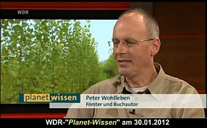
Wärmepumperei bis zum Abpumpen?
Auch die Wahrheit bei den Wärmepumpen liegt doch ganz anders, als die im Labor ermittelte "Jahresarbeitszahl" suggeriert. Im
"Elektro-Profi - Magazin für Ausführung und Planung in der Gebäudetechnik 02/2009" ist dazu ein hochinteressanter Beitrag
von Martin Schellhorn aus Haltern am See zu lesen:
"Die Jahresarbeitszahl bei Wärmepumpen. Vorsicht Falle! Abweichung von Normwerten in der Praxis. ... Im Laufe eines Jahres
ändern sich die äußeren klimatischen Bedingungen, unter denen eine Wärmepumpe arbeiten muss, erheblich. Diese
Temperaturschwankungen fürhen zwangsläufig zu unterschiedlichen Effizienzwerten. Daher wurde die Jahresarbeitszahl festgelegt,
um die Leistung einer Wärmepumpe bezogen auf ein Jahr mit seinen unterschiedlichen Betriebsbedingungen erfassen zu können. Die
Jahresarbeitszahl bildet das Verhältnis der über das Jahr abgegebenen Heizenergie im Verhältnis zur aufgenommenen
elektrischen Leistung ab. Die Größenordnung der Jahresarbeitszahl liegt überschlagsweise zwischen 3,0 und 4,7. Die
Hersteller ... geben ... eine Jahresarbeitszahl an, die unter Normbedingungen gemäß VDI 4650 ermittelt wurde. Nur selten sind
in der Praxis jedoch diese Normbedingungen anzutreffen. Daher kann die [sich tatsächlich im Bauwerk ergebende] Jahresarbeitszahl von
der unter Normbedingungen ermittelten Jahresarbeitszahl abweichen. Weitere Gründe [dafür] auch in der gesamten Auslegung des
Wärmepumpensystems zu finden, z.B. in der Auslegung einer Sondenbohrung oder der Vorlauftemperatur des Heizkreises und der
Größe der wärmeabgebenden Heizflächen. Aber auch das Nutzerverhalten des Betreibers mit dem Lüftungsverhalten,
gewünschten Raumtemperaturen und dem Warmwasserverrbauch können die Jahresarbeitszahl entscheidend [KF: in Richtung totale
Unwirtschaftlichkeit!] verändern. ... Zudem ist in den ersten Jahren nach Fertigstellung mit einem erhöhten Energieaufwand
durch die Bautrocknung zu rechnen [KF: der sich in einer schlechteren Jahresarbeitszahl niederschlägt]."
Weitere zweischneidige Faktoren können nun helfen, die Jahresarbeitszahl im leider nicht bezifferbaren Umfang zu verbessern (unter
Berücksichtigung der diesbezüglichen Ausführungen im hier zitierten Artikel):
- Senkung der Vorlauftemperatur durch höhere Dimensionierung der Heizflächen. Folge: Kostensteigerung der Wärmeverteilung.
- Überdimensionierung der Wärmequelle, beispielsweise durch tiefere Bohrung für die Erdsonde bei Nutzung des Grundwassers
(Wasser-Wasser-Wärmepumpe) oder längere Leitungen / mehr Fläche für die Nutzung von Erdwärme (Sole-Wasser-Wärmepumpe). Folge:
Kostensteigerung der Anlagentechnik.
- Einsatz von Wärmepumpen mit höherem Wirkungsgrad (Coeffizient of Performance COP), also mit höherem Verhältnis der abgegebenen
Wärmeleistung im Vergleich zur aufgenommenen elektrischen Energie. Folge: Kostensteigerung der Wärmepumpe.
- Genauere hydraulische Berechnung und verbesserte Auslegung der primären (wärmepumpenseitiger Wärmekreislauf vor dem
raumwärmeabgebenden Warmwasserkreislauf) und sekundären (raumseitiger Warmwasserkreislauf) Volumenströme. Folge: Erhöhte
Planungskosten.
- Einbindung von Warmwasser aus dem Solarkreislauf der. ggf. vorhandenen Solarkollektor-Anlage in der Heizperiode. Folge: Erhöhte
Anlagenkosten.
Wie das dann alles wirtschaftlich hinzubekommen ist und Vorteile gegenüber den gängigen Heizsystemen bieten soll?
Im Februar 2013 ging mir von einem international renommierten Professor einer weltberühmten deutschen TU folgende Darstellung zu
seiner eigenen Wärmepumperei zu, die ich hier - aus nachvollziehbaren Gründen etwas anonymisiert (...) - zitiere:
"Anfang 2009 plante ich eine neue Heizung in unserem Haus, welches ueberwiegend mit Fussbodenheizung (ca. 130 qm) ausgeruestet
ist, da unser ...-Brennwertkessel aus 1993 schwaechelte. Aus dem bekannten Heizprofil unseres Hauses plante ich eine Erdsonde mit 15
kW Kaelteleistung (nicht 15 kW Heizleistung !), die ich mit einer 12 kW Waermepumpe betreiben wollte. Ich erkundigte mich bei
verschiedenen Anbietern und entschied mich bei der Erdsonde fuer eine Koaxialsonde. Dahinter steckte u.a. die Ueberlegung, dass [in
meiner Wohngegend] sehr viel Schiefer vorliegt und unser Haus auf Schiefergestein gebaut ist. Ferner unterbreitete (die nicht mehr
existierende) Firma ... ein gutes Angebot. Bei der WP wurde mir eine ... empfohlen, die Maschine mit nominell 12,1 kW bei B0/W35.
Aus der geplanten Erdsonden-Kaelteleistung schaetzte ich eine Sole-Temperatur von nicht weniger als +3 Grad ab. Beides zusammen
haette garantiert, dass unser Haus (insgesamt beheizen wir 220 qm Wohnflaeche) auch bei einer Aussentemperatur von -20 Grad noch
ausreichend warm wird. Da ich davon ausging, dass die Gaspreise steigen und der Strompreis langsamer steigt, fiel meine Entscheidung
auf eine Waermepumpe - ein schlimmer Irrtum, wie wir seit zwei Jahren wissen.
Geliefert wurde mir eine Sonde mit 7 kW (!!) Kaelteleistung, basierend auf vorsaetzlichem Betrug, bezahlt habe ich 15 kW (rund 25.000
EUR). Ein Fehler war, dass die Bentonitmischung zum Verfuellen der Sonde falsch angemischt wurde (zu viel Wasser) und einfach die
Bohrmeter fehlten. Das merkte ich aber erst im Winter. Die WP streut um 10 % nach unten und [der WP-Hersteller] rechnete die Streuung
mit wirren Annahmen schoen auf -5%, was ich zu akzeptieren haette. Fakt ist nun, dass meine Sole-VL-Temperatur im Winter bei -3 bis
-5 Grad Celsius liegt und ich bei einer maximalen Heizungs-VL-Temperatur von 47 Grad (wir haben noch ein paar Heizkoerper im
Keller-Wohnraum, FB-VL auf +43 Grad begrenzt entsprechend -20 Grad Aussentemperatur) gerade noch 9,5 kW Heizleistung habe bei einer
Arbeitszahl von 3,3. Die minimal erreichbare Sole-VL-Temperatur liegt bei -6 Grad, da tut sich dann nichts mehr, der Ruecklauf liegt
dann aber bei -9 Grad. Wegen des dichten Schiefergesteins passiert der Fuellung nichts, zumal an der Sondenoberflaeche nicht weniger
als -5 Grad anliegen.
Da diese Heizleistung nicht reicht, schalte ich bei -5,25 Grad einen wasserfuehrenden Pelletsofen zu (7 kW bezogen auf Wasser), bei
-5,5 Grad eine 6 kW Heizpatrone. Heizzentrale ist ein 1000 Liter Pufferspeicher, fuer Trinkwasser haben wir einen 300 L
Pufferspeicher. Anstelle der von mir ausgerechneten JAZ von 4,5 lande ich bei schwachen 3,3. [Den WP-Hersteller] habe ich nach
Ruecksprache mit einem Sachverstaendigen nicht verklagt, jedoch [die Bohrfirma]. Am Tag der Einreichung der Klage meldete [die
Bohrfirma] Insolvenz an, und ich lernte das Insolvenzrecht kennen: Mangels Masse wurde ein Insolvenzverfahren nicht eroeffnet. Das
Geld, das noch da war, erhielt der Insolvenzverwalter. Am Tage der Auftragerteilung in 2009 war der Creditreform-Eintrag von [der
Bohrfirma] in Ordnung, 2010 (nur ein Jahr spaeter) verheerend.
Um das Dilemma zu loesen, erkundigte ich mich bei weiteren Unternehmen. Die billigste Sonde (von ...) haette mich gut 20.000 EUR
gekostet, eine Doppel-U-Sonde gut 30.000 EUR. Ich habe davon abgesehen, da das Vertrauen in die "Erdwaerme" bei mir nicht mehr
existiert. Ich werde voraussichtlich im kommenden Jahr einen ca. 25 Meter langen Energiezaun aufstellen, der durch ein T-Ventil in
die Sondenanlage eingebunden wird. Zaun und Sole laufen nicht parallel oder seriell, sondern entweder oder. Kriterium ist die
Sole-VL-Temperatur aus dem Zaun.
Unser Haus benoetigt bei DURCHGEHEND +21 Grad Raumtemperatur (keine Nachtabsenkung bzw. nur in den Schlafzimmern) pro Jahr zwischen
33.000 und 35.000 kWh Heizenergie und zusaetzlich ca. 4000 - 5000 kWh fuer die Trinkwassererwaermung (4 Personen). Bei einer JAZ von
3,3 muss ich pro Winter ca. 5.000 kWh mit Pellets zuheizen (war so nicht geplant) und ca. 400 kWh direkt elektrisch.
Die durchgaengige Beheizung tut dem Haus gut, und es gibt weder Schimmel noch feuchte Stellen. Uns trifft natuerlich jede
Strompreiserhoehung, obwohl ich mir bis 31.01.2014 21 Ct/kWh gesichert habe. Einen Waermepumpentarif gibt es hier nicht, und eine EVU
waere im Winter eh nicht gut."
Nachtrag:
"Angesichts des kalten Winters habe ich gerade meine Strom-Nachzahlung erhalten und bin fast vom Stuhl gefallen. Mein Ratschlag
ist unmissverstaendlich: Angesichts des Strompreisirrsinns und der schwachsinnigen Energiewende rate ich UNBEDINGT von Waermepumpen
ab, die koennen sich schnell zum finanziellen Grab entwickeln, zumal eine Sole/Wasser-Maschine inkl. Erdsonde kaum fuer weniger als
30.000 EUR zu erhalten ist. Und am Ende wird der Kunde sowieso im Regen stehen gelassen."
Diesen allgemeinen Mißstand nutzt auch folgender
Werbetext der Verbraucherzentrale:
"Bei einem Umstieg von einem klassischen Heizkessel auf eine Luft-Wärmepumpe bleibt die erwünschte Kostenersparnis häufig aus. ...
Viele Anlagen verbrauchen nämlich deutlich mehr Strom als vom Hersteller zugesichert. Einigen Verbrauchern wird in Aussicht gestellt,
zwar zunächst höhere Investitionskosten zu haben, dafür aber künftig nicht nur Energie, sondern bares Geld zu sparen. Geht diese
Rechnung nicht auf, sorgt das bei den Betreibern für Unmut."
Weitere Infoquellen
Bei der hier offensichtlich sehr notwendigen Energie-Bewertung helfen Ihnen - neben dem spitzen Bleistift, einem gesunden
Menschenverstand mit gesunder Skepsis (wird bei geizbeseelten Sparfüchsen regelmäßig ausgeschaltet) und einem vielleicht ehrlichen
Heizungsplaner - und den sich gerne kostenlos anbietenden Heizsystemverkäufern (immer gilt: Trau, Schau, Wem?), auch:
Wärmepumpen richtig einschätzen - Stromfresser oder Ökoheizung ? von: Dr. Frohmader, Heinz Horbaschek, Arbeitsgruppe "Neue Energie" Kreisgruppe Bund Naturschutz Erlangen
ASUE Arbeitsgemeinschaft für sparsamen und umweltfreundlichen Energieverbrauch e.V.
(Gaswirtschaft)
IWO Institut für wirtschaftliche Ölheizung e.V.
www.proheizoel.de - fetzige und kontroverse Info zum verblödeten Energie-Zeitgeist
Haustechnikdialog - Forum Heizöl oder Flüssiggas?
und Ihr Energieversorgungsunternehmen.
Der Brennstoffspiegel, Fachzeitschrift der Brennstoffhändler,
legt dazu in 2/04 eine aufschlußreiche Statistik vor:
Brennstoffkosten-Preisvergleich inkl. MwSt in EURO für Energiemenge äquivalent 3.000
Liter Heizöl, Beispiel Berlin:
Heizöl - 1.059,-
Pellets - 1.280,-
Erdgas - 1.431,-
Flüssiggas - 2.386,-
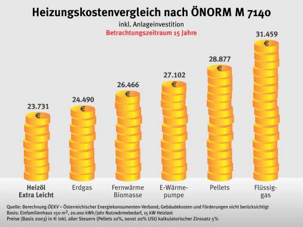
Eine Grafik aus der Super-Info-Quelle: IWO Austria zeigt nicht nur dem ÖKO, wo es wirklich
langgeht
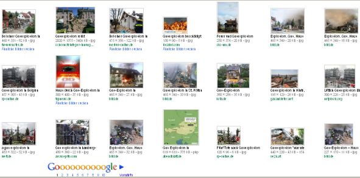
Google Bildsuche "Haus + Gasexplosion" - Auch ein Aspekt bei der Auswahl der optimalen Energieversorgung ...
Ökoenergie - nur toll oder idiotisches Trallala der Ökoabzocker?
Abzuraten ist vor den Verlockungen der sog. neuen Ökoenergien
(Wasserkraft an Altstandorten ausdrücklich ausgeschlossen!). Sie werfen viele Probleme auf, die in den
Verkaufsinformationen nicht ausreichend deutlich werden (das sage ich als langjähriges Mitglied des Bund
Naturschutz, Bewohner eines Wasserkraftwerks am jahrhundertealten Standort einer Zisterziensermühle und
Bauernwaldbesitzer!). Und daß hinter dem brutalen Ökoschwindel, den uns die Nutznießer - reißende
Wölfe im Schafsgewand? - derlei Ökomist zumuten, geradezu "xxx"-Öko-Energien stecken könnten -
von den der Ökomafia hörigen Medien und Politbestien nach besten Kräften gepuscht, können Sie eventuell auch diesem
tollen Video entnehmen, wenn Sie wollen:
Problemübersicht der Ökoenergien
1. Betriebsstörungen und -risiken
Ein störungsfreier Automatikbetrieb mit Feststoffheizungen wie Hackschnitzel oder Pellets (ist schon in 1950ern den Kohleleuten
mißlungen) gelingt nur kurzfristig bzw. gar nicht bis nie. Deswegen berichten ehrliche Betreiber von Hackschnitzel-Heizwerken und
Pellets-Heizungen (da gibt es nach meinen Recherchen sehr wenige, da es sich dabei oft um eingefleischteste Ökofanatiker handelt,
bei denen die Ökostörung geradezu zur Liturgie und Ablaßpraxis handelt, egal ob Frau und Kind frierend heulen und
zähneklappernd eisig duschen oder stinken müssen) von erheblichsten Dauer-Störungen. Nicht nur in der
Brennstoffzuführung (Schneckenstörungen sind der Alltag, die bröselig-staubigen Hackschnitzel und Pellets nehmen gerade in
kellerigen Lagerräumen (typische Kellerlagerung!), aber selbstverstäändlich auch sonst bei entsprechender Luftfeuchte
gerne Luftfeuchtigkeit auf, quellen, schimmeln, verdrecken, werden in unterschiedlichsten Größen geliefert - immer wieder
dürfen Pelletsfans "bis zu 6 cm lange Presslinge" aus der
blockierten Pelletsheizung herausfischen - und überbeanspruchen deswegen die Fördermechanik), sondern auch in der
überspannungsempfindlichen (Blitz!) Elektronik.
Einen interessanten Einblick zur Pelletsqualität und Pelletsstörungen bietet dieser gut pelletierte Beitrag im Haustechnikforum:
Pellet Kessel grüne/türkise Rückstände im Brennraum
Eine weitere Störungsquelle ist auch das Versintern des Brennerrosts/Brennertopfs durch Schlackenbildung bei der Pelletsverbrennung, die den Brennraum mit
einer Schlackeschicht überzieht: "Auf dem Brennerrost bildet sich eine harte Kruste aus Asche, die nach und nach die Verbrennung durch Unterbrechung der
Luftzufuhr stoppt und danach manuell entfernt werden muss." (aus einer Vaillant-Pressemeldung
zur Vermarktung aufwendiger/teurer Rostreinigungsautomatik)
Ein Abbrand oder eine Selbstentzündung der Hackschnitzel-Lagerhalle, des Hackschnitzel-Bunkers, des Hackschnitzelsilos, der Kachschnitzelheizung, des
Hackschnitzel-Heizkraftwerks oder auch der Holzhackschnitzel-Einstreu kann des öfteren mal vorkommen:
4. Mai 2012: Kloster Mehrerau
16. Oktober 2014: Garrel
1. Juni 2015: Simmern
22. Oktober 2015: Grimmelshofen
28. Oktober 2015: Gersthofen
Doch auch die Hackschnitzelheizungsanlage selbst geht immer wieder mal gern dolle außerhalb des Brennraums in Flammen auf, beispielsweise:
29. Oktober 2015 in Friesenheim: Hackschnitzelheizungsanlage auf Firmengelände in Brand geraten
1. November 2015 in Kellmünz: Hackschnitzelheizung einer Brennholz-Trocknungsanlage entzündet sich
2. November 2015 in Pöllau: Hackschnitzel im Heizraum brennen
4. November 2015 in Aidenbach: Hackschnitzelheizungsbrand im Wohnhauskeller
27. November 2015: Guglwald
14. Januar 2016: Forst
15. März 2016: Etzenhausen
15. Mai 2016: Radevormwald
2. Juni 2016: Rendswühren
18. Juni 2016: Westendorf
25. Juni 2016: Drentwede
25. Juli 2016: Potzham
25. Juli 2016: Warendorf
6. Juli 2016: Sontheim
19. Juli 2016: Münzinghof
12. September 2016: Kleinkahl
13. September 2016: Bad Staffelstein-Schwabthal
Andererseits muß die Anlage durch fleißige Dauerwartung andauernd pflegeintensiv auf Schuß gebracht werden. Wer dann keinen Riesen-Pufferspeicher sein eigen
nennt, ist arm und kalt dran: Eine überglückliche Pelletsanlagen-Betreiberin: "Wenn wir die [Pellets-]Heizung nicht alle 14 Tage abstellen und gründlich
reinigen, dann geht die ganze Anlage auf Störung – nichts geht mehr."
(aus Meldung rp-online)
Ein Parallelkessel (Öl bzw. Gas) bzw. riesige Pufferspeicherkapazitäten und immer kompliziertere Kessel- und Fördertechnik sind also Pflicht, zumindest wenn
man sicher heizen oder gar andere Abnehmer beliefern will, und wird auch ständig gebraucht. Oder man friert und wird zum Kaltduscher bei jeder Störung, bis
der Ösi endlich kommt. Heulen und Zähneklappern steht den Öko-Apokalyptikern natürlich andererseits gut zu Gesicht ;-) Und klar ist, daß sich die versponnenen
Ökofanatiker zuhause, in der Kirche und ebenso in der öffentlichen Hand oder dem Gemeinderat, Stadtrat usw. von keinem praktischen Nachteil irgendeiner
vorgeblichen Ökotechnik abhalten lassen, entweder ihr schlechtes Gewissen damit zu beruhigen oder dem ausgezehrten Geldbeutel damit Nachschub zu verschaffen
oder beides. Vorzugsweise auch auf fremde Kosten der kirchlichen oder öffentlichen Haushalte. Manche vollvergeizte Leichtgläubige glauben sogar, daß man
mit Ökoenergie irgendeiner Art Geld sparen könne. Das gibt nach einiger Zeit des Negierens und Verleugnens der ökonomischen Tatsachen dann das böse Erwachen
aus dem Ökoalbtraum.
Links dazu: Wenn die Pellet-Heizung zum Albtraum wird!!
Störungen an Pelletsheizungen (Linksammlung)
Eine wissenschaftliche Studie (Prof. Ameling, FH Trier) hat sich inzwischen mit der Verstaubungsproblematik im Lagerraum für Holzpellets näher befaßt.
Ergebnis: Die Geometrie des Lagerraums kann Probleme bereiten, wenn sie nicht auf das Saugsystem abgestimmt ist. Niedrige, rechteckige Bunkerräume, meist mit
umgekehrtem Pyramidenstumpf am Fußboden, verhindern oft die korrekte Absaugung der Pellets bei abnehmendem Füllstand. Außerdem verursacht Einblasen und
Absaugen der Pellets oft eine extreme Staubproduktion, auch als Folge des Abriebs auf den Wänden und an der Decke beim Befüllen des Bunkers.
Folge: Die Sauglanze verstopft, ebenso der Förderschlauch. Und wenn dann als Prallfäche im Bunker der übliche Teppichboden verwendet wird, löst der sich nach
und nach in seine Einzelbestandteile auf und verstopft ebenfalls das Pellets-Austragsystem.
Ein weiteres Manko ist die Entlüftung des Pelletsraums während der Befüllung. Wenn sich hier das Entlüftungsrohr mit
seinem Abluftstutzen zu nahe bei dem Füllstutzen befindet, kann es vorkommen, daß die eingeblasenen Pellets ab entsprechender
Füllhöhe gleich wieder durch die Entlüftung hinausgeblasen werden. Und wenn sie dann endlich im Lagerraum ruhen, weiß kaum
eine Pelletsgläubiger, was dann blüht: Es kommt zu muffig-gruselig-stechenden Gerüchen im Lager, sogar
gesundheitsschädliche Gase entweichen der perfiden Pelletsmasse. Grund: Die ganz natürliche Bio-Emissionen von Holzpellets
enstehen aus der Oxidation der darin enthaltenen ungesättigten Fettsäuren. Pfui Deibi! Der TÜV Rheinland fordert deswegen
inzwischen belüftete Lagerraumdeckel. Dat kost extrich, lieber Pelletianer! Spar Dich zu Tode oder lüfte! gilt eben auch beim
Pelletslager, nicht nur im isolierten Pottdichtwohnraum in Deiner Wohn-Plastetüte.
Aus den Projektergebnissen eines großangelegten Forschungsprojekts des Deutsche Energieholz- und Pellet-Verbands e.V.
DEPV, erarbeitet mit der Georg-August-Universität Göttingen, die das DEPV nun mit dem TÜV Rheinland als Sicherheitsratschläge
für Pellet-Lageranlagen empfiehlt - zitiert nach FEE Heizungsjournal-Spezial 12, 2011:
"Mindestens zwei Kupplungsstutzen (Füll- und Absaugstutzen) mit Lüftungsöffnungen von je 20 cm² freie Öffnungsfläche einbauen bzw. umrüsten.
Vor Betreten des Lagerraumes die Pelletheizung und Fördereinrichtung abschalten sowie die Zugangstür eine Viertelstunde vorher öffnen.
Füll- und Absaugstutzen elektrisch erden mit mindestens 4 mm² Kupferader an der Hauspotenzialschiene.
Beim Säubern des Lagerraumes vom Pelletstaub Staubmaske tragen.
Fördereinrichtungen und elektrische Betriebsmittel regelmäßig vom Pelletstaub befreien.
Füllstandskontrolle über eine fest verschlossene Sichtscheibe (Bullauge) durchführen."
Na, da muß es im Forschungsprojekt ja ganz schön Streß gegeben haben rund um Giftgas, Feinstaub und Stromschlag! Eben typisch Öko!
Überraschend teuer sind nun nicht nur die Pelletsanlagen mit allem Drum und Dran, sondern auch die - zur bestmöglichen Qualitätssicherung im Hinblick auf die
gegebenen Störungspotentiale erforderlichen - Pellets nach DIN plus oder Ö-Norm auch, mal abgesehen von den typischen Versorgungsengpässen bei der Tankware,
die dann noch zum teureren Pelletssack verpflichtet.
Auch im Kaminbereich stellen die Pelletsheizungen erhöhte Anforderungen: Gibt es keine zusätuzliche Nebenluftklappe, keinen wärmegedämmten Zugeinsatz, kein
dies und kein das, ja, auch dann geht die vollautomatische Pelletsheizung schnell in die Knie.
Obendrein muß man als passionierter (leidenserfahrener) Energiegeizling verdammt achtgeben, daß nicht wie so oft die brüh teurer wird als die Worscht: Schnell
ist die Pelletstechnik mit ihrer Pellets-Förderanlage, dem Gebläse und den Pumpen der Hauptstromfresser im Energiesparbüdli und schluckt Betriebsstunde für
Betriebsstunde mehrere hundert Watt wie nix.
Damit nun in der Übergangszeit der Pelletsbrenner nicht dauernd anfährt und abfährt, also taktet bzw. ein- und ausschaltet, ist meist ein ausreichend
bemessener und extrakostender Speicherkessel / Pufferspeicher quasi obligatorisch.
Daß nun die Angst vor ausgehenden Lagerstätten für Öl und Gas oft den Ausschlag für all die ansonsten nachteilige Pelletstechnik geben, sei hier mal nur
nebenbei erwähnt, daß diese Angst komplett überflüssig und unberechtigt ist. Weitere Info zum Thema hier.
Fazit: Es braucht also mehr als die Begeisterung für nachwachsendes Holz, wenn man all den bekannten und unbekannten Problemen aus dem Weg gehen will.
Und auf keinen Fall darf man ehrlich rechnen und sein in die Pellets- oder Hackschnitzelei investiertes Kapital verzinsen und dann die sich ergebende
"Amortisation" und Betriebssicherheit (wichtig auch für Contracting) gegenüber z.B. einer bewährten Ölheizung oder elektroheizung vergleichen. Denn dann wird
der Pelletshumbug und der Holzhackschnitzelbetrug sogar jedem abergläubigen Ökojünger offenbar. Und wie es um die ökologische Katastrophe rund um die
spritverbratende Belieferung mit dem Holzgewurstel aussieht, wird ansatzweise in dieser
Stellungnahme von Johann Beck, Kreisvorsitzender
Bund Naturschutz aus Eichstädt, verdeutlicht.
Doch sofort treten die Faktoren Weltrettung und "ich bin besser als alle anderen" in Kraft und die Wirklichkeit wird bis zum Bankrott vom
Tisch gewischt. Da ist es freilich wurschtegal, wenn in test 11/2010 offenbart wird, daß beispielsweise die
Pelletieranlage von German Pellets in Mahlberg/Ettenheim,
mit ihren vielfältigen Belästigungen ein beliebtes Ziel für allerlei Beschwerdevorgänge der bemerkenswert aufklärererisch tätigen örtlichen
Bürgerinitiative Gewerbepark Ettenheim/ Mahlberg (BI-GP) e.V., ca. 65.000 Tonnen Altholz, darunter auch Altholz A2
(Klasse A2: behandeltes Vollholz, verleimtes, gestrichenes, beschichtetes, lackiertes oder anderweitig behandeltes Altholz) verbrennt, um damit 125.000
Tonnen Pellets auf geradezu abenteuerlich ökologische Art trocken zu kriegen. Hoffentlich ohne untergemogeltes Giftholz ... Die damit verbundene Emission von
Stickoxiden - Lärm, Gestank und Feinstaub mal außen vor - ist als besonders gelungener Beitrag zum Umweltschutz zu bewerten, für den ja bekannterweise alles
erlaubt ist. Man nennt das praktizierende Ökoreligion, von allen maßgebliche Ökopolitikern und Ökoadministratoren der öffentliche-amtlichen Ökoverwaltungen
voll gedeckt. Weil ja nur und ausschließlich das Bürgerwohl zählt, und der wohlte das ja, nachdem er diesen Ökoaktivisten die unbeschränkte Macht übertragen
hat, geradezu alles zu tun und zu lassen, wenn es nur der Weltrettung und dem erbarmungslosen Klimaschutz dient.
Noch ein praktisches Beispiel gefällig? Bitteschön, die "Fernwärme GmbH" in Seßlach.
Eigentümer: 52 Prozent die vom hochökologischen Bürgermeister Hendrick Dressel vertretene Stadt Seßlach, 24 Prozent die Waldbauern GdbR mit Bürgermeisters
Hendrick Dressels noch ökologischerem Sohn als Teilhaber und 24 Prozent ein Ingenieurbüro aus Rödental, das die Planung der ganzen höchstökologischen
Angelegenheit mit zu verantworten hat. Das nennt sich dann hochtrabend neudoitsch - Nachtigall, ick hör dir trapsen - PPP - Private Public Partnership. Raten
Sie mal, warum die privaten sogenannten "Partner" da so hochherzig mitmachen und die Klimaschutzstadt Seßlach für ein derartiges Projekt als
öffentlichen Partner gewinnen? Genau!
Der bayerische Landwirtschaftsminister Josef Miller (CSU) - der Ingenieurkammerpräsident wäre bestimmt auch net verkehrt gewesen - weihte das
Hackschnitzel-Heizkraftwerk mit einem Hackschnitzelkessel mit 1,3 MW Leistung 2007 hochoffiziell ein, lobte dabei die außergewönliche Weitsicht des Seßlacher
Stadtrates und Bürgermeisters Hendrik Dressel über den Schellenober und den grünen Klee für ihre Entscheidungskraft, "die sich heute als wichtig, notwendig
und richtig erweist. "Alle reden vom Klimawandel, Sie haben bereits gehandelt." (Quelle: Arpeggio.de:
Feuer und Flamme für das neue Heizkraftwerk) - und 200.000 öffentliche Zuschußmittel in der 1,4 Millionen teuren Anlage versenkt. Um nun lumpige 41 Häuser
mit Wärme zu versorgen (Schule, Rathaus, Landherberge usw., die dort anfallenden Umstellungskosten wie selbstverständlich nicht gerechnet!).
Im Jahre 2009 sieht sich der Seßlacher Stadtrat dann endlich gezwungen, die aufgelaufenen aktuellen Verluste seiner schönen Fernwärme GmbH zum brisanten Thema
der Stadtratssitzung am 14. April zu machen: Gesamteinnahmen: 210.500 EUR, davon 193.900 EUR Wärmeerlöse und 16.600 Stromerlöse aus der Photovoltaikanlage,
die man zum guten Überfluß zusätzlich zur Hackschnitzelbude errichten ließ - man hat'S ja dicke und man gönnt sich ja sonst nix. Den Einnahmen stehen aber
Ausgaben von lediglich 189.450 EUR Betriebskosten und Zinsaufwendungen gegenüber, nicht zu vergessen die Darlehenstilgung, die dann insgesamt zu einem
Riesenverlust von 41.655 EUR führen. Als Hauptgründe für das miesepetrige Geschäftsergebnis der Seßlacher Holzkopffirma, das jeder leicht hätte vorhersagen
können, werden genannt:
Eine wesentlich geringere Wärmeabnahme als geplant und - der wahre Grund: Die Kosten der Biomasse - sprich der Holzhackschnitzel -
sind im Vergleich zu ihrer Effizienz zu hoch. Und damit ergibt sich wie von selbst der logische Flaschenhals:
Für eine schon jetzt zu teure - doch - fleißig, fleißig! - nachwachsende Heizenergie lassen sich die für einen (bisher (!) freiwilligen) Anschluß vorgesehenen
Bürger der Stadt Seßlach nicht erwärmen. Geschweige denn, wenn die Wärme kostendeckend verkauft werden müßte. Die irre und sich gar nie nicht rechnenden
Kosten der Umstellung von der oft extrem günstigen Elektroheizung auf den Holzhackschnitzelquatsch mal gar nicht betrachtet. Doch was beschließt der Stadtrat?
Klaro: Die Gewährung eines Gesellschafterdarlehens über 50.000 EUR als "Liquiditätsausgleich". Von den weiteren öffentlichen Projekten der jegliche
Wirtschaftlichkeit verachtenden Stadt bei der "energetischen Sanierung" ihrer Schulen (Erneuerung der Fensterfronten an Volksschule, Solaranlage auf
Hauptschuldach usw.) im Rahmen des Konjunkturpaketes 2 der Bundesregierung wollen wir hier mal ausnahmsweise nicht anfangen.
Dafür aber die Prognose hier am 16. April 2009 wagen:
Mit einer der demnächst kommenden Novellen/Neueinführung der Energiegesetzgebung wird der Anschlußzwang an Biokraftwerke für die Opfer der deutschen
Ökodiktatur kommen. Mehr oder weniger sonnenblumig umschrieben, um den Abgeordneten das perfekt eintrainierte Handnaufheben zu erleichtern. Wollmer wetten?
Wie heißt es doch in allen Beschlußvorlagen aller Bundesregierungen zur EnEV so schön? Es entünden entweder keine oder nur sehr geringe, jedenfalls kaum
bezifferbare Mehrkosten für die öffentlichen und privaten Haushalte. Na ja, ein bisserl darf's gaaanz vielleicht hier und da schon sein, aber gar net schlimm,
weil die mehr als lumpigen Mehrkosten in wenigstelliger Milliönchenhöhe durch die geradezu aberwitzig irren Einsparungen in Folge des vom ach so weisen und
ach so klugen und ach so lieben Gesetzgebers erlassenen Ökozwangs ja vieltausendfach und schnellstens wieder hereingespielt werden. Notfalls bestätigt durch
wunderlichste Gutachtereien einschlägig bekannter Ökoinstitute oder Energieagenturen. Nur Bundestagsabgeordnete aller Parteien können das glauben (tun sie
aber gar nicht alle, sondern müssen den ständig verschärften Ökoterror dann nur ihren Wählern verkaufen, wenn sie sorglos überleben wollen), sonst aber
bestimmt niemand.
Was lernen wir? In Seßlach zumindest können die meisten Bürger rechnen. Deren gewählte Vertreter aber einstimmig! nicht. Warum wohl? Weil sie nicht mit
eigenem Geld rechnen müssen. So einfach kann sich eine Verschwörungstheorie auflösen. Da brauchen wir über irgendwelche Annehmlichkeiten, die eine PPP den
öffentlichen - public - Partnerschaftsbetroffenen bieten kann, gar nicht weiter nachzudenken.
Und eines ist auch klar: Am besten rechnen können die privaten Partner - geradezu bauernschlau. Sie sparen sich klugerweise - nichts anderes ist der
Beschlußfassung des Stadtrats zu entnehmen - sogar eine partnerschaftliche Beteiligung am Liquiditätsausgleichsdarlehen, aus dem ja wohl auch die ihnen
gebührenden Einnahmen mehr oder weniger direkt bedient werden müssen. PPP - Das unübertreffbar ideale Modell für die Privaten! Und so kommt es nach Auslaufen
der Stillhaltepflicht 2010 zu einer Erhöhung des Wärmepreises, obwohl nach Aussage eines "klagewilligen" (NP vom 9.12.2010) Abnehmers, Rechtsanwalt Georg
Stock, der ursprüngliche Preis mit 5,5 Cent pro Kilowattstunde Fernwärme schon 20 Prozent über dem mit Heizöl üblichen Preis liegt. Und erstmals wird klar,
daß die ach so CO2-sparende Anlage inzwischen mit bis zu 10 Prozent Ölkesselleistung läuft, der neben dem Hackschitzelkessel für eine sichere Wärmeversorgung
sorgt. Ein lustiges Ereignis am Rande: Die Wärmebedarfsberechnung des beteiligten Ingenieurs, nach dem die Auslegung der Hackschnitzelanlage erfolgte,
liegt bezüglich der tatsächlich abgenommenen Wärmemengen der eingerechneten Verbraucher teils arg daneben. So verbraucht die Seßlacher Schule anstelle
berechneten 1179 Megawattstunden (MWh) im Jahre 2008 nur 750 und 2009 nur 781 MWh, ohne daß ein Schüler, geschweige denn Lehrer über Frostbeulen klagen mußte.
Ja, so eine massiv gebaute Schule ist halt doch nicht so ein Energievielfraß, wie die klägliche Wärmebedarfsrechnung den dämmwütigen Kommunen vorrechnet. Um
dann öffentliche Mittel daran zu vergeuden, wie es folgender Pressemitteilung der Regierung von Oberfranken zu entnehmen ist:
"Pressemitteilung-Nr.: 131/09, 21.08.2009:
Konjunkturpaket II: 1,1 Mio. EUR für energetische Modernisierung der Grund- und Hauptschule Seßlach
Für die energetische Modernisierung der Grund- und Hauptschule Seßlach (Landkreis Coburg) hat die Regierung von Oberfranken einen Bewilligungsbescheid in Höhe
von rd. 1,1 Mio. EUR an die Stadt Seßlach übersandt. Mit der Investition kann die Schule künftig den Energiebedarf von rd. 5.300 m² beheizter Fläche
reduzieren. Dies soll hauptsächlich durch den Austausch der Fenster und die Dämmung der obersten Geschoßdecke sowie der Außenwände erreicht werden.
An den gesamten Investitionskosten von mehr als 1,3 Mio. EUR beteiligt sich der Bund zu rd. 65 % und das Land Bayern zu rd. 21 %. Die
übrigen rd. 14 % trägt die Stadt Seßlach.
Regierungspräsident Wilhelm Wenning freut sich, dass die Gemeinde Seßlach damit im Bereich der Grund- und Hauptschulen einen bedeutenden Beitrag leisten kann,
langfristig Energie einzusparen und den CO2-Ausstoß zu verringern. Zudem dient die Gesamtinvestition der Konjunkturbelebung, so Wenning weiter.
Mit der Modernisierung setzt die Stadt Seßlach einen weiteren Meilenstein im Klimaschutz. Bereits seit zwei Jahren wird die Schule ausschließlich aus
regenerativen Energiequellen beheizt. Das Gebäude ist an das Biomasseheizwerk der Fernwärme GmbH Seßlach angeschlossen."
Es ist freilich ein mickriges Körndl Wahrheit in dieser Freudenbotschaft: Die Konjunktur wurde gefördert. Fragen wir lieber nicht, zu welchem Preis und in
wessen Taschen? Und der Herr Rechtsanwalt Stock läßt im NP-Zeitungsbericht "Preiserhöhung - und Kunden zahlen nicht" abschließend auch verlauten, daß im
Einklang zur vom Bürgermeister Dressel verkündigten Preissteigerung auf nun 7,5 Cent pro KWh - O-Ton Dressel: "Wir können nichts dafür, wenn der Rödentaler
Architekt sich verrechnet." - auch der Holzpreis der Waldbauern GbR seines Sohnes steige. So funktioniert er eben, der öffentliche und private
Klimaschutz mit doch äußerst angenehm beschränkter Haftung. Ein Schelm, der Böses dabei denkt ...
Daß derart wohlfeile und höchstökologische Hackschnitzelitis und Klimaschützerei sich überall verbreitet, beweist auch der bürgernahe Gemeinderat des Marktes
Marktzeuln. Dort wird aus der Gemeinderatssitzung vom 9. Juni 2009 berichtet, daß man ausgerechnet ein "Biomassekraftwerk" (oh, wie klingt das edel, fromm und
gut!) als Ersatz für die seit schon über 40 Jahren funktionierende Ölheizung der dortigen Schule errichten will. Selbstverständlich inkl. Außenbunker.
Kommunales Klimaschutzsparen muß ja richtig deftig teuer sein, sonst taugt es nicht für "Ökologische" Zwecke der Beteiligten. Und dann erfahren wir (Obermain
Tagblatt Lichtenfels vom 11.6.09):
Zusätzlich zum Hackgutkessel mit 220 kW ist ein Ölkessel mit 150 kW als so genannte Havarieanlage geplant."
Das ist schön teurer und oberschlau. Versagt nämlich die landauf und -ab als vermaledeit störungsanfällig erwiesene Hackschnitzelei, hat der Planer gleich den
Ölkessel als Ersatz zu bieten. Kostet ja nur 206.000 EUR insgesamt. Daß man bei der parallel anlaufenden Flachdachsanierung (207.000 EUR) und
WDVS-Verkleisterung der Fassade (115.000 EUR, dazu neue Fenster 160.000 EUR) nicht auch diesen Königsweg der Unwirtschaftlichkeit geht, und neben der
Superdämmkonstruktion gleich ein Steildach bzw. eine gemauerte oder betonierte Vorsatzschale a la in Tschernobyl erprobter Sargbautechnik drüber- bzw.
davorbaut, verwundert dann doch etwas - im Ökoparadies Deutschland ...
Doch nach diesem kleinen Ausflug in die Befindlichkeiten der kleinen und großen Parteipolitik landauf und landab nun endlich wieder zurück zu den allgemeinen
Betriebsproblemen der Holzheizerei:
Außerdem müssen die hackbeschnitzelten Holzbrenner über längere Zeit "eingefahren" werden, wobei ebenso wie bei dem ständig störungsbedingtem Rauf- und
Runterfahren vermehrt und auch im Dauerbetrieb scheußliche Abgase (Kohlenmonoxid, Chlor, Dioxine, Furane, ...) die Luft verpesten. Sichere Filtertechnik ist
nämlich störungsanfällig und teuer, das rechnet sich nicht, was dem Ökofan natürlich egal ist.
Tipp für Rest-Realisten: Alles schnell ausprobieren, so lange noch die Garantiezeit läuft. Die Hersteller sind doch meist Austriaken, die wollen oft nicht
ihren Skiurlaub abbrechen und gleich kommen, wenn die Holzkacke am stinken ist und das schwarze Kondensat aus allen Rohren und Löchern tropft. Wenn dann der
"Oberheizmeister" urlaubt, krankfeiert oder sonstwie durch unerfahrenes Personal ersetzt werden muß, ist Umschaltung auf den konventionellen Parallelkessel
die beste Variante, um die Holzbrenntechnik, die Bürgermeisternerven, den Ösi, die Kunden und die Umwelt gleichermaßen zu schonen. Diese Erkenntnisse stammen
von Gesprächen mit Betreibern, ätsch! Und wer sich aktuell für das Störungspotential des Hölzchenheizwahnsinns interessiert: Selber Googlen macht schlau!
Und hier ein Bericht des rasenden Öko-Reporters zur bald nach Einweihung explodierten Biogasanlage in Daugendorf-Riedlingen (Lkr. Biberach,
Baden-Württemberg):
16.12.07 - STINKENDER GÜLLEREGEN. Biogasanlage explodiert. Am Morgen regnete es Gülle: Aus noch
ungeklärten Gründen ist in Baden-Württemberg der 22 Meter hohe Turm einer Biogas-Anlage in die Luft gegangen. Dabei entstand ein Schaden in Höhe von einer
Million Euro. ... und im SWR hieß es: www.swr.de/nachrichten/bw/-/id=1622/nid=1622/did=2950940/7ybak/index.html: "Sachschaden bei Explosion vermutlich
höher. Nach der Explosion einer Biogas-Anlage in Daugendorf im Kreis Biberach in der Nacht zum Sonntag ist der Sachschaden vermutlich deutlich höher als
bisher angenommen. Nach neuesten Erkenntnissen der Betreiber könnten die Aufräumarbeiten und Neubauten bis zu drei Millionen Euro kosten. ..." Kommentar:
Echt(e) Scheiße!!!
Auch Brandfälle gibt es in Biogasanlagen:
2. Mai 2012: Goch-Pfalzdorf
4. Februar 2014: Bidingen-Bernbach
Im Jahre 2015 nimmt sich der Bayerische Rundfunk endlich der Biogaskatastrophe an und berichtet - Achgut und das Europäische Institut für Klima und Energie
berichten darüber: Biogasanlagen begünstigen das Artensterben
Zum Thema Biogas schickt mir Hermann Norff diese hübsche Aufstellung:
Hermann Norff
Schulstr. 3
46487 Wesel
Mitunterzeichner des Heilgenrother Manifestes
Wesel, 24.01.2008
Biogas-Strom, Bio-Sprit
Zur „Rettung“ unseres blauen Planeten Erde muss nach Ansicht von UN, EU und der Bundesregierung der Kohlenstoffdioxydgehalt der Atmosphäre
drastisch gesenkt werden. Die erneuerbaren Energien Windkraft, Photovoltaik, Biomasse, Wasserkraft [KF: aka Renewable Energy Sources RES] sollen dazu
beitragen das gesteckte Ziel zu erreichen. Unabhängige anerkannte Wissenschaftler haben bewiesen, dass der Anstieg des Kohlenstoffdioxyd (CO2)
immer einer vorausgegangenen Temperaturerhöhung folgte und deswegen nicht verantwortlich sein kann für die globale Erderwärmung von 0,7 Grad Celsius bis 1998.
Danach sinkt die mittlere Erdtemperatur bei unverändertem CO2-Gehalt der Atmosphäre wieder. Diese wissenschaftlich bewiesene Tatsache, kümmert die
Politik und die regierungspflichtigen/-hörigen Organe wenig bzw. gar nicht!
Die Biomasse wird in diesem Bericht näher betrachtet. Seitdem im August 2004 das Erneuerbare-Energien-Gesetz (EEG) novelliert wurde, hat eine starke
Nachfrage zum Bau von Biogasanlagen bei Landwirten eingesetzt.
Die Biogas-Stromproduktion ist von der Menge des erzeugten Biogases abhängig. Pro Großvieheinheit können jährlich 400 - 500 m³ Biogas erzeugt werden. Beim
Einsatz nachwachsender Rohstoffe (NWR) sind zwischen 6.000 (Wiesengras) und 12.000 (Silomais/Futterrüben) m³ Biogas pro ha Anbaufläche zu erwarten. Mit 1 m³
Biogas können, je nach Methananteil, 1,5 bis 2,2 kWh Strom erzeugt werden. Für je 2.500 m³ Biogas pro Jahr sind i.d.R. 1 kW-Anlagenleistung (elektrisch) zu
installieren.
Die Investitionskosten für Biogas-Anlagen je kW installierter Leistung betragen zwischen ca. 2.500 Euro/kW für größere Anlagen und rund 4.000 Euro/kW bei
kleineren (Fachverband Biogas). Das bedeutet eine Gesamtinvestition für die 20 MW-Anlage von 20.000 kW x 2.500 Euro/kW = 50 Mio. Euro! Bis zu 50.000 Euro
Zuschuss werden vom Land NRW gewährt. Beim Betrieb der Anlage über 7000 Volllaststunden pro Jahr können so bis zu 1 Mio. kWh Strom erzeugt werden. Für eine
Anlage mit einer max. elektrischen Generatorenleistung von 150 kW beträgt die Grundvergütung laut EEG 11,5 Cent pro kWh. Die Erlöse aus dem Stromverkauf
betragen in diesem Beispiel ca. 120.000 Euro/Jahr bei 50 Mio. Euro Einsatz (Internationales Wirtschaftsforum Regenerative Energien (IWR).
Die Einsatzstoffe für Biogasanlagen sind Gülle, Klärschlamm, Fette, Pflanzen, Gras, Mais, Futterrüben, Futter- und Brotgetreide. Mit dem rasanten
deutschlandweiten Ausbau der Biogas-Anlagen (BGS-Anlagen), haben sich die Preise für Futter- und Brotgetreide mehr als verdoppelt (die Nachfrage regelt den
Preis)!
Strom aus Biomasse wird zur Zeit aus Anlagen mit einer Leistung bis 20 MW und der ausschließlichen Nutzung von Biomasse im Sinne des EEG mit folgenden Sätzen
vergütet: (Stand November 2006)
- bis einschließlich einer Leistung von 150 Kilowatt mindestens 11,5 Cent pro Kilowattstunde (kWh),
- bis einschließlich einer Leistung von 500 Kilowatt mindestens 9,9 Cent pro kWh,
- bis einschließlich einer Leistung von 5 Megawatt mindestens 8,9 Cent pro kWh,
- ab einer Leistung von 5 Megawatt mindestens 8,4 Cent pro kWh.
Setzt eine Anlage auch Altholz der Kategorien 3 oder 4 ein, so vermindert sich die Vergütung auf 3,9 Cent pro kWh. Bei verschiedenen Eigenschaften der
verwendeten Biomasse steigt der Vergütungssatz um 6 Cent pro kWh, bei Einsatz von Kraft-Wärme-Kopplung und thermochemischer Vergasung bzw.
Trockenfermentation um zusätzlich bis zu 4 Cent je kWh.
(Wikipedia: Quelle www.bmu.de Gesetzestext EEG BGBl). Teil I Nr. 40 v. 31.07.2004, Seite 1918 ff)
Der Kosten-Leistungsvergleich des Biogasstromes sieht im Jahre 2007 wie folgt aus:
Gesamt-EEG-Strommenge: 68.460 GWh
Biogasstrommenge: 15.144 GWh
Biogasstrommenge in %: 22,1 %
EEG-Vergütung Biogasstrom 1.721,6 Millionen Euro
Gesamtstromerzeugung in „D“: 623 Mrd. kWh
davon Steinkohlestrom: 21 % = 130,83 Mrd. kWh
Biostrom nach VDN: 15,144 Mrd. kWh
Steinkohlesubvention: 2.300 Mio. Euro
Biostromsubvention: 1.721,5 Mio. Euro
spez. Steinkohlestromsubvention 0, 01758 Euro/kWh = 1,758 Cent/kWh
spez. Biostromsubvention: 0,1137 Euro/kWh =
11,37 Cent/kWh
Das bedeutet: Für die gleich hohe Subvention kann die Steinkohle 11,37 Ct/kWh : 1,758 Ct/kWh = 6,5 mal soviel Strom erzeugen als die Biomasse!
Wieviel ha Anbaufäche für nachwachsende Rohstoffe werden benötigt für den im Jahre 2007 erzeugten Biostrom?
Erzeugter Biostrom 2007 nach VDN: 15.144 GWh -> 15,144 Mrd. kWh
Durchschnittlich erzeugen 1,85 kWh 1 m³ Biogas
Um 15,144 Mrd. kWh Biostrom zu erzeugen werden 15,144 Mrd. kWh : 1,85 kWh = 8.185.945.900 m³ Biogas benötigt
Beim Einsatz von NWR werden Anbauflächen benötigt von 8.185.945.900 m³ : 9.000 m³/ ha = 909.549,54 ha!!
Für die Jahresbiostromgasmenge 2007 von 15.144 GWh wird bei 100 % Einsatz von NWR eine Anbaufläche von 909.549,54 ha benötigt!
Die Gesamtackerfläche in Deutschland beträgt 120.000 km². 909.549,54 ha sind 9.095,5 km² = 7,58 % der Gesamtackerfläche in Deutschland!
Wieviel GVE werden benötigt für den im Jahr 2007 erzeugten Biostrom?
Eine GVE produziert durchschnittlich 450 m³/a Biogas
Die Jahresbiostrommenge 2007 beträgt 15.144 GWh -> 15,144 Mrd. kWh
Dafür werden 8.185.945.900 m³ Biogas benötigt
Für 15.144 GWh Biostrommenge werden demnach 8.185.945.900 m³/a : 450 m3/GVE/a = 18.190.990 GVE benötigt!!
Für die Jahresbiostrommenge 2007 von 15.144 GWh werden bei 100 %igem Einsatz von GVE 18.190.990 Großvieh benötigt!
Diese Gegenüberstellung der beiden Einsätze NWR und GVE soll die Größenordnung der benötigten
Flächen in „D“ für die Biostromerzeugung verdeutlichen!
Ein Vorteil der Biogasanlagen ist, sie können Regelenergie bereitstellen. Das können Windenergie- und Photovoltaikanlagen
nicht!
Ebenfalls rapide entwickelt sich der Bio-Sprit-Markt. Die EU und die Bundesregierung will Biosprit/-Diesel dem Superbenzin und Diesel
beimischen. Zur Zeit wird geprüft, welche Motore wieviel Biosprit-Beimischung vertragen. Der „Treibhauseffekt“ von einem
Liter Biodiesel ist mindestens 1,7-fach so hoch wie bei Erdöldiesel. Bei den meisten Alternativen handelt es sich um minderwertigen
Kraftstoffersatz, der die Weiterentwicklung der Motoren massiv behindert und den Motoren schadet.
Wir konnten in diesem Jahr erleben, wie schnell der Markt reagiert: Brot, Fleisch, Milch, Butter etc. wurden und werden wegen der
nutzlosen Klimapolitik teurer! Die Armen trifft es wieder am schlimmsten! Kinder kommen ohne Frühstück und Brote zur Schule! Es
werden Schulküchen eingerichtet. Schulspeise? Das gab es zuletzt nach dem 2. Weltkrieg. Hunger, ein Produkt der unnötigen und
katastrophalen Klimapolitik der Regierung, EU und UN!
In der Dritten Welt werden - zur „Rettung des Klimas“ - Regenwälder abgeholzt, Zuckerrohr- und Palmölplantagen
angepflanzt für die Biosprit-Produktion der Gutmenschen der westlichen Welt!
Nach einer Dokumentation von Inge Altemeier (2007) bedroht der Energiehunger Europas Indonesiens Urwälder. Es sollen mehr als
20 Millionen Hektar indonesischen Urwalds für die Bio-Treibstoff-Herstellung gerodet und zu Palmölmonokulturen
umgewandelt werden. Der Biosprit-Boom bedroht die Existenz von 45 Millionen Menschen in Indonesien und gefährdet viele Tierarten!
Die USA kaufen zur Biosprit-Herstellung den mexikanischen Maismarkt leer. Der Mais - Grundnahrungsmittel in Mexiko - ist für die
Mexikaner unbezahlbar geworden. Viele hungern! Innerhalb eines Jahres führte dies zur Verdopplung des Weltmarktpreises für
Mais!
Die Brasilianer haben mit den USA eine Vereinbarung getroffen über den Zuckerrohranbau zur Biospritherstellung. Wie in Indonesien
werden viele Millionen Hektar Urwald dafür gerodet! Fidel Castro hatte den brasilianischen Präsidenten Lula scharf dafür
kritisiert, dass Brasilien aus Zuckerrohr den Biokraftstoff Ethanol herstellt. Damit passe es sich den USA an und trage zu der
Preisexplosion von Agrargütern bei, lautete der Vorwurf (phw/AP/Reuers).
In 2007 wurden in Europa 4 Mio. und den USA etwa 20 Mio. Tonnen Bio-Kraftstoff vor allem aus Brotgetreide und Zuckerpflanzen hergestellt.
Damit man dieses Problem in der richtigen Dimension sieht, sei darauf hingewiesen, dass mit der
Getreidemenge, die zur Erzeugung einer Tankfüllung von 60 Liter Bio-Diesel benötigt wird, ein "Mensch" in der Dritten Welt ein
halbes Jahr ernährt werden könnte!! (Quelle: HH. Platz, Duepmann)

Nationale Anti-EEG Bewegung e.V. NAEB - Gründer und Vorsitzender: Heinrich Duepmann
Monokulturen haben nur kurzfristig wirtschaftliche Vorteile. Längerfristig überwiegen die Nachteile: Strukturkrisen,
bodenkundliche, biologische Schädlinge.
An die Kirchen sei die Frage erlaubt: Wie ist das Verbrennen von Brotgetreide mit der christlichen Ethik vereinbar?
Die deutsche Regierung und ihre Hilfstruppe in Brüssel wollen - für ein nicht vorhandenes Problem - die
Bürger in einem nie dagewesenen Umfang zur Kasse bitten. Die klare Ansage ist: wir sollen von 11 t CO2/Kopf Emission auf 2
t/Kopf heruntergestoßen werden, auf das Niveau eines Entwicklungslandes.
Die EU hat am 23.01.2008 ein Maßnahmenbündel zur Reduzierung des „Treibhausgases“ CO2
und Ausbau der Erneuerbaren Energien in allen 27 Mitgliedstaaten auf den Weg gebracht. Deutschland muss seinen Anteil von Sonne, Wind und
Biomasse bis zum Jahr 2020 von neun auf 18 % steigern und den CO2-Ausstoß um 14 % senken! Dies wird zu weiteren
Preisanstiegen bei Energie, Benzin und Lebensmittel führen.
Die Senkung des Ausstoßes des „Treibhausgases“ Kohlendioxyd (CO2) um 14 % bis zum Jahre 2020 wird die
deutsche Wirtschaft mit 18 Mrd. Euro belasten. Die deutsche Industrie sieht eine Mio. Arbeitsplätze gefährdet!
Und das alles nur aufgrund der Hypothese, der Klimalüge, dass CO2 die Erde erwärmt!
So weit Hermann Norff. Kommentar KF: Nun, die Bundeseregierung als Helfershelfer der Ökoprofiteure beim Abzocken der Bevölkerung
und Verspielen unserer Zukunft rechnet natürlich ganz anders. Wenn sie überhaupt rechnet. Hauptsache, die richtigen Taschen
werden in ihrer Wahlperiode richtig mit fett Euro/Tasche gefüllt, oder? Die dafür als sogenannter "Kollateralschaden"
verhungerten Nigger werden nicht beziffert. Wo gehobelt wird, da fallen eben Späne! Auf bedauerliche Einzelschicksale nimmt der die
wehrlosen Stromverbraucher ausplündernde Ökoparasit (besser Ökoscheusal?) bestimmt keine Rücksicht, denn erst kommt
auch bei ihm sein blutgieriges "Fressen, dann kommt die Moral" (Bert Brecht, Dreigroschenoper, 1928).
Und nicht mal in Berlins machtgeilen Ökozwingburgen - alles Neubauten und mal ganz ohne Pellets - haut die Ökoscheiße
hin:
Neue Presse Coburg, Freitag, den 16. April 2009
Pfusch läßt Bundesbauten bröckeln
Renovierung. Keine zehn Jahre nach dem Umzug müssen Kanzleramt und Co. aufwendig saniert werden.
... Im Kanzleramt weht schlechte Luft. Bei den Abgeordneten in Berlin tropft es von der Decke. ... Bauten im Spreebogen immer wieder
Mängel ... Demnächst Bautrupps ins Kanzleramt ... bei Paul-Löbe-, Marie-Elisabeth-Lüders- und Jakob-Kaiser-Haus -
mit Abgeordnetenbüros, Sitzungssälen und Bibliothek stehen sie jetzt schon auf den Flachdächern. "Planungsmängel
oder Ausführungsfehler" haben einen großen Teil der Sanierungen notwendig gemacht, sagt Bernd Stokar von Neuforn von der
Bundesbaugesellschaft. ... Kanzleramt ... schwer getroffen. ... Lüftungstechnik ... macht Probleme ... Dachverglasung der
Wintergärten muss ausgetauscht werden ... moderne, mit Pflanzenöl betriebene Blockheizkraftwerk ... ökologisch korrekt
... liefert derzeit weder Strom noch Wärme [Unterstreichung KF] ... was die Arbeiten am und im Kanzleramt kosten ... nicht klar
... weil ... an so vielen Regierungsbauten ... saniert wird, ... "ein zweistelliger Millionenbetrag" ...sagt ... Vorsitzende des
Haushaltsausschusses, Otto Fricke (FDP). ... Summe (der Mängel) auffällig ... Paul-Löbe-Haus ... Scheiben gesprungen ...
Fassadenkonstruktion ... verzogen ... Jakob-Kaiser-Haus regnet es immer noch rein ... Planungsfehler ... Wartung von 174
Rauchabzugsklappen auf Paul-Löbe- und Marie-Elisabeth-Lüders-Haus "praktisch nicht möglich" ... Klappen ... auf
Glasscheiben angebracht, die man nicht betreten darf ... Am teuersten ... Sanierung des 1999 errichteten Bundesbauministeriums ...
"Sowohl die Planung als auch die Durchführung des Baus ... schwerwiegende Mängel", erklärt Ministeriumssprecherin Vera
Moosmayer ... Generalunternehmen "vertraglichen Verpflichtungen zu einer mangelfreien Planung in keiner Weise gerecht" geworden ... 45
Millionen Euro hat der Bau gekostet ... Sanierung ... mit 36,5 Millionen Euro fast genauso teuer ... Boris Engelhardt vom Hauptverband
der Deutschen Bauindustrie (meint dagegen:) ..."Je komplizierter die Architektur, desto öfter müsse man eben sanieren"
...
Aha, wer hätte das gedacht?
2. Fragwürdige Ökobilanz
Betr. Ökobilanz darf man sich auch fragen, ob der steigende Pelletsimport aus Kanada und Südafrika, wie manche munkeln auch aus osteuropäischen
Fenstergiftlackholzzerdrückindustrien, atomar verstrahlten Restholzaufbereitungen aus dem Umfeld von Tschernobyl und sonstwoher aus der großen weiten Welt das
Ei des Kolumbus ist? Muß der deutsche Waldbauer so dermaßen geschont werden? Themenlink:
Rasche Globalisierung im Bereich der Pelletserzeugung - Haustechnik-Dialog
3. Interessensgeleitet verengte Argumentation, gestützt auf freche Lügen
Jegliche Kritik am Holzheizwerk wird ökotypisch von den Begünstigten jedoch ausgeblendet, die konventionelle Konkurrenz, obwohl
immer preisgünstiger und abgasärmer als lügnerische Monopolisten beschimpft und durch dortigen Einkauf der immer
notwendigen zusätzlichen (!) Gaskesselversorgungsenergie gefügig gemacht und zum Verstummen gebracht. Dafür wird
kirchturmpolitisches Gejammer wie "lokale/regionale Wertschöpfung" garniert mit ausländerfeindlichen Haßtiraden wie
"Kein Geschäft für Russen und Saudis" bemüht, um den technisch, wirtschaftlich und gesundheitlich gefährdeten und
geschädigten Verbrauchern und Anliegern mittels politischem Druck einzuheizen. Und den Pelletsopfern wird vorgespiegelt, daß
ihre Kesselausfälle, ihre Verstopfer, ihre Zusammenbrüche der verstaubten Elektronik/elektronischen Steuerung bzw. Regelung
bis zum Systemtotalversagen die gaaanz große Ausnahme sind. Gaaaanz ehrlich, glabts ma. Man glaubt ja kaum, wie drollig
Ösimonteure lügen können. Da stehen sie Piefke bestimmt nicht nach. Und - Hand aufs Herz: Es war schon immer etwas teurer,
einen gewissensberuhigenden Ökomehraufwand zu treiben. Das läßt sich doch gerne mißbrauchen, wenn´s nur den
Abzockern huift.
Themenlinks: www.saunareich.de/forum/messages/342.html - Holzheizungen; stinkende Abgase sind giftig
und Krebs erregend
Biobrennstoffe - Potentiale und Eigenschaften
Altholzbelastung und -verknappung
Feuerungsprobleme bei Holzheizung
4. Unsichere Versorgungslage mit Brennmaterial
Ein wirtschaftlich sinnvoller Bau und Betrieb ohne Förderung und Zwangseinspeisung, bei Holz-Hackschnitzel-Heizwerken vor allem
nicht ohne ca. 70 % Zukauf von Billigschnitzeln aus mehr oder weniger zuverlässiger Quelle, ist nicht möglich. Die
Forstschnitzel werden nämlich teuer und normalerweise nur in Kleinmengen angekarrt. Lagerhaltekapazität ist also
überlebenswichtig. Wird oft ja auch gefördert, der Steuermuffi zahlt´s ja. Und was man dann kauft? Realität ist,
daß sich die kritische Untersuchung der Altholzlieferungen auf Schadstoffgrenzwerte "nicht rechnet" und deswegen
regelmäßig unterbleibt.
Themenlinks: Viele offene Fragen
Rechnungshofbericht
www1.tfh-berlin.de/%7Es701810/Biomasse/Biomasse2.html: Biomasse wirtschaftlich-technisch ohne Chance
www.onlinereports.ch/GevoOrmalingen.htm: Gevo Ormalingen gescheitert - Das erste Schweizer Bio-Kraftwerk renommierter Planer geriet zum
Flop
Dietrich Beitzke's quicktips: Pelletsheizung als Energieschleuder
Verschimmelnde Hackschnitzel in Dänemark
Regierung von Niederbayern: Müll im Ofen - Gefahr für
den Menschen
A. Eisenschink: Über den Realitätsverlust (auch betr.
Effizienz und Umweltaspekt bei Holzhackschnitzel)
www.sancal.de/sites/aktuell/keine_macht3.html: A. Eisenschink: Keine Macht der Vernunft ? (auch bei NEHs, Nachtabsenkerei
und Holzhackschnitzel)
Report 1/03: "Fehlt das Fördergeld (für Hackschnitzel- bzw. Pelletsheizungen),
verliert die Kohlendioxid-Neutralität bei vielen Nutzern sofort ihren Reiz. So auch in Deutschland, einem wichtigen Exportland.
Dort tut die von vielen Teilen der Wirtschaft ungeliebte rotgrüne Regierung den Erzeugern von Pelletsanlagen ganz gut.
"Förderungen und Rahmenbedingungen sind perfekt", sagt dazu Anton Hofer, Produktmanager der in Weng (Oberösterreich)
ansässigen Firma Hargassner"
Der Anschluß von Wohnhäusern an Hackschnitzelfernwärme ist übrigens sehr unerwünscht, hoher Liefer- und
Abrechnungsaufwand gefährdet das ohnehin schon hochriskante Betriebsergebnis. Überlebensnotwendig: Sichere Großabnehmer,
die gerne üppig Geld für Wärmelieferung bereitstellen und bereit sind, für Ökowahnsinn zu bezahlen.
Regelmäßig sind das halb- oder ganz öffentliche Betriebe wie Bäder usw., bei denen verblendete Politikhansln das
große Sagen haben und ihre Spezeln ökomäßig besser verdienen können. Unabhängige Industriebetriebe
leisten sich nämlich Schwachsinn, mit dem es unausweichlich Richtung Bankrott geht, recht ungern. Für Winter- und Sommerbetrieb
müssen die subventionsabhängigen Holzverbrenner entsprechend bemessene Einzelkessel vorhalten, natürlich immer
zusätzlich ergänzt durch konventionelle Öl- und Gaskessel für Spitzenlastbetrieb und Ausfallsicherheit. Bis zu 80%
konventioneller Heizbetrieb sind also kein Ding der Unmöglichkeit, vor allem nicht beim Einreiten der bockigen
Holzverschwelungsanlagen. Und der Verkaufspreis der Hackwärme? Immer parallel zum Öl, logo.
5. Gesundheitliche Risiken durch Brennstoffverschimmelung
Die Bewältigung der Schimmelsporengefahr der allzufeuchten Frischholzschnipsel birgt für Brennstoffhersteller und Betreiber
große Risiken. Man denke beispielsweise an arbeitsrechtliche Vorschriften und Risikobeschreibungen für Umgang und Lagerung
dieser "Alternativen" wie im Holz-Zentralblatt 39/40 vom 3.4.02:
"Gefährdungen durch Holz-Hackschnitzel analysiert
Belastungen durch Pilzsporen beim Umgang mit Holzhackschnitzeln ...
Eine 1999 in der medizinischen Presse beschriebene Krankheit namens "Holzschnitzel-Alveolitis" ... Darstellung von Krankheitsbild
und Ursachen ... gesetzliche Verpflichtungen zum Gesundheitsschutz ... allergische Erkrankung, die sich ... an der Lunge durch eine
Entzündung im Bereich der Lungenbläschen (Alveolis pulmonis) manifestiert und dabei den Gasaustausch zwischen Blut und Luft
beeinträchtigt. ... berufsbedingt ... allergische Spätreaktion auf wiederholte Inhalation eiweißhaltiger Partikel
(Antigene), wie Tier-, Schimmelpilz- und Bakterienbestandteile, Pilzsporen und trockener Exkremente.
Der eigentlichen allergischen Entzündung der EAA (Exogenallergische Alveolitis) geht ein Monate bis Jahre andauerndes
erscheinungsfreies Intervall voraus ... Grippale Symptome wie Abgeschlagenheit, Appetitlosigkeit, Kopf-, Brustkorb- und Gliederschmerzen,
Husten, Fieber, Frösteln, sowie Kurzatmigkeit bei Belastung stehen im Frühstadium der EAA im Vordergrund. ... andauernde
Kontakt zum Allergen (kann) zu einer schweren und irreversiblen Schädigung des Lungengewebes führen. ...
Die Holzschnitzelalveolitis wird durch die allergische Reaktion des Körpers vor allem gegen die Sporen von Schimmelpilzen
hervorgerufen, die in Hackschnitzelhaufen wachsen. Im Falle der "Holzschnitzelalveolitis" können Schimmelpilze (z.B. Fusarium,
Aspergillus, Penicillium, Rhizopus, Bacillus subtilis, Mucor, Botrytis, Saccaropolyspora, Alternaria, Cladosporium) und Strahlenpilze
(Bakterien) wie Thermoactinomyces vulgaris beteiligt sein. ...
Krankheit wird häufig nicht richtig erkannt. ...
Große Sporenmengen in Hackschnitzelhaufen können bei einem Wassergehalt zwischen 25% und 60% entstehen. Wenn
Hackschnitzel mit einem Wassergehalt von >40% eingelagert werden, herrschen vom ersten Tag der Lagerung an beste Bedingungen für
das Pilzwachstum. Durch die Abbauprozesse in den Haufen erwärmen sich diese. Sowohl die sehr hohen Temperaturen im Inneren, als auch
niedrigere Temperaturen in den Außenbereichen bieten Schimmelpilzen ausreichende Möglichkeit, hygienisch bedenkliche
Konzentrationen zu erreichen. ...
REGELN ZUR SENKUNG DES RISIKOS ...
Hackschnitzellager möglichst entfernt von Arbeits- und Wohnplätzen anlegen und die Haupt-Windrichtung beachten ...".
Dolle und aktuellere Info zu der Hackschnitzelverseuchung unserer Ökobiotop-KZs finden sich bei SCHOLZ, V.; IDLER, CH.; DARIES, W.;
EGERT, J.: Lagerung von Feldholzhackgut, Verluste und Schimmelpilze, erschienen in: Agrartechnische Forschung 11 (2005), Heft 4, S.
100-113,
Link zu Originalmanuskript (PDF)
Auszug:
"Relativ umfangreiche Ergebnisse zur Schimmelpilzbelastung von Holzhackschnitzeln und damit in Berührung kommenden Personen
liegen im Bereich der Holzverarbeitung vor [22] [23]. Hierbei konzentrieren sich die Untersuchungen auf das Einatmen von Stäuben und
den damit verbundenen Schädigungen der Lungen (Holzarbeiterlunge, Holzschnitzellunge, Holzschnitzelalveolitis,
Holzarbeiteralveolitis) [24]. Vereinzelt sind auch Befunde über solche Erkrankungen in den Bereichen Wohnen und Freizeit bekannt
geworden [25] [26]. Zur Pilzbelastung in Kompostier- und Recyclinganlagen gibt es ebenfalls Untersuchungsergebnisse [27] [28].
Die Schimmelpilze können nach ihren Wirkungen und ihrer Bedeutung für die menschliche Gesundheit in drei Gruppen unterteilt
werden: opportunistisch pathogen, toxigen und allergen. Dabei ist zu bemerken, dass einige Spezies aufgrund ihres breiten
Wirkungsspektrums in mehreren Wirkgruppen genannt werden [29] [30] [31]. Zu den wichtigsten der auf Holz anzutreffenden Schimmelpilze
gehören Vertreter der Gattungen Aspergillus, Penicillium, Alternaria, Rhizopus, Mucor, Botrytis, Cladosporium und Paecilomyces. In
diesen Gattungen sind insbesondere thermophile Spezies vertreten, also Pilze, die bei der Körpertemperatur des Menschen die
günstigsten Wachstumsbedingungen finden."
Freilich, der lokale Kesselschufti und Anwohner atmen das gerne ein, muffelt es doch so natürlich und holzig und erinnert so
schön an Omas Zeiten, als man Champignons noch essen konnte. Die mediengestützte Ökopropaganda schwärmt ohne jedes
Schamgefühl und wider besseres Wissen (OT Lichtenfels 4. und 7.4.03): "Biomasse soll Berufschüler wärmen ... Manuela
Endres von der Energieagentur Kulmbach favorisierte nach ökologischen und ökonomischen Gründen die Holzheizanlagen",
"Rauch nahezu gänzlich Wasserdampf, Diplom-Agraringenieur Reinhold Böhner (Landwirtschaftsamt Bayreuth) informiert über
Hackschnitzelenergiegewinnung", Biomasse-Heizwerk-Geschäftsführer Ottmar Schnessel betonte, dass durch das Heizwerk eine
wesentliche Verbesserung der Luftqualität von Bad Endorf erzielt werden konnte ..."
Themenlinks:
www.cdu-heilbronn.de/kreis/vor_ort/heilbronn/presse2000.htm#Heilbronner%20Steuerzahler%20subventionieren%20teuere%20Hackschnitzel-Ideologie: CDU
Stadtverband Heilbronn gegen ÖKO-Wahnsinn: Steuerzahler subventionieren teuere Hackschnitzel-Ideologie
umwelt-online: TRGS 908-14: Holzschnitzel-Alveolitis durch
strahlenpilzhaltiger Staub
www.uniklinik-saarland.de/med_fak/arbeitsmedizin/diagnostik/kap3.html: Uniklinik Saarland: Arbeitsbedingte Atemwegs- und
Lungenkrankheiten - Zur Holzschnitzel-Alveolitis
Kommission Arbeitsschutz und Normung: KAN-Bericht 13 zur
Holzschnitzel-Alveolitis durch verschimmelte Hackschnitzel
Aufklärung per Leserbrief
Ein fieser Holzhackschnitzel-Reinfall in Otelfingen, Schweiz, berichtet von der Zeitung "Zurcher Unterland" am 24.12.2004 -
Auszüge:
"OTELFINGEN / Holzschnitzelheizung muss erneut stillgelegt werden
Schimmelpilz bleibt hartnäckig
Ernüchterung bei der Primarschulpflege: Trotz umfassender Sanierung machen sich in der Holzschnitzelheizung des Schulhauses
Bühl weiterhin Schimmelpilzsporen breit.
Karin Wenger
Die Holzschnitzelheizung im Otelfinger Primarschulhaus produziert nicht nur Wärme, sondern auch gesundheitsschädigende
Schimmelpilze. Dies, obschon sie eine umfassende Sanierung hinter sich hat. Der achteckige Silo ist im Innenraum abgerundet und die
Lüftung komplett erneuert worden. ... Rund 130 000 Franken kostete dies, ...
Nun muss die Holzschnitzelheizung bereits zum zweiten Mal stillgelegt werden, ... nach wie vor bis zu zehnfach überhöhte Werte
an Schimmelpilzsporen ...
Mobile Ölheizung nötig
... Noch diese Woche soll eine mobile Ölheizung installiert werden, welche in Betrieb bleibt, bis das Schimmelpilzproblem gelöst ist.
Bereits im Juni musste die Heizung stillgelegt werden, da die Schimmelpilzkonzentration zehn- bis hundertfach
überhöhte Werte in den angrenzenden Räumen und der Hauswartwohnung aufwies. Dies hat bei der
Hauswartsfrau zu ernsthaften gesundheitlichen Problemen geführt.
Die Schulpflege prüfte eine Sanierung der Heizung, ... Schluss, dass keine der möglichen Varianten die
Lösung des Schimmelpilzproblems garantieren könnte. Sie beantragte ... die Holzschnitzel- durch eine
Ölheizung zu ersetzen. ... Kostenvoranschlag ... 130 000 Franken. Doch der Gemeinderat und die
Rechnungsprüfungskommission stellten einen ablehnenden Antrag.
Ökologisch und ökonomisch
Der Otelfinger Gemeinderat ... aufgrund eines Gutachtens ... Meinung, dass ... Schimmelpilzbefall behoben werden
könne. ... Holzschnitzelheizung ... zudem ökologisch und ökonomisch sinnvoll, da sie mit Holz aus ...
eigenen Wald betrieben ... Die Stimmberechtigten entschieden sich daraufhin für ... Sanierung der
Holzschnitzelheizung.
geschätzten Kosten ... rund 90 000 Franken. Tatsächlich ... zuletzt rund 130 000 Franken, ... weitere
Aufwendungen ... Allein die mobile Ölheizung ... rund 170 Franken pro Tag. ... zusätzlichen
Sanierungsmassnahmen ... noch unklar. ... Die grösste dieser [Nass-Hackschnitzel-]Heizungen in der Schweiz steht
in Rheinau, wo ebenfalls ein Teil der Schnitzel verrottet ist. Das Silo musste mit grossem Aufwand ausgebaggert werden."
Kommentar: So gehts naus, wenn ökologische und ökonomische Entscheidgungsgewalt in politische
Hände fällt. Und nicht merkt, was Gutachten von "berufener" Seite heutztage wert sind.
Die Neue Presse Coburg berichtet am 16. Februar 2011 von der jüngst zurückliegenden Gemeinderatsitzung in Marktgraitz, in der
der Gemeinderat Müller die neue Hackschnitzelheizung - errichtet im Rahmen der unfaßbaren Steuergeldverschwendung für
unwirtschaftliche Pseudo-Energiesparmaßnahmen namens Konjunktur-II-Paket - als "Murks" bezeichnete, u.a. wegen ihres hohen
Energieverbrauchs (alle zwei Wochen eine komplette Lieferung verheizt), wegen des langen und aufwendigen Beladevorgangs (jedesmal 75
Minuten Beladedauer) und der unfaßbar vielen Störungen und Ausfälle im Heizbetrieb (schon über 49 Störungen im
Jahr). Und dann heißt es abschließend so schön: "Auf die Kritik ging der Bürgermeister (Architekt Jochen
Partheymüller) nicht weiter ein. Er meinte lediglich, daß dies abgeklärt werden müsse."
6. Mangelhafte Versorgungssicherheit mit sicherem Brennmaterial
Eine ausreichende Belieferung im größeren Maßstab aus eigenen Rohstoffen (wer weiß, was die Lieferindustrie alles
pellet- und schnitzelmäßig entsorgt, bis zu strahlungsbelasteten holzschutzlindanisierten Auslandshölzern für
Billigpreis?) ist oft schwierig bis unmöglich. Wie immer schreien die Lieferanten nach "passenden" Gifttoleranzen für ihren
Angriff auf die Volksgesundheit.
7. Teure Kessel, teure Lagerhaltung
Eine konkurrenzfähige Feststoff-Kesseltechnik inkl. Bevorratung ist gegenüber den Brennstoffklassikern Öl und Gas nicht
möglich. Pellets- und Hackschnitzel KWs sind ein mehrfaches teurer als Öl- und Gaskessel. Gegenüber
Öltanklagerhaltung braucht es für die gleiche Energiemengenbevorratung deutlich größere Lager, nicht nur weil z.B.
erst 9.000 Liter Pellets im Heizwert 3.000 Liter Öl entsprechen, sondern auch weil die Pellets-Bevorratung noch mehr Volumen
braucht, wegen bauartbedingt zusätzlich platzverbrauchenden Schrägen und Silofreiräumen.
8. Wahrheitsverachtende Werbung
Aus der Stellungnahme eines FDP-Arbeitskreises Energie vom 28.2.03 zu einem raffinierten Werbeartikel für
Öko von Fritz Vorholz: "Die verbrannten Milliarden" in DIE ZEIT 07/2003:
"Hackschnitzel und Holzpellets.
Hat schon jemals jemand eine energetische, ökologische und wirtschaftliche Bilanz dazu gesehen? Hat schon
jemals jemand ausgerechnet, wieviel CO2 und Energiekosten anfallen, um das Holz zu sammeln, zu den Verarbeitern zu
transportieren, mit externer Energie zu Hackschnitzeln oder Pellets aufzubereiten, zu lagern, zu trocken und zu den
Abnehmern zu fahren? Hat schon jemals jemand zur Kenntnis genommen, wie sträflich teuer diese Veranstaltung ist?
Was aber noch sträflicher ist: die Gesundheitsgefährdung! Schimmelsporen finden in Hackschnitzelhaufen
dankbare Wirte. Eine einzige Schimmelkultur kann pro Minute 20 Millionen Sporen in die Luft entlassen. Von einigen
Pilzarten reichen 100 Sporen, um einen Asthma-Anfall auszulösen. Nebeneffekt: Schimmel setzt Zellulose teilweise
in Eiweiß um, und das ist dann kein Brennstoff mehr.
Es ist nicht zu übersehen, daß die Initiatoren und Prediger dieser Energienutzungsform gleichzeitig selber die Profiteure
sind, angefangen vom Herrn Kaiser des Artikels mit seiner Firma Bioenergie, bis hin zu Beratungsbüros, die alle an Vermittlungen von Zuschüssen,
Förderkrediten, u.u.u. verdienen . Sind das unabhängige Ratgeber, dem Gemeinwohl verpflichtet?"
9. Abgasproblematik
Eine abgasunschädliche Verbrennung der trotz arbeitsintensiver Trocknungsbemühung immer naßfeuchten
Holzspreißel mit 30-50% Feuchtegehalt ist nicht möglich. Sie frosten im Winter klumpig ein und legen damit
auch Beschickung lahm. Das Brenngut wird außerdem nicht drei Jahre gelagert, bis der Harzanteil ausgehärtet
ist, die Lösemittel verflogen und abgasarme Verbrennung gelingt.
Hierzu: Holzkokelgestützte Dioxinverseuchung bei Lebensmittelherstellern im "grünen" Thüringen gem.
dpa/RNT 15.2.03:
"Dioxin-Futter gelangte nach Oberfranken ... Im Thüringer Dioxin-Skandal ist die Menge verseuchter
Futtermittel weit größer als bisher angenommen. Bis zu 1188 Tonnen
Futter könnten aus einem Thüringer Werk mit dem hochgiftigen Stoff belastet
sein, bestätigte das Thüringer Agrarministerium ... Laut bayerischem Verbraucherschutzministerium ergab die Untersuchung einer ersten Probe
eine Dioxinbelastung von 2,16 Nanogramm pro Kilogramm. Der Grenzwert von 0,75 Nanogramm sei "deutlich überschritten". In dem
Futtermittelwerk war beim Verbrennen nasser Holzschnitzel Dioxin frei geworden."
Thür. Allgemeine 21.2.03: ... Trockenwerk erhielt im Dezember Zertifizierung nach ISO 9001 ... "Wir haben nur
das verbrannt, was wir durften, meinte Geschäftsführer Bernd Pilz. Lackierte Bretter seien nicht darunter
gewesen, dafür aber viel Grünschnitt und Abbruchholz, das er von Holzaufarbeitungsbetrieben bezogen habe.
..." "Bernd Pilz beschwört: Das Holz, das seine Mitarbeiter in den Trockenofen für Zwiebackreste geschoben
haben, war immer zertifiziert. Von wem, darüber schweigt der Geschäftsführer des Trockenwerkes in Apolda,
in dem mit Dioxin verseuchtes Futtermittel hergestellt wurde, beharrlich. [KF: Ja,so lieben wir die Ossis: immer alles
nach Plan, und das ökograue Papier ist immer noch wie vor der Wende geduldig bis zum Erbrechen] ... (Er) beziehe sein Holz zur Befeuerung der
Trocknungsanlage nur von so genannten Aufarbeitungsfirmen. Dass darunter auch Bauholz und Abbruchholz sei, hält
Pilz für normal. Schließlich habe er eine entsprechende Betriebserlaubnis. Dass das Holz möglicherweise
durch Lacke und Anstriche mit Schadstoffen durchtränkt sei, schlössen aus seiner Sicht die Zertifikate der
Lieferanten aus. ... Schon Mitte der neunziger Jahre tauchte Dioxin in Futtermitteln eines ostdeutschen Herstellers
auf. Ursache war damals das Verbrennen von nicht zugelassenem Altholz. Dioxin entstehe, wenn so genannte halogenorganische Anhaftungen oder
Anstriche mit Holzschutzmitteln erhitzt werden, erklärt Peter Hartung vom bundesweiten Bürgernetzwerk gegen
die Verbrennung schadstoffhaltigen Altholzes. Allein durch die Verwendung von nassen Holzschnitzeln wäre aus
seiner Sicht niemals eine 18-fach erhöhte Belastung mit Dioxinen in dem Trockenfutter aus Apolda festgestellt
worden. ..."), Dioxinskandal durch
Hackschnitzelverbrennung und hier die Wahrheit: Dioxin entsteht bei Holzverbrennung immer:
www.bernd-leitenberger.de/dioxine.html: Dioxine
Themenlink: www.holzkurier.at: Forum der Holzrußrauchgestanksgeplackten - "unser ganzes Wohngebiet stinkt bestialisch" und
"Weiterhin weist die Behörde auf die hochgiftigen geruchlosen Dioxine hin, die bei der Holzverbrennung in jeder Holzheizung
entstehen und die auch in kleinen und kleinsten Dosen ihre Gefahr für die Gesundheit der betroffenen Anwohner nicht verlieren. Nach
Angaben der Hamburger Umweltbehörde ist bei Holzheizungen, die von Hand beschickt werden, wie zum Beispiel auch die im Internen oft
kritisierte Holzheizung in der Puschkinstraße in Hettstedt, der Anteil der giftigen und der Krebs erregenden Abgase dramatisch hoch."
Alfred
Eisenschink zu holzpolitischem Widersinn: staatl. Förderprogramm und kommunales Verbot für Holzheizung!
Andreas Lutz informiert zur lebensgefährlichen und umweltzerstörenden Hackschnitzelei vor seiner Haustür
10. Ohne Subvention geht gar nix
Eine subventionsfreie Energiebereitstellung bzw. Wärmeerzeugung für Wind-, Solar-, Biogas- und sonstigen
unwirtschaftlichsten Ökomist ist zum Scheitern verurteilt:
HAZ 3.4.03:
Neuer Biogasanlage droht die Pleite
Tausend Bauern sollen für Nachrüstung zahlen / Minister bietet Bürgschaft an
Hannover (kau). Ein Vorzeigeprojekt entwickelt sich zum Albtraum: Vor acht Monaten ging in Wietzendorf ... eine
hochmoderne Biogasanlage in Betrieb. Jetzt droht dem 30 Millionen-Projekt, das mit Zuschüssen von Bund und Land
gebaut wurde, die Pleite. Die Anlage funktioniert nicht, wie sie sollte. Mehr als tausend Bauern, die sich an
dem Projekt beteiligt haben, sollen nachzahlen.
... die Anlage arbeitet derzeit nicht wirtschaftlich, berichtet Gerd Hahne, Sprecher des Landwirtchaftsministeriums.
Sie erbringe nur 20 bis 30 Prozent ihrer Leistung. Den Gesellschaftern drohe daher die Insolvenz. Nun muss
nachgerüstet werden. Weitere 6,7 Millionen Euro sind nach Schätzung der Gesellschafter erforderlich ..."
Nun schmeißt mal schön weiter mit deutschen Schinken nach niedersächsischen Würsten.
Hauptsache, unser Sozialstaat, dem dafür das Geld entzogen wird, geht bald unter! Und im Straßenbau
wachsen die Löcher auf DDR-Niveau. Dank Ökommunismus. Den so unausweichlich kommenden Adolf freut das!
Auch in Oberfranken blüht der Biomist - Neue Presse Coburg /Obermain Tagblatt Lichtenfels berichten beide
zur Einweihung der neuen Biogasanlage im Bezirksgut Kutzenberg gleichlautend am 8.9.08:
So bleibt die Wertschöpfung hier vor Ort. ... Ökologisch sinnvoll, ökonomisch rentabel - So gewinnen alle Beteiligten. ...
Bezirkstagspräsident Dr. Günther Denzler ... Insgesamt wurden drei Millionen Euro investiert. Das
Bezirksklinikum Obermain spart durch die Wärme, die die Biogasanlage liefert, Energiekosten von rund 45 000 Euro
pro Jahr. Gerade in den Sommermonaten deckt die Anlage den Wärmebedarf des Bezirksklinikums zu fast 100 Prozent.
Aha. Toll! Ein Kaufmann hätte aber errechnet: 45 000 x Mehrkosten-Nutzen-Verhältnis 12 (grenzwertig!) = Investitionslimit von 540.000 Euro. Alles
darüber ist hinausgeschmissenes Geld auf Nimmerwiedersehen. Außerdem gibt es ja schon eine Heizung, da fallen vermehrt
Betriebskosten an ... Schietegal, wenn nur die Bauern den in zusätzlichen Monokulturen anzubauenden Mais verhökern und die Betreiber die fette
Staatsknete abschöpfen können. Doch der perverse Gipfel kommt noch hinterher:
In seiner Ansprache ging Domvikar Dr. Norbert Jung auf den Klimawandel ein ... (und) sah (ihn) als Herausforderung für
die Menschheit an, denen die Schöpfung ja anvertraut wurde. "Auch das Klima ist eine Gabe Gottes", sagte er. Es sei
die Aufgabe von Christen alternative Energieformen, wie beispielsweise Biogasanlagen, zu unterstützen. Im Anschluss an den Gottesdienst
segnete der Geistliche die Anlage. ...
Ja Herrkotzsack! Wieder segnet die Kirche "pflichtgemäß" die Waffen, mit denen unschuldige Menschen
niedergemacht werden. Daß es sich bei den Ökoenergien um gewissenlose Abzockinstrumente handelt, daß
die damit irre verteuerte Energie auf Kosten der Lebensbedingungen der Armen geht, daß wertvolle Lebensmittel im
Falle Biogasanlage dem Markt und den Hungernden entzogen werden und der verbleibende Rest extrem teurer wird, daß
das alles von mafiösen Strukturen gegen das Volkswohl durchgegdrückt wird - jeder Spatz pfeift das
inzwischen von allen Dächern - aber offenbar ist man unter Kirchendächern taub für die Nöte der
Menschen und die Wahrheit und predigt die Mär vom menschengemachten Klimawandel, von der CO2-bedingten
Erderwärmung / globalen Erwärmung. Obwohl seit über 10 Jahren die Temperaturen nach unten gehen, wie
nicht nur die zuverlässigen Satellitenmessungen belegen. Mehr Details dazu hier.
Und daß das Klima vom lieben Gott ist, mag als theologische Denkfigur ja noch angehen, aber dann eben auch der
Klimawandel, der seit Erschaffung der Welt in sieben Tagen milliardenjahrelang grad macht, was der Herrgott und eben
nicht der vermessene Mensch will, leuchtet nicht nur jedem daabgschlognen Caritas-Sonderschüler, sondern auch
vernunftbegabteren Gottesgeschöpfen, vielleicht sogar den möglicherweise nicht nur sexuell mißbrauchten
Bamberger Seminaristen ein.
Ist es also Gottes heiliges und gesegnetes Wort, was dieser (vorgebliche?) Gottesmann in seiner Ökoapokalyptik
zum Besten gibt, oder wieder mal plumper und auf vorsätzlicher Täuschung beruhender Seelenfang, quasi ein
traditionell unseliges Wirken als weltuntergangsaufgeladene Ökotetzelei mit entsprechender Verängstigung
des tumben Volks, Verketzerung der "Klimasünder" und Kassemachen um jeden Preis? Gar teuflische Habgier, wie so oft
gepaart mit übelster Volksverarsche und Volksverhetzung vom Domberg, der übrigens früher zu den
vornehmsten Hexenbrennern gehörte? Solarisiert nicht sogar die Kirche schon Kirchendächer und Pfarrscheunen?
Bitte beurteilen Sie die moralisch-ethisch-religiösen Implikationen, die sich aus dem verschärften
Ökoaberglauben ergeben, selbst!
FAZ 3.4.03: "Ein Windrad, welches steht - zwei Drittel kost´s von dem, das dreht."
Gleichwohl beabsichtigen die deutschen Ökoschweine (O-Text Bütikofer) inkl. große Stromversorger, an ausländischen, aber wind-und
sonnenverwöhnten EU-Landstrichen Wind- und Solarstromwerke deutschsubventioniert zu errichten, um den höchstsubventionierten Strom
dann zur EEG-Abklatsche nach Deutschland zu exportieren. Dann zahlen sie überhaupt keine Steuern mehr, viele Stadtwerke hauen nach
wie vor noch extra Öko-kW/h-Subventionen obendrauf, die Ökos sind zufrieden und der Michel zahlt die Zeche. Wie es auch diese fast
kritische Berichterstattung über den kommunalen Solarwahnsinn belegt: Merkur online:
Photovoltaik auf Dächern ist unrentabel, auch auf öffentlichen. Fast würde man lieber gegen Muslims Kriege führen, gell?
11. Energie aus Wind und Sonne ist nicht immer verfügbar
Eine verbrauchsgerechte Zuschaltung der unzuverlässigen Ökoenergien aus Wind (max. 5-15% Auslastung der vorgehaltenen Kapazität)
und Sonne (Auslastung noch schlechter) ist nicht möglich, teure Speichertechniken erhöhen die Unwirtschaftlichkeit und Ökobilanz.
Die unregelmäßige Energiebereitstellung bedingt, daß der Energie- und Kostenaufwand für Parallellauf und Regelaufwand für
konventionelle Kraftwerksleistung den Ökoenergieertrag skandalös übersteigt. Und die Stromkosten steigen und steigen. Die bösen Folgen
wird der stillzufriedene Hausbesitzer spätestens dann merken, wenn er zum drittenmal überfallen und in sein Haus das zehnte Mal
eingebrochen wurde - von Dieben, die eben bei den energiekostengesteigerten Lebenshaltungskosten nicht ganz so mithalten können, wie
der sehr zufriedene Herr Oberlehrer Bräsig. Doch dann ist es wie immer zu spät zum Engagieren gegen
das EEG und der Zug abgefahren.
12. Nur Kleinlösungen in Sonderfällen können irgendwie funktionieren, auch Glücksfälle der neuen Technik
Wenn jemand die Brennstoffe sozusagen frei Haus hat oder selbst erzeugt und den erhöhten Arbeitsaufwand für
Festbrennstoffheizung aus welchen Gründen auch immer nicht scheuen muß, sieht die Sache aus wirtschaftlicher
Sicht vielleicht etwas anders aus. Dann können beispielsweise Holzvergasungsbrenner, Pflanzenölheizungen (s.o.
Kanzleramt) oder auch Getreideheizungen (ist dem wahren Ökofaschisten doch wurschtegal, ob die Nigger deswegen
hungern oder verhungern müssen, Hauptsache Welt gerettet!), geschickt kombiniert mit Speicherkessel zur
Optimierung des Heizbetriebs und des Wirkungsgrades das System der Wahl sein.
Einen Do-it-yourself-Bauherrn-Praxisbericht zum Thema Wärmegewinnung durch Grundwassernutzung via
Wärmepumpe - allerdings ohne kritische Perspektive zur Wirtschaftlichkeit der ganzen Angelegenheit - finden Sie hier:
www.wittgen-meitingen.de/grundwasser.htm
Aus einer Zuschrift: "Bei mir privat steht die Erneuerung eines Erdgas-Betriebenen Heizkessels mit
Warmwasserversorgung an. Also habe ich mich als Energiesparwilliger Bürger für eine Sole-Wärmepumpen-Anlage bemüht. Ein sehr namhafter NRW-weit tätiger
Anbieter aus der Region hat ein Angebot und eine Vergleichskostenrechnung gemacht.
Danach würde über 20 Jahre eine Einsparung von ca. 101.000 Euro erreicht bei einer angenommenen jährlichen Erdgaspreissteigerung von 7,5 % -
kleingedruckt stand: Kapital-Beschaffungskosten nicht berücksichtigt. Ich habe nachgerechnet und Kapital konservativ mit 4% Flat und Abschreibung über
20 Jahre gerechnet und bin für 2007 auf Mehrkosten (!) von ca. 600 EUR für den Wärmepumpenbetrieb gekommen.
Die Eckdaten für Investition und Betrieb in Gütersloh - Preise 2007. Stromkosten Gütersloh Wärmepumpenbetrieb: 0,1534 EUR/kWh
Invest-Mehrkosten-Wärmepumpe gegenüber Erdgas-Heizung neu: 24.000 EUR Erdgaskosten Gütersloh: 0,0655 EUR/kWh
Zur Absicherung habe ich dann noch bei 4 weiteren Anbietern angefragt und unter Beigabe der o.g. Eckdaten und der
Verbrauchsdaten um ein wirtschaftlich vorteilhaftes Angebot gegenüber Erdgasbetrieb gebeten. Es wurde keine Offerte
eingereicht - also hat der hiesige Anbieter wohl nicht überteuert angeboten.
Zum Risiko der 7,5 %: Die Steigerung in 2005/2006 lag darüber, über 40 Jahre allerdings liegt sie nur bei 2-3%.
Bleibt abzuwarten, was eintritt. Träte die jährliche Gaspreissteigerung in Höhe von 7,5% tatsächlich ein, würde der
Kostenvorteil allerdings tatsächlich bei kumuliert 34.000 EUR liegen; allerdings wären dann die monatlichen Heizkosten
bei einer Wärmepumpe im Jahre 2026 doppelt so hoch (mitsteigende Stromkosten unterstellt) wie meine heutigen Heizkosten,
was ich mir bei dem dann fortgeschrittenen Rentenalter eh nicht mehr leisten könnte, wodurch die Investition in jedem
Fall obsolet wird.
Tatsächlich aber ist Öl (als Leitpreis) in den 80er Jahren lange Zeit bei 65 USD gelegen, dann abrupt auf 20
gefallen und liegt aktuell [02/07] etwas über 50. Die Wahrscheinlichkeit der jährlichen Steigerung von 7.5% ist
retrograd ermittelt also äußerst gering."
Nun mag es durchaus Fälle geben, in denen die neue Wärmepumpentechnik funktionieren mag. Probleme sind
aber die marktüblichen Randbedingungen. Wenn ein raffinierter Heizungsbauer beispielsweise die Wärmepumpe
unterdimensioniert, um dann den Auftrag mittels billigerem Angebot zu erheischen, kommen Geräte mit zu geringem
Wirkungseffekt zum Einsatz. Folge: Zu viel elektrischer (teurer) Zuheizbedarf, keine wirtschaftliche Nutzung der
Wärmepumpentechnik mehr möglich. Das gleich gilt freilich auch für überdimensionierte
Wärmepumpen, die sich dann zu Tode takten. Die richtige Bemessung der Pumpe für den tatsächlichen - und
eben nicht durch den üblichen U-Wert feststellbaren - Wärmebedarf ist also die große Kunst. Die
sinngemäße Anwendung der wärmespeicherberücksichtigenden keff-Werte und eine korrektere Beurteilung der Effizienz der
wämreabgebenden Systembauteile (WW-Rohre, Heizkörper, erwärmte Hüllflächen bei Wandheizung, Deckenheizung und Fußbodenheizung kann da weiterhelfen. Sie ist leider nur mehr als selten, da dafür keine
genormten Rechenregeln vorliegen. Folge: Brutale Überdimensionierung, Kostenmaximierung.
Was die Geothermie mit Wärmetauscher/Wärmepumpen-Technik zur Gewinnung von Warmwasser aus wesentlich
kälteren Bodenwässern betrifft, liegt auch noch vieles im Argen. Nicht nur, weil es in Staufen
(Baden-Württemberg) zu ungeheueren Bauschäden in Folge einer Erdsondenbohrung / Geothermie-Bohrung kam, bei
der der anhydrithaltige Boden unter der Stadt in fantastischer Art und Weise vergipste, / sich in Gips umwandelte, dabei
durch immense Treiberscheinungen in Bewegung kam, bis sich an hunderten von Stadthäusern zigmillionenteuere
Bauschäden einstellten. In Basel kam es 2007 sogar gleich zu einem dollen Erdbeben (Richterskala 3,4!) infolge der
Bohrungen in die Erdkruste.
Kommt es bei der Bohrung zum Anstich artesisch gespannter Grundwasserschichten, gelangen diese unkontrolliert an die
Oberfläche und können dort überraschende Verwüstungen anrichten. Gelangt die Bohrung in salzhaltige
Bodenschichten, kann durch Wassereintritt oder vorhandene Salzlösungen das tiefer liegende Grundwasser verseucht werden.
Und auch bei ölschieferhaltigen Gesteinslagen im Bohrbereich kann es zum gefürchteten Gipstreiben kommen.
Die glykolhaltigen Frostschutz-Füllungen (Wiki: Ethylenglykol)
in dem Röhrensystem mit ihrem ekelhaften Vergiftungspotential für das Tiefenwasser / Grundwasser und die durch
die Bohrlöcher in das Trinkwasserreservoir einsickernden Bodengifte lassen den logischen Schluß zu:
Erdsonden
sind die Altlasten von morgen (FTD) - und gravierende Risikopotentiale schon heute!
Außerdem: Wer seinen durch Warmwasserentnahme mehr und mehr abgekühlten Boden nicht
jeden Sommer wieder mit Wärme auflädt - sei es, weil er an unbelehrbarer Anhänger der
Perpetuum-mobile-Technik ist und eine Schrottbude mit hohem Kühlungsbedarf hat (Passivhaus, Niedrigenergiehaus mit
allzu geringer Speichermasse und entsprechender sommerlicher Überhitzung) - oder weil er seine Heizung dann
spaßeshalber - man hat's ja dicke - im Sommer laufen läßt, um das Erdreich für den Winterbetrieb
mit der coolen Geothermie inkl. Wärmetauscher aufzuheizen, wird sich schon nach wenigen Jahren wundern:
Die Heizleistung aus dem mehr und mehr vereisten Boden geht gegen Null. Entsprechendes kann auch bei unterbemessenen
bodennahen Kollektorflächen vorkommen. Der Verlegeaufwand inkl. Technik, egal ob Erdsondenbohrung oder
Kollektorschlauchverbuddelung ist ohnehin eine Größe, die bei der Wirtschaftlichkeitsberechnung eine
gigantische Rolle spielt. Und dennoch nicht immer ausreichend bemessen wird. Trau, Schau, Wem?
Bei der Ökostromerzeugung aus Wind und Sonne aber spottet der Aufwand von vornherein jeder Beschreibung.
Sinngemäß: Aufwand zur Erzeugung, Vorhaltung und Regelung ausreichender Ersatzenergie bei Windstille und
Nacht: 110 % aufwärts, Ertrag 100 %. Das geht nicht unendlich lange gut, deswegen crashen diese Unternehmen besonders gerne (Zitat 2002 aus
meiner Lokalpresse im Frankenland: "Windpark Himmelreich fährt zur Hölle." Was glauben Sie, wie Ökoschlaumeier
jammern, wenn ihre feine Ökoanlage jämmerlich verblasen wurde. Und wie wenig man es den davon profitierenden Geschäftsleitungen und
Herstellern gönnt, ökomäßig sehr ordentlich abgezockt zu haben!).
13. Nur Schweinebandentechnik setzt ÖKO durch
Da die obigen Gründe die Marktchancen für ÖKO-Energie dramatisch verringern, "beeinflussen" die
entsprechenden "Energie"-Lobbyisten - es sind ja nicht nur die Öl-, Gas- und Stromprinzen, sondern auch
Versicherungen, Banken, Herstellerkonzerne, sonstige Politabsahner usw. ihre Normausschüsse und Politiker bis zur
EU und setzen ihren Ego-Öko auf diesem Wege durch. Sie haben es geschafft, daß sogar ihre Werbekampagnen mit
Steuergeld gefördert werden. Hut ab! Und auch die EU-Energieeffizienz-Richtlinie belegt,
was Klima-Schutzgelderpresser bewirken können. Wer den Wählerbetrug zum eignen Wohl so geschickt organisiert,
ist kein Blödmann. Gut finde ich das trotzdem nicht.
Eine offenherzige Darstellung des Solarwahns gibt überraschenderweise ausgerechnet die Chefredakteurin Anne Kreutzmann im Editorial von Photon, Das Solarstrom-Magazin im Mai 2007,
(Auszug): "100 Milliarden Euro für zwei Prozent Solarstrom? Die Kosten der Markteinführung geraten in die
Diskussion. ... Denn für alle bis zum Jahr 2010 in Deutschland gebauten Photovoltaikanlagen müssen die Verbraucher
diese Summe aufbringen - bei einem Solarstromanteil an der Gesamtversorgung von dann rund zwei Prozent. ... wenn der
Zubau ungebremst weitergeht und die Vergütung weiterhin auf hohem Niveau bleibt. ... Das Rheinisch-Westfälische Institut
für Wirtschaftsforschung (RWI) (hat) vorgerechnet, dass bis 2010 Förderkosten in Höhe von 24 Milliarden Euro
auflaufen werden ... allerdings mit hoffnungslos überholten, viel zu niedrigen Zubauzahlen für die letzten Jahre ... die allgemein
anerkannten Zahlen aus der PHOTON-Netzbetreiberstatistik (in der Entwicklung fortgeschrieben) landen bei besagten 100 Milliarden Euro.
Und es kann noch viel teurer werden, wenn das geschieht, was sich alle Freunde der Photovoltaik sehnlichst wünschen und wofür landauf,
landab Hunderte Solarinitiativen hart arbeiten: dass nämlich der Ausbau noch viel schneller erfolgt. Dann ist auch
die 100 Milliarden-Euro-Grenze schnell überschritten. Da hilft auch das Gegenrechnen mit vermiedenen externen
Kosten der fossilen Energien, positiven Arbeitsplatzeffekten oder dem gedämpften Anstieg an der Strombörse
nicht mehr weiter. Dazu sind diese Effekte viel zu klein. ... Sind die Nutznießer der vielen Milliarden darauf vorbereitet, dass
diese Zahlen früher oder später öffentlich diskutiert werden? ... Die Umsatzrendite von Solarworld liegt inzwischen über der
von Google, die von Q-Cells über der von Ebay. ...
Mein Kommentar: Na, mit solchen Renditen läßt sich doch die öffentliche Diskussion bestens steuern. Und
vielleicht hilft sogar der/die eine oder andere Umwelt-/KlimaschutzpolitikerIn mit, die haben vielleicht auch noch etwas
Bedarf zur Aufpäppelung der schmalen Abgeordnetendiät durch Ökoprofiteure ...
So schön harmonieren Fotovoltaik und Altbau:
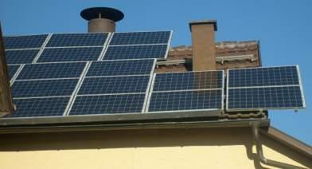
Und so sehen Solaranlagen / Solarmodule aus, wenn sie in die Jahre oder die Wachstumsperiode kommen - Solarpark auf Fehmarn 1989-2009 -
Ei, wie werden sich all die dämlichen Kommunen freuen, wenn nach 20 Jahre Dachpacht ihr defekte Solarmüll auf Steuerkosten
entsorgt werden darf - dank gieriger, bestochener oder gar dummgeschlagener Bürgermeister und deren Gemeinderäte/Stadträte
heute!
(Bildquelle: klimakatastrophe.wordpress.com/2009/05/18/solar-klarwerk-auf-fehmarn-%E2%80%93-zustand-derSolarmodule-nach-20-jahren/):
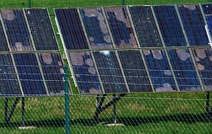
Und so das Solarfeld, oder besser die Solarwüste in der mit dem European-Energy-Award ausgezeichneten
"Energiesparstadt" Markranstädt, die ihr
schon im Stasi-Sozialismus bei allerlei Ernteschlachten und sozialistenmäßgem Kampagnenmitläufertum erwiesenes
Dummgedreiste in neu bemerkeltem Gewand aus dem Leichenkeller wiederbeleben konnten. Doch wärend früher das Verpfeifen und
Anschwärzen von Mann, Frau, Kind, Nachbar, Parteigenosse und Arbeitskollege nach DDR-Standard entsprechenden Durchschnitt und das
Übertreffen einiger Planziele genügte, ist heute die ultimative Verarsche und Großmannssucht ausgebrochen - aus der städtischen
Webseite:
Die Stadt Markranstädt hat sich das Ziel gesetzt, ausgehend vom Jahr 2010, ihren CO 2 Ausstoß um 25 % bis zum Jahr 2025 zu
reduzieren. Außerdem soll der Energieverbrauch im gleichen Zeitraum gleichfalls um 25 % reduziert werden. ... Unter anderem wurde ein
Klimaschutzkonzept erarbeitet, die Energieverbräuche der kommunalen Gebäude werden seit 2009 in einem neu aufgebauten
Verbrauchsdatenmanagement intensiv hinsichtlich ihrer Energieeffzienz bewertet, Hausmeister wurden geschult, Spritspartrainings
durchgefährt und eine neue Energie-Beratungsstelle der Verbraucherzentrale eingerichtet." - Ja, der intellektuelle
Aderlass nach der Wende hat die Ossis und offenbar besonders Markranstädt schon sehr heftig und schmerzhaft am stachanowgeschädigtem
Kopf getroffen. Und die Arbeitslosen scheinen dort besonders dumpfbackig herumzulungern, sonst hätte es doch schon ein
bürgermeistergeführtes Hennecke-Kommando oder eine von den örtlichen Ökoparasiten freiwillig zusammengezwungene Al-Gore-Brigade
geschafft, den solargeschützten Wildwuchs hier etwas zu entkrauten.
Oder ist man als gelernter Ossi so klug, den Vorteil dummer Aktivistenstreiche
wie immer frech zu privatisieren und den Nachteil der Gemeinschaft aufzubürden - Prinzip der ganzen Klimaschützerei unter
planwirtschaftlicher Ägide - und weiß Bescheid, daß es nun wirklich nicht auf den Solarstrom ankommt, wenn es um die
Versorgungssicherheit hierzulande geht? Wobei es dann sogar ein Zeichen unfaßbar humanistischer Volkssolidarität sein kann,
zwar den Wirtschaftsimpuls PV-Wüste mitzunehmen, auf Solarstrommaximierung, Netzbelastung und Ökostromabzocke weitestgehend
zu verzichten? Wer weiß das schon beim Ossi, dem unbekannten Wesen? ...
Im neokommunistisch erblühten Solarfeld im sachsen-anhaltinischen Allstädt, ertragsreich gem. § 23 EEG errichtet auf dem
Konversionsgelände des einstigen sowjetrussischen Truppenübungsplatz, hat man dafür ein wegweisendes Pilotprojekt entwickelt und
testet ein einsam ausgesetztes bretonisches Zwergschaft als Gebüschentkrauter und Mähmaschine, das (nach dem IBC-Solar-Projektleiter
Oliver Partheymüller am 11. Juli 2012 auf einer Fachtagung im oberfränkischen Himmelkron) - welch gnadenreiches Wunder der Schöpfung!
- nicht nur dank Zwergwenwuchs exakt 10 Zentimeter unter den aufgeständerten Solarmodulen durchpaßt, ohne sich das Schafsköplein
anzuhauen, sondern auch das Anknabbern der unter den Panels frei und ungeschützt angebrachten Elektrokabel bisher verschmäht hat.
Wenn alles klappt, das verspricht man den in Himmelskron versammelten fränkischen Schafsköpfen, sollen künftig "zwei Fliegen mit
einer Klappe geschlagen werden: Neben der Beweidung ist auch eine Lammzucht auf dem Solarparkgelände [Fesselsdorf] angedacht, die
Lammfleisch liefern soll." und - Ökoschilda hat noch mehr Pfeile im Köcher: "Im Jura-Solarpark wird nicht nur Strom für 7800
Haushalte erzeugt, sondern auch leckerer Brotaufstrich [namens "Solarhonig"]." Und: "Solarschnaps" - Ertrag aus einer als
"ökologische Ausgleichsmaßnahme" angelegten "Streuobstwiese". (Neue Presse Coburg am 17. Juli 2012, Schauplatz Region,
S. 3, Titel: "Solarpark zum Anbeißen").
Ja, mit Speck fängt man Mäuse und mit Schaf, Honig und Schnaps die gierbeduselten Ökodeppen, denen die ökoindustrielle Verwüstung
des fränkischen Juras in den Geldbeutel fließt und durch den Magen geht und in den Kopf steigt, während sie allen ehrbaren Menschen
und wahren Naturfreunden die Taschen auszehrt, bitter auf den Magen schlägt und arge Kopfschmerzen bereitet.
Und wie dumm und gierverzehrt muß man im Klimaschutz-Schilda eigentlich sein, um nicht zu merken, daß dank Fesselsdorf
solarversorgten 7800 Haushalte nächtens im Dunklen frieren müßten, wenn es keinen Atom- und "Fossil"-Strom aus der Dose mehr gäbe?
Ach ja, die Solarbienen liefern ja auch Solarkerzenwachs und aus der Schafswolle dreht man dann den Solardocht. Paßt scho! Und wenn
net, wird's eben passend gemacht. Wofür ist man denn dem altehrwürdigen geißbockbefußten Ohrenbläser aufgesessen?
(Bildquelle:Prof. Dr. Knut Löschke, 25.6.11):
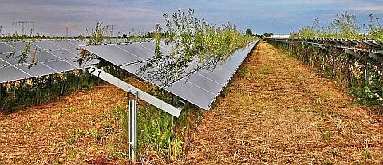
Und bitte verpassen Sie nicht den Link auf dieses weitere ossimäßige Klimaschutz-Grauen:
Passivhaus-Klima macht
Schulkinder sterbenskrank - Dicke Luft im SeeCampus Niederlausitz, die erste vollständige Passivhausschule Deutschlands in
Schwarzheide: An Sommertagen Jalousie runter & Fenster zu, sonst: Ständige Kopfschmerzen!
Aus dem Solarrundmail14.4.03, in dem eine Anhebung der bisherigen Zwangseinspeisungsgebühr von
ca. 50 auf 80 Cent gefordert werden - obwohl bekannt ist, daß alleine die bis 2010 installierte Solarkacke der sich auf Kosten der
Allgemeinheit gewissenlos bereichernden Klimaschutzparasiten dem wehrlosen Stromkunden mittels Zwangssubvention über
100 Milliarden Euro aus dem fetten Kreuz leiert - dank Ökoschmarotzerei rund um den Ökoapostel Scheer (+ 2010) und Konsorten:
"Betrachten wir doch einmal die bisherige Entwicklung ungeschminkt vom Standpunkt eines skeptischen Beobachters
aus:
Die PV ist zwar billiger geworden, gehört aber auch nach 13 Jahren staatlicher Förderung zu den teuersten
Techniken der Stromerzeugung aus Erneuerbaren Energien überhaupt.
Solarstrom ist zehnmal so teuer wie Windstrom.
Die PV ist seit ihrer Förderung von Jahr zu Jahr gewachsen, aber die PV deckt zur Zeit noch nicht einmal 0,1% der
deutschen Stromversorgung.
Bei einer Fortsetzung der jetzigen jährlichen Zubauraten wird die PV in 50 Jahren nur etwa 2% der deutschen
Stromversorgung ausmachen."
Solar - na klar?
Im elektro profi, bauverlag, Gütersloh, Ausgabe 04/2009 kann man auf den Seiten 34-35 unter "Goldesel für den
Nebenerwerb. 70.000 EUR/Jahr mit Solarenergie" überraschend genau nachlesen, zu welch abscheulichen Absonderlichkeiten
die ungeheuerliche Subventionspolitik der mit den parasitengleichen Ökolobbyisten paktierenden Bundesregierungen
führt, die dann dem ausgepowerten Ossiland in weiser Voraussicht eine ziemliche Masse Solarfabrikanten reingefördert
hat, um deren Zeckentum gegen Auslöschung durch das "Arbeitsplätze-für-arme-Ossis-Argument" auf immer
und ewig zu befestigen - Auszüge:
Solarenergie ... bietet ... lukrativen Nebenverdienst. Nachdem der Reitstall ... teurer als geplant geworden war,
entschied sich der Landwirt ... für die großflächige Installation von Solarmodulen. Er rechnet hierbei
mit einem jährlichen Gewinn von bis zu 70.000 EUR. Süddächer mit einer Neigung von 30° wären ...
optimal für eine Solarstromanlage. Bei dem Reitstall ... zeigen jedoch mehr als die Hälfte der Solarmodule
nach Norden, Osten oder Westen - bei Dachneigungen von 12 beziehungsweise 15°. Trotz dieser ungünstigen Ausgangsbedingungen
... Ertrag von rund 940 kWh pro kW. ... Solarmodule aus Cadmium-Tellurid ... (deren schwermetalldotierte
Dünnschichtzellen gegenüber Standardmodulen aus kristallinem Silizium 10 % mehr Ertrag bringen). (Der
Besitzer) nennt seine (Solarstromanlage) liebevoll "Goldesel". ... Täglich geht (der Solarbetreiber) in den
Wechselrichterraum und liest die Leistung und die CO2-Einsparung am Display ... ab. ... Künftig will er sich auch
mit anderen Landwirten über die Nutzung der Sonnenenergie austauschen. Viele Reitställe in der Gegend haben
Solaranlagen auf dem Dach. ..."
Ja, dieses Märchen vom Tischlein-deck-dich wurde gewißlich wahr bei den ges. gesch. Ökoparasiten. Da
wäre einem ja jede Brucellose, Hühnerpest und sogar der Bandwurmbefall lieber als diese grassierende
Klimaschutz-Tollwut-Seuche, gegen die leider kein Tierarzt helfen kann. Wie die Führungsriege und die Mitläufer im
angeblichen Bund Naturschutz auf die Natur einwirken, wird nun auch den Allerdümmsten unter uns mehr und mehr klar:
Unter dem
Vorwand des Naturschutzes werden geschützte und ungeschützte Naturbereiche mit Industrieanlagen für die "Gewinnung" von
Solarenergie, Windkraft und Biogas zugepflastert, ganze Landstriche mit Energiemais und anderen "Energiepflanzen" monokulturisiert. Und die
aus sozialer, naturschützerischer und energietechnischer Sicht unfaßbar vorteilhafte Atomenergie nach ebsten Kräften
dämonisiert und bekämpft. Wäre ja noch schöner, wenn billige Energie in Hülle und Fülle jedem und überall
zur Verfügung stünde. Das lassen weder der persönliche Neidfaktor noch die persönliche Öko-Profitgier zu.
Alles im Namen eines perversen Umweltschutzes / Naturschutzes, dessen Propagandisten und Dummschwätzer nicht müde werden, ihre
edlen Anschauungen und die damit verbundene brutale Naturzerstörung und terroristische Zwangswirtschaft wort- und bildreich zu
verteidigen. Und willige Helfershelfer nicht nur bei allen Volksverräter-Parteien und den abscheulich entchristlichten und jedem
Gedanken der wahren Nächstenliebe abschwörenden Kirchen, sondern auch im
gemeinen Volk bekommen, denen allen auch der abschaumigste Egoismus millionenfach mehr zählt, als jede noch so kleine
Gewissensregung. Menschenverachtende Reibacher vom Feinsten eben. Auf ihre gesellschaftszerstörende und herzzerreißende Gier
angesprochen, deren sie sich freilich bewußt sind, kommen die erbärmlichsten Ausreden, gegen die die Mitläuferrhetorik
auch der antisemitischsten Nazi-Parteigenossen geradezu Gold war. Probieren Sie's aus! Und so fragen wir uns, ob der gute alte Nietzsche
mit seiner Entlarvung in "Ecce homo" nicht
doch nur allzu recht hatte?:
"Aber hier soll mich nichts hindern, grob zu werden und den Deutschen ein paar harte Wahrheiten zu sagen: wer tut es sonst? – Ich rede
von ihrer Unzucht in historicis. ... Alle großen Kultur-Verbrechen von vier Jahrhunderten haben sie auf dem Gewissen!... Und immer
aus dem gleichen Grunde, aus ihrer innerlichsten Feigheit vor der Realität, die auch die Feigheit vor der Wahrheit ist, aus ihrer
bei ihnen Instinkt gewordenen Unwahrhaftigkeit, aus »Idealismus«... Den Deutschen geht jeder Begriff davon ab, wie gemein
sie sind, aber das ist der Superlativ der Gemeinheit - sie schämen sich nicht einmal, bloß Deutsche zu sein."
Und ob der große Otto Flake die maßlos ökovergottend-entartete evangelische Kirche mit ihren ebenfalls dem
Ökoradikalismus der Erdvergottung bzw. Gaiareligion verfallenen evangelisierten Katholenfreunden im Blick hatte, als er dem ach so
arbeitsethisch-selbstverliebten Protestantismus im Nachwort zur zweiten Auflage "Nietzsche. Rückblick auf eine Philosophie",
Baden-Baden 1947, das Pseudochristentum vom biedermännischen Antlitz herabriß:
"Dem Protestantismus ist eigentümlich die Verweisung des Einzelnen auf sich selbst, also die Emanzipation. Er und die Bibel sind
allein; Dogma, Tradition, Hierarchie und der Schutz vor dem Maßlosen durch konkrete, persönliche Vorstellungen von
Märtyrern, Heiligen, Bekennern, Asketen fallen fort. Die Auslegung steht frei, dem Subjektivismus sind keine Grenzen gezogen, jeder
ist sein eigener Kirchenvater und Papst. ...
Hier zeigt sich, welchen Wert eine sichtbare Kirche oder besser eine dogmatische Heilsbotschaft hat, als objektivistische Gegenkraft der
subjektivistischen Triebe, die unweigerlich im Radikalismus enden. ... An Goethe ist erstaunlich, daß er, der Protestant, so
unbeirrbar zum Maßbegriff stand, unter den zu labilen Deutschen ein besonderer Fall; ihn wenigstens bewahrte die Humanität vor
dem Absturz. Die Masse der Nation aber, zum mindesten der norddeutsche Teil, erschöpfte den nur bildungsmäßig ihr
übermittelten Humanismus und ließ auf den leeren Sitzen des Vakuums sich breit machen die Ersatzgötter der Macht, des
Übermenschen, des aufgesteilten Heroismus oder wie sonst die Ausweichbegriffe der Vitalitäts- und Existenzphilosophie
heißen mögen: sie leiden alle an spiritualistischer Anämie. ...
Diese Unfähigkeit des ... Deutschen, von den Folgen des Subjektivismus, nämlich die Entindividualisierung
zugunsten der Kasernenideen, zurückzufinden zum Nüchternen, Gemäßigten, Humanitären, belegt die deutsche
Tragödie, die den, der seinem Land wohlwill, mit den schwersten Besorgnissen erfüllt. ...
Wenn es etwas Göttliches gibt, dann ist es die Vernunft, die befähigt ist, bleibende, objektivistische, der Allgemeinheit
dienende Werte auszukristallisieren. ... Wenn Europa untergeht, und man kann es durchaus für möglich halten, dann an dem
Umstand, daß es dem Radikalismus nicht zu begegnen verstand. ...
Wenn einer sich die Gottheit vorzustellen sucht und sie doch nur deistisch als eine Art Begriff, ein unbestimmtes
Fernziel empfindet, dann sieht er nicht, er ist im Zustand des Erzwingenwollens ...
Sehen beruhigt, nur Sichtbares ist gewiß und vermittelt Gewißheit. Die Kirchenspaltung hat einen Schwund des Konkretsehens
und eine ungeheure Zunahme des abstrakten Verhaltens zur Folge gehabt. Man kann fragen, wie viele unter den liberalistischen Theologen
nicht nur deistische Vorstellungen von einem ungefähren Weltlenker haben, sondern dogmatisch an Dinge glauben, die alle der Ratio
nicht standhalten. Die ganze Nation leidet an diesem Verlust des konkreten Denkens, der durch vier Jahrhunderte wuchs und wuchs. Das
Ergebnis ist die Theoretikerfigur des heutigen Deutschen, der nicht einmal eine überall sonst anerkannte Forderung mit bestimmtem
Inhalt zu füllen versteht: das Bild des freien, seine Menschenrechte verlangenden, selbständigen Staatsbürgers. Für
den Deutschen sind das Worte und Phrasen, denen er mit Ironie begegnet - mit der Ironie des Nichtwissenden."
Kann man das deutsche Klimaschutzsimulantentum mit seinem aufgesetzten Weltrettungsheroismus besser ableiten, die heute nahezu vollendete
deutsche Ökokaserne voller Klimaschutstaffeln und ökologische Zwangsmaßnahmen, Energieverbrauchsverboten, Fahrverboten,
Dämmgeboten, ökomediale Speichellecker und mißgünstige Ökopetzer mit geradezu ungeheuerlichen
Ökobußgeldern? Soll schon wieder mal am deutschen Klimaschutzwesen die ganze Welt genesen?
Und ist es nicht wieder mal das pervertierte Berufsbeamtentum in den Schulen und Verwaltungen und seine daraus und aus den Schmieden
der heuchlerischen Rechtsverdreherei hervorgetretene Politikerkaste mit ihrer menschenverachtenden Anmaßung, alles Verhalten des
Pöbels auf der Straße, im Bürgermeisteramt und sonstigen Polstersesseln und auch der selbständigen Wirtschaft mit
Ökovorschriften einzuzwängen, gleichzeitig scheinheilig-korrupt bis auf die Knochen und sich selbst jede Ausnahme von den
eigenen, für andere so fein ersonnenen und ersponnenen Kastrationsgeboten gönnend? Im sodomitischen Aberglauben an Goldesel,
ohne jedwedes Verständnis für die früher so klare Message vom Knüppel aus dem Sack. Und selbstverständlich in
übergroßer Mehrheit DIE GRÜNEN wählen oder mit ihnen eingestandene oder heimliche Pakte zur perfektionierten
Unterdrückung der Bevölkerung schließen? Oder eben das grüne Quälprogramm gleich in die
eigenen Öko-Block-Parteistatuten übenehmen, um dem menschenfreundlich-sozialen und wohlstandsfördernden Industriestaat,
dessen Blut diese Parasiten und Zecken gleichwohl saugen, die Luft zum Atmen zu nehmen - siehe CDUCSUSPDFDPDIELINKE.
Die Rechnung bzw. die Zwangsgebühren für den Ökoschwindel der gegen das Wohl des Volkes und der freien Menschheit
verschworenen Klimaschutzscheinheiligkeiten zahlen die wehrlosen Verbraucher und vor allem deren ärmere Schichten (offenbar
Hartz-IV-Abschaum in Augen der höchst unsozialen Schmarotzereigesetze erlassenden Gesetzgeber). Wann wird wohl das Märchen
mit dem Knüppel-aus-dem-Sack vervollständigt - und wer bekommt dann den Knüppel zu spüren - die Ökoabzocker,
die alle abwehrgeschwächten, da entgotteten und nur dem schönen Herrn dieser Welt huldigenden Volksmaterialisten mit der
Klimaschutz-Borreliose infizierten, oder wie bisher immer die Wehrlosen unserer durchkorrumpierten feinen Gesellschaft?
Und wird es dann noch genug Geld geben, um den bauernschlauen Öko-Landwirtsbestien sahnebuttrige
Solaranlagen-Stillegungsprämien auf dem brillantenbesetzten Silbertablett der Landwirtschafts-Subventionen zu präsentieren, um
die sozialen Verwerfungen der Ökodiktatur auf die arbeitslosen Stromverbraucher polittypisch zu mäßigen? Fragen über
Fragen, die sich sonst ja niemand zu stellen traut ...
Die WELT 26.06.2011: Der
grosse Schwindel mit der Solarenergie - Fruchtloses, aber dennoch ziemlich heißes Bemühen eines deutschen
Qualitätsjournalisten um die Wahrheit hinter der Solarheuchelei
Ein netter Beitrag für diese Seite, mit ironischem Seitenblick auf die abergläubischen Sonnenanbeter der Kirche und sonstige
Perversionen (Schrecklinks: Photovoltaik-Demo auf Thüringer Kirche - mit
PV-Imitat auf Norddach - teuflisch gut, ein söddenes Blendwerk! +
Photovoltaikanlage der Goldesel-Sodomiten auf ihrer Goldenes-Kalb-Kirche in Zernin
- Moische hilf!)
Dr. Dietmar Ufer
Kosten der Stromerzeugung aus Photovoltaik-Anlagen
Die Stromerzeugungskosten in konventionellen Kraftwerken hängen wesentlich von den jeweiligen Technologien und
von den Brennstoffkosten ab. Damit sind sie mehr oder weniger eindeutig zu bestimmen:
- Kernkraftwerke: 2 Ct/kWh
- Braunkohlenkraftwerke: 2 Ct/kWh
- Erdgaskraftwerke: 3 Ct/kWh
- Kraftwerke mit deutscher Steinkohle: 4,5 Ct/kWh
Im Gegensatz dazu sind die Erzeugungskosten bei Photovoltaik-Anlagen frei wählbar! Entsprechend der grenzenlosen Ungebundenheit,
die sie versprechen, hat jeder die Freiheit, sich die ihm genehmen Kosten auszusuchen:
1. 0,00 Ct/kWh (Franz Alt: "Die Sonne schickt keine Rechnung" (Die Welt, 14.08.2002)
2. "Nur Kosten für die Technik" (Hermann Scheer, Vortrag am 17. Juni 2003 in Leipzig)
3. 0,18 Ct/kWh oder jährlich eine Schachtel Zigaretten pro Haushalt - für alle erneuerbaren Energien (Jürgen
Trittin, Frankfurter Allgemeine, 13.11.2002)
4. 50 Ct/kWh (Einspeisevergütung lt. Erneuerbare-Energien-Gesetz)
5. 177 Ct/kWh (Realisierte Anlage auf dem Dach der Nikolaikirche in Leipzig bei 15 Jahren Amortisationszeit und einem Zinssatz
von 6 Prozent/Jahr)
6. Bis 200 Ct/kWh(Unter Einbeziehung der Kosten für Wartung, Instandhaltung und Sicherung der Reservehaltung)
7. Noch viel mehr! (Unter der Annahme, dass die energieintensive Herstellung der Solarzellen ausschließlich mit Strom aus
Photovoltaik-Anlagen erfolgen würde - und nicht mit Strom aus profanen Kern- oder Kohlekraftwerken)
Bürger, nun habt ihr die Freiheit zu wählen!
Leipzig, 30.07.2003
Ergänzung 24.6.04:
Photovoltaik-Anlage Nikolaikirche Leipzig
Auf dem Dach der Nikolaikirche im Zentrum von Leipzig wurde im Juni 2000 eine Photovoltaikanlage mit einer Nennleistung von 5 kW in
Betrieb genommen. Gefördet wurde die Anlage u. a. von der Deutschen Bundesstiftung Umwelt, der Sparkasse Leipzig und dem
Regierungspräsidium Leipzig.
Auf einer digitalen Anzeigetafel lässt sich u. a. die augenblickliche Leistungsaufnahme und die Elektroenergieerzeugung seit der
Inbetriebnahme im Juni 2000 ablesen.
Erzeugung - bis 23. Juni 2003: 10.514 kWh - bis 22. Juni 2004: 14.254 kWh
Jahresbenutzungsdauern:
- Kumulativ bis Juni 2003: 700 h/a (8,0 % des Jahres) - Juni 2003 bis Juni 2004: 748 h/a (8,5 % des Jahres)
- Kumulativ bis Juni 2004: 713 h/a (8,1 % des Jahres)
(Der über dem Durchschnitt liegende Ertrag 2003/2004 ist auf den "Jahrhundert"-Sommer zurückzuführen.)
Investitionskosten: 120.000 DM, d. h. 24.000 DM/kW. (Angaben des Vorsitzenden des Kirchenvorstandes von St. Nikolai, Superintendent Vollbach)
Kapitaldienst: 2,52 DM/kWh bzw. 1,26 EUR/kWh (angenommene Amortisationszeit von 20 Jahren und Zinssatz von 4 %/a)
Nicht einbezogen sind Wartungs- und Instandhaltungskosten sowie die Kosten für die Absicherung der Regelleistung (Reserveleistung).
Aus einer Forsa-Umfrage vom 3.11.03 im Auftrag des Solarfördervereins:
"Wo sollen Solarzellen Ihrer Meinung nach in Deutschland angebracht werden? Nennen Sie bitte ALLE Möglichkeiten, denen Sie
zustimmen können!
Ergebnis: PV zu
- 87 % auf Dächern und an Fassaden von Gebäuden
- 70 % an Lärmschutzwänden (z.B. an Autobahnen)
- 34 % auf freien Landflächen
- 2 % überhaupt nicht"
Und was machen die gierigen Ökoheuchler, nicht nur im gottvergessenen Leipzig? Sie ködern sich nach unseren doofen
Volksvertretern für ihre "Bürgersolardächer" (gemeinschaftsschädigende Subventionsparasiten sollte man diese
geldgeilen Bürger besser nennen) nun auch unsere tierquälerischen Massentierhalter für Biogas aus Fäkalien (eine
Erfindung der Nazis, angewandt auch in Auschwitz, hieß damals "Klär- und Faulgasgewinnungsanlage" und entgaste die abartigen
Durchfallmengen der armen fleckfieberkranken Häftlinge) und andere Schlau"bauern" mit brachen Naturflächen. Mit diesen Typen kleistern sie
unsere Landschaft nach den Windrotoren mit PV-Großanlagen zu. Damit wird der Bürger endgültig zur Stromsau des Ökonazis
gemacht und die Natur geht weiter hobbes. Von den Ortsbild-, Dach- und Wandverschandelungen gar nicht zu reden. Und die
Güllegasanlagen produzieren fleißig die tatsächlichen (?) Klimakillergase Ammoniak und Methan. Natur-, Denkmal- und
Klimaschutz heute.
Die Bürger-Solarkraftwerke benutzen dabei die Kommunaldächer in besonders raffinierter Weise:
- Sie beanspruchen öffentliche Flächen für ihre private Abzocke - kein Metzgermeister dürfte ja in der umsonst
genutzten Rathaushalle seine Würste verkaufen.
- Sie übersehen geflissentlich und ehrlos das Unfall- und Brandrisiko, das dabei entsteht.
- Sie übertragen das Risiko am Bauwerk betr. Beschädigungen bei Installation und während der Nutzung sowie die
Verkehrssicherungspflicht während Wartung und Reparatur der Gemeinde.
- Der Abbau, der Rückbau des ursprünglichen Zustands und die Entsorgung nach Ablauf der Lebensdauer wird der Gemeinde
aufgebürdet. Dabei ist der BINE-Projekt-Info Nr. 6/98 über das meist verschwiegene Problem der Gefährlichkeit, im Brandfall
mit Freisetzung der extrem giftigen Giftgase auch Lebensgefahr für die umliegende Bevölkerung! der PV-Anlagen mittels
in Solarzellen dotierten Schwermetallen (Bor, Al, Ga,
In, P, As, Sb) und ihrer Halbleiterschicht (Cadmiumsulfid, Cadmiumtellurid CdTe, Selen, Tellur, Cu) zu entnehmen:
"Betrieb: [...] Bei möglichen Störfällen, d. h. Bränden und Glasbruch kann es zu einer
Freisetzung von [toxischem] Cd, Te und Se in die Luft bzw. den den Boden kommen. [...]
Entsorgung: Aufgrund der experimentellen Befunde ist eine Deponierung von CdTe-Modulen derzeit nicht möglich. eine Entsorgung von
CdTe und CIS-Modulen über die Müllverbrennung ist, da Dünnschichtmodule kaum brennbare Materialien enthalten, nicht mit einer Reduzierung der
Abfallmenge verbunden. [...]
Auch die sonstigen Details der Herstelllung von Solarmodulen sind oft wenig apetittlich: In der herkömmlichen Produktion von
Silizium_Dünnschicht-Modulen liefern Stickstofftrifluorid oder auch Schwefelhexafluorid das sogenannte aktivierte Fluor. Damit
werden die Ablagerungen des Siliziums in den Abscheidekammern für die hauchdünnen Solarschichten gelöst und die Kammern
gereinigt. Diese beiden Fluoride haben nun ein mehr als zehntausendfach höheres Treibhauspotenzial als CO2 - wenn man nun schon an
den Treibhauseffekt glauben will. Peinlich, peinlich. Und nur ganz wenige Hersteller haben das Verfahren auf Fluorwasserstoff umgestellt,
der dann wieder seine eigene Problematik entfaltet, aber immerhinque...
Recyclingverfahren und Ergebnisse: PV-Module enthalten eine Vielzahl verschiedener Materialien und Beschichtungen, so daß an ein
Recyclingverfahren sehr hohe [=kostenträchtige] Ansprüche gestellt werden müssen."
- Das Insolvenzrisiko der Betreiber ist meist nicht geregelt.
- Wo sind die eigentlich nur mit Bankbürgschaft abzusichernden Risiken der Gemeinde verblieben?
Bei all diesen Problemen müßte die Gemeinde vertragliche, bürgschaftsgesicherte Regelungen anstreben, um nicht nur die
Nachteile der Solarabzocker aufgebürdet zu bekommen. Und wie sieht es mit einer Abgabe für die freche Nutzung des kommunalen eigentums
für private Gewinnerzielung aus? Doch, wer baut dann das Bürger-Solardach?
Wobei der gemeinste Zug wohl darin liegt, daß mit dem schwankenden Ökostrom die Strommonopolisten in ihrem Versorgungsgebiet den
Wettbewerb (Temelin, EDF) draußen halten: Der Regelenergiebedarf für die Schwankungsbereiche wird damit maximiert, er kann nur in der
Versorgungszone wirtschaftlich eingespeist werden. Die Auslandskonkurrenz kann damit nicht mithalten. Deswegen ist Öko, Windradbau und Solaranlage Sache
der hiesigen Atom-Monopolisten, nicht der Naturschützer! Ätsch.
Und obacht!
"Jeden Monat brennen etwa zehn Windräder",
nicht nur die PV entzündet sich als tickende Zeitbombe selbst!
Die ganze Öko-Dürftigkeit der Kirche und Denkmalpflege liefert dann "Solar auf Denkmälern" (in: bauen mit holz 9/2002):
"... Bewahrung der Schöpfung ist unaufgebbarer Bestandteil christlichen Glaubenszeugnisses. Für Solaranlangen auf den
Gebäuden der Kirchengemeinden geht es daher nicht um "ob überhaupt", sondern lediglich um die Entscheidung hinsichtlich "wo und wie".
... Dr.-Ing. habil Böhme, Oberkirchenrat der Ev.-Luth. Landeskirche Sachsen
... Die Kirche wird mit modernster Technik (Solarmodule) bebaut, um regenerative Energie zu erzeugen, die die Schöpfung bewahrt.
Sie ist zugleich ein Symbol für christliches Handeln, das "himmlische Energie" in "Kraft für den Alltag" umwandelt. Wir sehen
die Solaranlage auch als aktiven Denkmalschutz. ... Trotz des Verbots des Denkmalamts wurde auf dem Kirchendach zunächst eine eine 1kWp
Solaranlage gebaut - als prophetische Vorwegnahme der Genehmigung durch das Denkmalamt. ... durch Presse, durch kirchliche, politische und öffentliche
Fürsprecher unterstützt, teilte das Denkmalamt am selben Tag noch die bevorstehende Genehmigung mit ... Pfarrer Hasenbrink, Gemeinde
Schönau/Schwarzwald
... versuchen die Kirchen ein Zeichen zu setzen, indem sie danach streben, erneuerbare Energien zu nutzen. ... Pfarrer Johannes Osterholt, Kath.
Pfarrei St. Antonius, Dresden
... In Kenntnis der bevorstehenden energetischen Revolution vertrete ich als Architekt im Dienste der evangelischen
Kirche der Pfalz die Ansicht, dass man auch bei der Denkmalpflege von einem absoluten Verbot der Installationen von
Photovoltaikanlagen auf allen denkmalwürdigen Kirchendächern absehen sollte. ... Lothar Reif, Dipl.-Ing.
Architekt, Mitarbeiter in der Bauabteilung der evangelischen Kirche der Pfalz, stellvertretender Abteilungsleiter
... Denkmalpflege versteht sich in der Schonung von Ressourcen und in der Nachhaltigkeit als Beitrag zum
Umweltschutz. Es bestehen also keine grundsätzlichen Vorbehalte gegen alternative Energiegewinnung. ... Dr. Bernd
Vollmar, Bayerisches Landesamt für Denkmalpflege, München
... Die Nutzung solarer Energie ist ein sinnvolles, möglicherweise lebensrettendes Vorhaben, also wohl die
Zukunftsaufgabe unserer Gesellschaft. ... Dr. Ulrich Kerkhoff, Landesamt für Denkmalpflege, Rheinland-Pfalz,
Mainz"
Hätten Sie gedacht, daß die beiden letzten Denkmalamtsstellungnahmen dann im Kontra-Aber münden?
Mein Strategietip: Immer feste druff auf den Ökowahnsinn, und dem Teufel nie den kleinen Finger reichen! Ein
bißchen schwanger ist kein Gewinner-Konzept!
Eine Aktualisierung zu den Netto-Produktionskosten der Energie 2010, zuzüglich Netzkosten 6 Cent/kWh (Quelle: Prof. Dr.
Hans-Günter Appel, Schortens):
Atomstrom ca. 2,5 Cent/kWh
Strom aus Kohlekraftwerken ca. 3,5 Cent/kWh
Windstrom an Land nach dem EEG 9 Cent/kWh
Off-Shore Windstrom 20 Cent/kWh (davon 15 Cent Einspeisevergütung, 5 Cent Transport)
Solarstrom deutlich über 30 Cent/kWh
Haushaltsstrom ca. 23 Cent/kWh
Und was macht "unsere" Bundesregierung? Sie unternimmt alles, um den Strom zu verteuern, garniert mit Lügen rund um die angebliche
Klimaschutzwirkung ihrer an asozialem Effekt wohl kaum zu überbietenden Stromverteuerungsmaßnahmen. Und warum? Weil es ham gar
gerne die Herren der Konzerne! Allet chlor? Soll so vielleicht das Wohl des deutschen Volkes vermehrt werden? Da müssen wir aber
sehr christlich denken. Und zwar an den Reichen Jüngling, dessen erlösungsbedürftige Brüder und Schwestern wir sind.
Als der gute Mann unseren Herren Jesus Christus traf, fragte er ihn freimütig (nach Markus 10): "Guter Meister, was soll ich tun, um
das ewige Leben zu erben?" Jesus antwortete in seiner uns Älteren noch bekannten Selbstironie: "Was nennst du mich gut? Niemand ist
gut als Gott allein! Du kennst die Gebote: »Du sollst nicht ehebrechen! Du sollst nicht töten! Du sollst nicht stehlen! Du
sollst nicht falsches Zeugnis reden! Du sollst nicht rauben! Du sollst deinen Vater und deine Mutter ehren!«" Ja, da hätte
unsereiner schon Probleme mit, denn wir beide wissen, wie oft wir gegen diese recht simplen Gebote schon verstießen und
täglich neu verstoßen. Nicht so aber der gute reiche Jüngling: "Meister, das alles habe ich gehalten von meiner Jugend an."
Da blickte ihn Jesus an und gewann ihn lieb und sprach zu ihm: "Eines fehlt dir! Geh hin, verkaufe alles, was du hast, und gib es den
Armen, so wirst du einen Schatz im Himmel haben; und komm, nimm das Kreuz auf dich und folge mir nach!" "Aha, so einfach ist das!", sagte
sich die deutsche Wahlbevölkerung und wählte sich aus den übelsten zur Wahl stehenden Parteien ihre Zwingherrlichkeiten
und wegen Gender auch genug Zwingdämlichkeiten, die uns beim Verkaufen helfen. Und uns gleich selber mit verkauften - leider nicht
zugunsten der Armen (sind ja alles mögliche, bestimmt aber keine ehrenwerten Christenleut, oder?), sondern zugunsten der Reichen.
Und schaunsemal, wer dieses Verkaufsgeschehen am meisten medial unterstützt. Die ewige Seeligkeit ist diesen allen wursscht wie
sonstwas, die irdische Bereicherung aber nicht. Ganz im Gegensatz zu uns beiden, gelle? ;-)
Ein Beispiel für die Solarabzockwerbung gefällig? Bitteschön, das erreichte mich im August 2010
(anonymisiert, Textschreckfarbe und Großformatschrift weggelassen):
"Mit xxx-solar bringen wir Ihnen bares Geld! Staatlich garantiert!
KdNr.ID 44767788
Solarstromrendite in Gefahr
Die Gelddruckmaschine stottert - Eildepesche
Sehr geehrter Herr Dipl.-Ing. Fischer,
letzte Gelegenheit!
Sichern Sie sich jetzt noch, Ihre eigene Gelddruckmaschine, zu Ende September 2010 wird die Einspeisevergütung weiter abgesenkt!
Wir liefern Ihnen Ihre eigene Gelddruckmaschine, auf einer gemieteten Dachfläche, mit 9% - 11% Rendite, für die
nächsten 20 Jahre!
Eigenkapitalverzinsung 37,50 %.
Rückfluss aus Investment 248,40 %
Dazu noch - rund 40% Sofort-Abschreibung!
Bereits ab 100.000 €, bekommen Sie eine eigene Gelddruckmaschine, lediglich 10 % Eigenkapital erforderlich.
Interessiert? Dann klicken Sie bitte hier:
www.xxxsolar.eu/pvdach
Wir finanzieren Solaranlagen, auf fremden Dächern, zu günstigen Zinssätzen!
Interessiert? Dann klicken Sie bitte hier:
www.....eu/finanz/index.php
Wir bauen Ihnen auf Ihr Hausdach eine Solaranlage und Sie haben damit eine eigene Gelddruckmaschine!
Und Steuern sparen Sie auch noch obendrein. mit hohen Abschreibungen!
Interessiert? Dann klicken Sie bitte hier:
www.xxxsolar.eu
Was ist Ihr Dach wert? 50.000 €, 100.000 € oder mehr???
Machen Sie Ihre Dachflächen zu barem Geld!
Wir mieten auch Ihre Hausdächer an!
Interessiert? Dann klicken Sie bitte hier:
www.xxxdach-anmietung.de
Hochinteressante Freiland-Solaranlagen in Tschechien mit derzeit noch 0,51
€/kW
Interessiert? Dann klicken Sie bitte hier:
www.xxx.eu/pvdach
Die Sache eilt!
Mit sonnigen Grüßen aus xxx
xxx Online Team"
Aus Kurzinfo Nr. 324 aus Energie, Wissenschaft und Technik 11.1.2011 der
Bürger für Technik:
"In einer Art Torschlusspanik entschloss sich Deutschland, das hinsichtlich der Sonneneinstrahlung mit Alaska zu vergleichen ist, in den
nächsten Jahren weit über 100 Milliarden in uneffiziente Photovoltaikanlagen zu versenken, Finanzmittel, die fehlen werden, wenn es
wirklich darum geht, den Ländern des Südens bei der Umstellung auf eine nachhaltige Energieversorgung zu helfen. (Fritz
Vahrenholt| 21.12.2010 Welt online) ...
Solarmodule auf dem Dach können überraschend gefährlich werden:
1. bei Feuer auf dem Dach: die Spannung in den Gleichstromleitungen ist so hoch, dass sie bei Löscharbeiten für die Feuerwehr
lebensgefährlich sein kann. So ließ die Feuerwehr im ostfriesischen Schwerinsdorf ein Wohnhaus "kontrolliert abbrennen". Die
Schwäche von Solaranlagen ist oft der fehlende Not-Aus-Knopf.
2. giftiges Cadmium, z.B. des US-Unternehmens First Solar. Cadmium-Solarzellen sind günstiger herzustellen als Siliciumsolarzellen.
Das europäische Parlament hatte eine Richtlinie beschlossen, die Schadstoffe in Elektro- und Elektronikgeräte verbietet. Die
Solarbranche ist davon ausdrücklich ausgenommen. (Die ZEIT 16.12.2010, S.32)"
Na, daß die EU-Politbonzen und das bundesdeutsche Politschmierentheater oft nur noch Marionetten der Ökowirtschaft und der
US-Interessen sind, der sie die ihnen anvertrauten Bürger zum Fraße vorwerfen, und für Interessen der Nigger und Kanaken
des Südens rein gar nichts überhaben, dürfte selbst dem dümmsten Bundesbürger (von Deutschen wollen wir hier gar
nicht mehr reden) inzwischen klar sein. Oder doch nicht? Und wenn doch nicht, wieso geht es dann dem Süden und uns nicht wesentlich
besser, hä?
So funktioniert der solare Schwindel aktuell:
Es werden im Rahmen der Neu-Installation von alten Heizungsanlagen neue Heizungsanlagen in Kombination mit
Solaranlagen angeboten und verkauft mit dem Werbetrick, eine "solare Heizungserneuerung rechnet sich", man könne
1000 Euro Energiekosten im Jahr sparen.
Der doofe Kunde glaubt, dass er insbesondere durch die Solaranlage 1000 Euro Energiekosten einsparen könnte. Wo
doch wenigstens nach seiner Kenntnis die Sonne (noch!) umsonst scheint. Zumindest am Tag. Wenn grad keine Bewölkung
vorherrscht.
Die Werbe-Aussage "rechnet sich" macht natürlich nur für die Solaranlage Sinn.
Die Wahrheit sieht aber so aus (fragen Sie ruhig nach):
920-940 Euro Energiekostenersparnis soll durch die neue Gasbrennwertanlage erwirtschaftet werden (pure Fiktion, die
alte Heizung hat max. 10% Abgasverlust, die neue min. 6%, Gewinn durch Austausch max. 4%, das sind max. 40 EUR je 1000
EUR Jahresheizkosten, damit ist kein wirtschaftlicher Kesselaustausch zu finanzieren, deswegen:
EnEV-Befreiungsantrag stellen!), da diese durch neue Technik angeblich effizienter
und wirtschaftlicher arbeitet als die alte Heizungsanlage und nur ca. 60-80 Euro würden durch die Solaranlage
für die Trinkwassererwärmung an Energiekostenersparnis erwirtschaftet - und dafür soll man 4.000-5.000
Euro für die Solaranlage bezahlen...um fiktive 60-80 Euro zu sparen. Da langt man sich an den nicht mehr
vorhandenen Kopf und möchte schon wieder mal denken (was ohne Kopf ja auch nicht mehr funktioniert und man sich eh
nicht trauen würde): "Deutschland erwache".
Anders rum: Die Solarfans behaupten, man solle bei Erneuerung der Heizungsanlage eine thermische Solaranlage mit erwerben, um 60 %
Energie zu sparen. Solar lassen sich aber bestenfalls nur 60 % der Energie für die Warmwasserbereitung (denken Sie an das
sommerliche Duschen) bereitstellen. Die Warmwasserbereitung ist aber nur ca. 20 % des Wärmebedarfs im Heizsystem. 60 % davon ist
also nur 12% des gesamten Wärmebedarfs. Pro 1.000 EUR Heizkosten im Jahr also nur 120 EUR. Damit ist eine Solaranlage nie zu
finanzieren. Punktum.
Heiße Aufklärungsfilme - Provokantes, Ironisches, Aufrüttelndes, Schmerzendes zur Energiegesetzgebung ...:
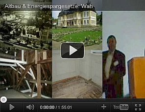
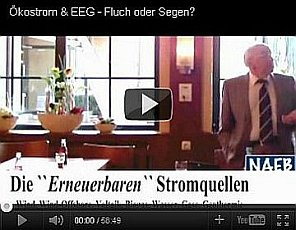

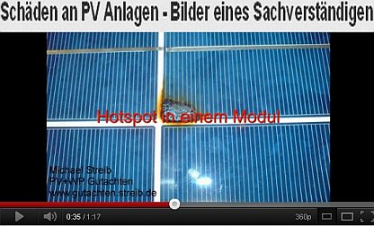
Brandgefährliches auf
unseren Dächern???? - Aus photovoltaik.com - So reagieren die anonymen PV-Solarjünger auf diese Risikoaufklärung -
überwiegend beschämend, ad hominem-Häme und Schmähkritik - oder ihrer edlen Sache des unbedingten Gewinnstrebens -
koste es wem auch immer, was es wolle - selbstgewiß? Sie entscheiden!
Wesentlich informeller dagegen das Ketzerforum: Wie geht die Feuerwehr bei einem Dachstuhlbrand vor, wenn eine Photovoltaikanlage installiert ist?
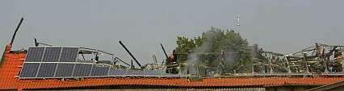
An diesem Tag brauchte der glückliche Besitzer dieser so hoch geförderten Solarernte-PV-Anlage
auf seiner Bauernscheune und seinem Rindviehstall (Kuhstall) bestimmt nicht heizen. Das Feuer - vom Solarbauern entsprechend der
örtlichen Gerüchteküche nach selbst festgestellt - entstand im Scheunenbereich unter Dach im Umfeld des Heulagers, wo
bestimmt keine Lampeninstallationskabel, jedoch die ungesicherten Gleichstrom-Zuleitungskabel der Solarmodule zum Wechselspannungsrichter
herumhingen. Lichtbogen inklusive frei Haus. Selbstverständlich hat der Solarbauer nach dem Abbrand sein ökologisch-asoziales
Weltgerette und aufdeibikommaußa-ertragsorientiertes Kassemachen auf Kosten der Allgemeinheit nicht aufgegeben. Seine Scheune wurde
wieder mit PV-Modulen zugepflastert. Die Versicherungsgemeinschaft zahlt ja.
Übrigens: Elektroschäden sind die häufigste Brandursache. Auch an Kirchen und sonstigen Baudenkmälern. Brandstifterei
durch Elektropfusch hat also Hochkonjunktur!
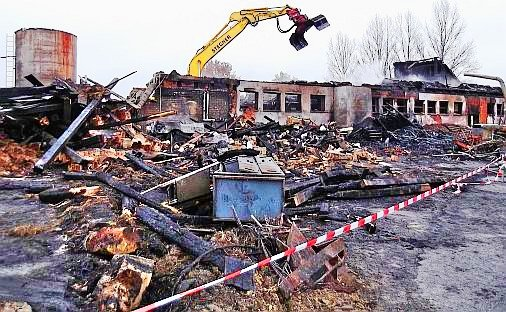
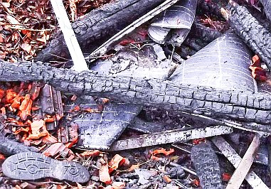
Auch dieser PV-bestückte Bauernhof wurde kurz vor dem Allerheiligentag 2011 ein Opfer des solarenergetischen Feuerteufels.
Die Solarpanels eplodierten sogar auf dem Dach, wie die Zeitung nach Zeugenaussagen der erschrockenen Feuerwehrler zu berichten
wußte. Kein Wunder, denn wenn die schwerentflammbaren Bestandteile einer PV-Anlage die Zündtemperatur erreichen, gehen sie
bekanntermaßen ab wie eine Rakete. Brandausbreitung in alle Richtungen, Abbrandgeschwindigkeit ähnlich Sprengstoff.
Sabine Weiß, die Pressesprecherin des Polizeipräsidiums Oberfranken kommentierte das Explosionsergebnis laut Pressebericht vom
3.11.2011 mit "Schlachtfeld". Vier Jahre vorher haben die örtlichen CSU-Parteibonzen noch anläßlich einer
"Energiewanderung" die ach so dolle Solarenergieernterei bestaunt. Im Original: "Wir trafen uns um 13.00 Uhr beim Anwesen ... in ..., um
die dort installierte Photovoltaik-Anlage zu inspizieren. Die durch Sonnenenergie betriebene Anlage erzeugt im Jahr ca. 60.000 KWH Strom."
Die hochgepriesene PV-Anlage hat nun nur für Doofe überraschenderweise wesentlich mehr Wärmeenergie als Elektroenergie
geliefert und liegt deswegen nun in gruselschwarzen Trümmern und Splittern und hat nicht nur über 50 Rindviecher, sondern auch
den 25jährigen Stallburschen auf dem Gewissen, dessen verkohlte Solar-Leiche in der Brandruine aufgefunden wurde und dem die
dörfliche Gerüchteküche als Erstreaktion sogar eine Brandstiftung in die verschmorten Gummistiefel schieben wollte.
Offenbar wollte der tierliebe Junge aber unter Inkaufnahme der extremen Lebensgefahr noch einige der ihm anvertrauten braven Kühe
und lieben Kälberlein retten.
Das Gewissen der verkaufstüchtigen und profitgierigen Solarbranche und das der ihnen hörigen Politpfeifen wird aber
erfahrungsgemäß damit nicht belastet. Wo nix is, kann ja auch nix werden.
Bild rechts: verkohlte Solarplatten, PV-Modulreste, Brandschutt und abgekokelte Gummistiefelsohle. Ende einer ökologischen
Weltrettungaktion auf unterstem Bauernniveau. Kripo (hinter vorgehaltener Hand): "Brandentstehung am PV-Wechselrichter" - Brandgutachter
der Versicherung: "Brandursache unbekannt." Nun zahlt mal schön und kommt nicht in die Presse wegen bösartiger
Zahlungsverweigerung!
Hier ein paar durchaus lesenswerte Forumbeiträge von Solarfuzzis mit versengten Wechselrichtern:
"Mir ist heute ein SMA 5000 TL
Wechselrichter abgebrannt / explodiert!"
Als die wohl größte Gefahr für Photovoltaikanlagen gelten - nur in ausgebufften Insiderkreisen und abgebrannten
Solarbauernhöfen bekannt! - Überspannungsschäden bzw. Kurzschlußschäden mit Lichtbogenbildung, die die zwar
schwer entflammbaren, aber freilich brennbaren Anlagenbestandteile "explosiv zünden". Die mit latentem Sprengstoff vergleichbaren
Anlagen generieren Gleichstrom, damit funktioniert der übliche Schutz gegen Überspannung eben nicht. Offenbar manchen
Elektromonteuren und abzockgeilen Solarbauern auf der Jagd nach dem letzten Ölogroschen bis zum nur den Outsidern
überraschenden Brandfall unbekanntes - aber brandgefährliches - Detail der PV-Elektrik und Kunststofftechnologie.
Überspannungen entstehen beispielsweise durch Blitzeinschläge - auch in weiter Ferne der Anlage, denn die dabei entstehenden
extrem hohen Spannungen kriechen in Blitzeseile über den Erdboden / das Erdreich in den Keller, das Stromnetz und die
Photovoltaikanlage auf Bauwerken ohne Fundamenterder - typisch bei Bauernhöfen. Auch die elektromagnetischen Felder beim Blitzschlag
und im Vorfeld des Gewitters können zerstörerische Überspannung in der Stromanlage und der Solaranlage verursachen. Und
schon ein kabelknabberfreudiger Marder
- wirklich keine Seltenheit auf dem Bauernhof - oder Abnutzung der Kabelummantelung durch die extremen Temperaturspannungen im
Dachbereich oder eben auch Montagepfusch mit schlechten Verbindern, beschädigten Schutzmantelungen, loser Verlegung und marder- sowie
abscheuerfreundlich herumschaukelnden Leitungen, die dann schnell zum Kabelbruch und Lichtbogen zur metallischen Unterkonstruktion /
Halterung führen sowie sonstige Alterungsphänomene und sogar Kontaktkorrosion der unterschiedlichen Metalle im Anlagensystem
bringen da schon schnell mal einen Kurzschluß und Kabelschmoren und auch einen Lichtbogen zustande, was dann - da ungesicherte
Kabelstrecke - zum Aufbau der erforderlichen Zündtemperatur in der brennbaren Kabelumgebung (Holz, Stroh, Heu, Plastik, ...)
führt - wie immer mehr kurzschlußbedingte Solarbauern-Brandfälle beweisen. Über 1000 Volt sind da keine Seltenheit. Von Herrn
Dipl.-Ing. Günter Gebuhr erhielt ich dankenswerterweise folgende nützliche Hinweise zur Entstehung bzw. Vermeidung der
brandauslösenden Lichtbögen:
"- Bei Solarmodulen ist es üblich, diese kurzzuschliessen, wenn kein Strom benötigt wird. (Batterie vollgeladen oder die
Netzsynchronisation geht verloren). Der Strom erhöht sich dabei um 10 bis 20%.
- An jeder Übergangsstelle (Solarzelle/Solarzelle oder Solarzelle/Verbindungskabel) liegt die ganze Systemleistung mit voller
Systemspannung (von mehr als hundert Volt) an, wenn alle Module in Reihe geschaltet sind!
- Bricht hier eine Übergangsstelle, so entsteht ein Lichtbogen, der sicherlich brandgefährlich ist, da in diesem Moment die
Systemspannung ansteigt! Dieser gefährliche Effekt kommt nur bei der Serienschaltung der Solarmodule zustande. Der Wirkungsgrad der
Anlage wird dadurch aber um einige Prozent besser!
Für meinen Eigenbedarf benütze ich keine Serienschaltung. Die Solarmodule (für 24V-Systemspannung) werden einzeln über eine
Entkoppeldiode parallel geschaltet und zusätzlich einzeln mit je einem Leitungsschutzschalter (Sicherungsautomat) abgesichert. Damit
liegt an jedem Modul maximal die eigene Leistung an und nicht wie bei der Serienschaltung die gesamte Systemleistung. Zusätzlich
ist die Abschaltung einzelner Module oder ein kompletter Modulausfall nicht von Bedeutung, lediglich die Gesamtleistung der gesamten
Anlage wird etwas niedriger. Gleichzeitig kann eine solche Anlage natürlich jederzeit einfach erweitert werden, da die
Maximalspannung in der Anlage bei ca. 45V liegt."
Rund 45 Prozent der Schadensfälle an Solaranlagen sind auf elektromagnetische Überspannung im Photovoltaiksystem
zurückzuführen (Quelle: Mannheimer Versicherung). 2010 alleine 8755 an Versicherung gemeldete Schäden an PV-Anlagen, lt.
Augsburger ALlgemeine: "21,9
Prozent der Schäden an Photovoltaikanlagen sind in Bayern durch Feuer verursacht." Das kann man selbstverständlich auch
provozieren. Wenn beispielsweise der von Jahr zu Jahr nachlassende Solarertrag der Module die Kreditraten nicht mehr decken kann und -
unbedingte Voraussetzung! - man gut feuerversichert ist. Interessant zum PV-Risiko aus Versicherungssicht ist die folgende Meldung:
"Nach einer aktuellen Statistik des GDV [Gesamtverband der Versicherer] hat sich die Schadenquote der Versicherer im PV-Geschäft
zwischen 2008 und 2011 von 38 Prozent auf 70 Prozent nahezu verdoppelt. Die Schadenquote beschreibt die Relation der im laufenden Jahr
ausgezahlten Entschädigungen zu der entrichteten Prämie." (Quelle:
"Photovoltaik:
Versicherungspolicen auf dem Prüfstand", dort heiße Info rund um das PV-Risiko und die Entwicklungen auf dem
Prämiensektor.)
Noch ein paar Schandworte zum Thema Ertrag. Auf der PV-Infoseite eines Errichters findet sich folgendes Rechenbeispiel:
Stromertrag: 10 qm Photovoltaikfläche (eine 1 kW-Anlage) auf idealem Dachstandort erzeugt ca. 1000 Kilowattstunden/Jahr
Einnahme nach EEG: ca. 470 Euro/Jahr (im Beispiel für eine Solaranlage bis maximal 30 Kilowattpeak kWp bei Installation 2008)
Kosten: 10 qm = ca. 5000 Euro inklusive aller Leistungen
Nach etwa 12 vollkommen störungsfreien Betriebsjahren wäre dann die Anlage refinanziert - eine grottenschlechte Investition, da
nach deutscher Rechtsprechung die Wirtschaftlichkeit bei einer Amortisationsfrist von über 10 Jahren nicht mehr gegeben ist. Da aber
nun alleine zur sachgerechten Reinigung einer PV-Anlage ab 10 KW, ohne die der Ertrag alljährlich weiter in den Keller rutscht, etwa
2 Euro je Quadratmeter eingerechnet werden dürfen (holen Sie doch selbst mal die Komplettpreise eines Profireinigers ein!) und
Kleinanlagen wie in unserem Rechenbeispiel pauschal mit etwa 200 Euro jährlich gereinigt werden dürften, frißt alleine
die REINIGUNG auch die entsetzlich schlechte Rest-Wirtschaftlichkeit weg. Dazu kommen dann die Wartungskosten und Reparaturen rund um
alle am Dach grundsätzlich hochbelasteten Anlagenteile. Da nimmt es kein Wunder, wenn die Errichter dem Kunden versprechen: "Die
Leistung der Platten bleibt konstant". Und die Reinigungsprofis dagegenhalten, daß schon ein Verschmutzungsgrad von 10 Prozent bei
unserer 1 kW-Anlage des obigen Rechenbeispiels mit 10 Quadratmeter Modulfläche etwa 50 Euro im Jahr weniger Ertrag bringt. Und diese
Verschmutzung ist schnell erreicht: Ruß und Staub, Blütenpollen und Saharasand, Vogelschiß und Katzenkot, der Phantasie
und der Realität sind hier wirklich keine Grenzen gesetzt - genausowenig wie der Leichtgläubigkeit der gierigen PV-Jünger
...
Eine mir zugegangene PV-Besitzer-Dokumentation zeigt, wie es allerorten unter Deutschlands Dachanlagen aussieht. Vielleicht auch bei
Ihrer? Prüfen Sie selbst, bevor Sie und Ihre Lieben durchgeschmort sind!
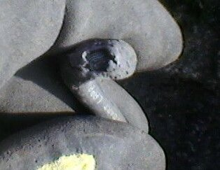
.
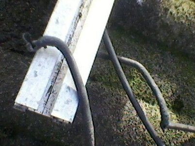
.
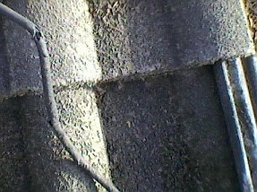
.
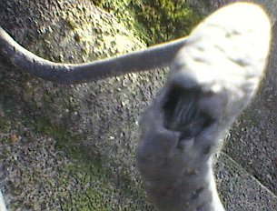
.
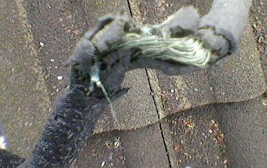
Kabelbruch, abgescheuerte Kabel-Isolierung / am Kabelknoten zerstörte Kabel-Ummantelung, aufgerissene und zerfledderte Kabel -
gerade noch rechtzeitig vor dem Brandereignis bei Dachdeckungsarbeiten zufällig vom Dachdecker entdeckt! Aus der Zuschrift des
entsetzten, gerade noch geretteten PV-Geschädigten:
"... meine nun 6 Jahre alte PV -Anlage (10,5 Kwp) mußte aufgrund mehrer Pfannenbrüche demontiert werden.
Dabei stellte die ausführende Dachdeckerfirma mehrere Kabelbrüche fest (siehe Anhang). Die Anlage wurde vom örtlichen
Elektromeister und städtischen Brandexperten nach Sichtung der Fotos sofort stillgelegt. Kann die ausführende Montagefirma
noch bzgl. eines Montagepfusches belangt werden? ... Bruchstellenfoto zeigt die ursprünglichen einfachen Dachhaken und die
nunmehr verwendeten neuen Dachhaken ... Ich war zu tiefst erschrocken als man mir die Bilder zeigte. Ich kann mir nun vorstellen, dass
deutsche Solardächer ein ungeheures Gefahrenpotenzial beherbergen. Vielleicht habe ich Glück im Unglück gehabt, denn ohne
die beschädigten Dachpfannen, die wahrscheinlich aufgrund nicht sach-und fachgerecht montierter Dachhaken gebrochen sind, wären
die Kabelbrüche nicht erkennbar gewesen. An die Folgen will ich erst gar nicht denken. ... Ich persönlich kann Niemanden mehr zu
einer PV Anlage auf seinem Dach raten."
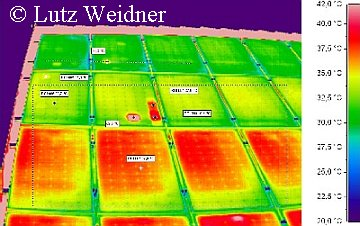
Wer prüft eigentlich das routinemäßig, wie sich die einsatztypische Belastung durch extreme Temperatur- und Feuchtewechsel auf
und unterm Dach auf die Integrität und Funktionsfähigkeit der Kabelisolation schon ausgewirkt hat, wieviele Hot spots und Schmorstellen,
wieviele Lichtbogenereignisse sich schon nachweisen oder vermuten lassen? Denn das würde ja "laufende Kosten" bedeuten. Und
Elektrosachverständige wie Erhard Wagner mit Norbert Gunzelmann, die in den Aufklärungsfilmen bei ARD und dem Bayerischen
Rundfunk (s.o.) verdeutlichten, wie schrecklich es um den Status sozusagen aller installierten PV-Anlagen steht, kommen natürlich
nicht für lau zur Nachschau und Risikoprüfung.
Die krassen hot spots - also rotglühheißen Zellen-Flächen auf der Thermografie-Aufnahme des
Zimmerermeisters und Sachverständigen Lutz Weidner aus Wichmar
zeigen auf, wie es um die defekten PV-Module in Wirklichkeit stehen kann - auch auf Ihrer Armeleuteabzock-Goldesel-Solar-Anlage:
Nicht nur, daß sie den solar erzeugten Strom in bedeutenden Teilen selbst verzehren, nein, die damit verbundene Temperaturerhöhung der
PV-Module/-Zellen steigert auch deren Brandgefahr durch Selbstentzündung ins Unermeßliche. Um hiergegen gewappnet zu sein, heißt es
also prüfen, prüfen und nochmals prüfen. Und zwar mit Thermografie im wiederkehrenden Rhythmus! Denn anders kommt man der lebens- bzw.
brandgefährlichen Hitzeentwicklung auf dem ach so coolen Solardach, das Ihnen Ihr Lieblingssolarteur so liebevoll auf die Hütte geschnallt
hat, auf Dauer nicht auf die Schliche. Und muß auf den Schutzengel vertrauen, der mangels ausreichender Kerzenspende durchaus auch
ungnädig sein Tag- und Nachtwerk vernachlässigen kann, wie es die hier aufgeführten Brandfälle auf sowohl katholischen wie auch evangelischen
oder gar heidnischen bzw. ganz und gar gottlosen Dächern mehr als eindeutig und fast täglich beweisen. Amen.
Solche Prüfkosten haßt nicht nur jeder Solarbauer, egal wie er nun zum Schutzengel steht. So macht er lieber Kohle über Kohle,
notfalls, bis er und sein Bauernhof total verkohlt sind. Die Gewinnsucht der dem auf Selbstmord ausgelegten Ökoaberglauben verfallenen
Ökojünger kennt erfahrungsgemäß ja keine Grenzen mehr, wenn der Ökoteufel in ihre durchkohlte Seele bis zum sakrisch erkälteten Herz
reingefahren, der Pakt mit dem verführerischen Fürsten dieser Welt geschlossen ist. Am Gelde hängt, zum Gelde drängt ...
Manche uninformierte Elektromeister (Handwerker sind ja meist keine erstklassigen Kopfwerker) gehen nun davon aus, daß die
üblichen Schutzeinrichtungen / Schutzvorkehrungen gegen Überspannung in den Wechselrichtern ausreichen, um
Überspannungsschäden in der PV-Anlage zu verhindern. Dem ist aber gewiß nicht so.
Nur aufwendige - und besonders bei Großflächen / Groß-PV-Anlagen sehr teure Schutzvorkehrungen bringen eine hoffentlich
ausreichende Sicherheit - wenn alles gutgeht und die hier einzusetzenden Varistoren aus Zinkoxid ihren Geist aufgeben. Nicht mit der neuesten
Absicherungs- und Blitzschutztechnik errichtete PV-Anlagen lassen dann im Normalbetrieb Leckströme fließen, die zum
Kurzschluß führen könnten, wenn das nicht durch thermische Abtrennungvorrichtungen verhindert würde, die ihrerseits
temperaturabhängig den Kontakt zum Solargenerator unterbrechen - doch dann ist auch der Überspannungsschutz futsch.
In diesem Ablauf kann es auch zu Lichtbogen-Bildung kommen, da bei den anfallenden Extremspannungen im 1000-Volt-Bereich die Luft
leitfähig wird.
Am Tagbetrieb, wenn die Solaranlage sollgemäß Strom im Gleichstrombetrieb liefert, steht der Lichtbogen
schön vor sich hin - im systematisch gegebenen Unterschied zu Wechselstromanlagen, bei der nach Umpolung der Lichtbogen
zusammenbricht / erlischt und dann wegen Spannungszusammenbruch nicht mehr entstehen kann. Und dann? Ja - im Lichtbogenfall und bei
Kurzschluß kann dann die parasitäre PV-Anlage das Abfackeln des Wirtsgebäudes - und vielleicht auch seiner Nachbarn, deren
solarbedingt erhöhte Stromkosten diesen Öko-Anschlag auf Leib, Gut und Leben sogar noch mitfinanzieren - auslösen.
Oder das Crimpen, das heißt das mechanische Zusammenpressen der Hülsen zur
Herstellung fester Verbindungen zwischen Leitern und Verbindern - früher wurde das gelötet. Dabei kommt es sehr drauf an,
daß alle Teile und Werkzeuge perfekt zusammenpassen. Sonst quält sich der Strom durch zu enge Leiterquerschnitte und
entwickelt in seiner zwängenden Qual hohe Temperaturen, die dann im Endergebnis zum Brandauslöser werden können. Dumm
gelaufen, heißt es dann seitens des Elektroheinis, der im Nachhinein angesichts des zusammengeschmolzenen Elektroschrotts schwer
bis gar nicht für seinen PV-Pfusch zu belangen ist und sich schon in Angesicht der brennnenden Bude wieder die Hände warmreibt,
da die Brandversicherung ja nicht nur das verbrannte Gebäude, sondern auch die zerschmolzene Solaranlage ersetzt. Ein Schelm, der
Böses dabei denkt. Und selbst wenn man neueste Schutztechnik einsetzt, gibt es eben auch dabei Konstellationen, die jedes
Schutzsystem ausfallen lassen. Flieg, PV-Käfer, flieg ... (Nach einem Artikel in "Photovoltaik" 08/09).
Ganz schlaue Solaranlagenbauer gehen aber auch schon Kooperationen mit
abschlußwütigen Versicherern ein und bieten die Brandversicherung gleich zusammen mit ihrer Solaranlage all inclusive an.
Warum dann so oft "Brandursache unbekannt" beim PV-bedingten Abbrand der Solarbauern herauskommt? Weil sich vielleicht sowohl Kripo wie
Feuerwehrler einig sind, dem Solarbauern keinen Streß mit dem Brandversicherer zu bescheren? Der könnte ja sonst fragen, ob
nicht die vom schlauen Solarbäuerlein oft selbst nach Gutsherrnart verlegten Kabelpfuschereien schuld am Brandfall sind, vielleicht
auch grob fahrlässiger Handwerkerpfusch, was alles nur bedingt oder eben gar nicht ins Ressort der Brandversicherung fällt und
dann die Versicherungssumme ungern oder erst nach langem Streit, den sich kaum ein abgebrannter Solarbauer leisten kann, mit dem nach
meinen Erfahrungen als Brandsanierer üblichen Brutalabschlag von der vertragsgemäß
geschuldeten Erstattungssumme auszahlt.
Und vielleicht deshalb finden wir auch in den lokalen Käsblättern und polizeilichen Ermittlungsberichten so gut wie nix
über die wahren Ursachen der Solarbauernbrände allerorten. So fangen dann alle zusammen die weiteren Bauern-Öko-Opfer.
Letztlich auf Kosten des Versicherungsbetrugs und der Allgemeinheit. Von den Risiken durch die wiederum nur in Insiderkreisen hinter
vorgehaltener Hand diskutierten ständigen Grenzwertüberschreitungen der PV-Anlagen (meist im Bereich des Wechselrichters) -
also leitungsbedingte Störungen durch für das Leitungssystem, die Anlagentechnik und Umwelt eigentlich nicht verkraftbaren bzw.
gefährlichen Stromfluss hinsichtlich Überhitzung, Anlagenbelastung, Störung von Funknetzen, elektronischen Anlagen in der
Umgebung und freilich auch Gesundheitsbelastung durch extremen Elektrosmog bzw. elektromagnetische Wellen bzw. Strahlung für alle
Menschen und Tiere in der näheren Umgebung der Solaranlage mal gar nicht zu reden. Wen das mehr interessiert, sollte mal hier
reinlesen: "PV- Wechselrichter –
Anforderungen und Konsequenzen" - Vortrag von Dr.-Ing. Christian Bendel, Institut für Solare Energieversorgungstechnik , Verein an der
Universität Gesamthochschule Kassel - Temperaturverhalten, Temperaturüberschreitung, Hot Spots und Fehlerströme,
elektromagnetische Verträglichkeit, Strahlungsrisiko und Korrosion von PV-Anlagen, Betriebssicherheit, Unfallstatistik,
Sicherheitsrisiko und Zuverlässigkeitsrisiko von PV-Wechselrichteranlagen und sonstigen PV-Bauteilen / Anlagenbestandteilen /
PV-Modulen / Anschlußkabeln, Personenrisiko und Anlagenrisiko, auch durch gefährliche Strahlungsfrequenzen im Frequenzbereich
über 30 MHz. Wie mir zugetragen wurde, sollen bei industrieinternen Untersuchungen von marktüblichen Solarmodulen/PV-Modulen
mit der Thermokamera / Wärmebildkamera 5 von 8 Module Microcracks / Mikrorisse aufweisen, die im Rißbereich Hot Spots mit
ca. 250 °C verursachen. Von dort geht also - neben defekten Verkabelungen - die Selbstentzündung von PV-Anlagen aus.
Interessant auch: "Grenzwertlücke - Wechselrichter
stört Elektrizitätszähler" - Vortrag von Jörg Kirchhof, Fraunhofer Institut für Windenergie und Energiesystemtechnik, IWES,
Bereich Anlagentechnik und Netzintegration, Kassel, Germany - Störaussendung und Störfestigkeit, Störstrom, starke
hochfrequente Störsignale auf den AC-Leitungen des Wechselrichters mit einer hohen Störstrom-Amplitude im elektromagnetischen
Frequenzbereich der Taktfrequenz des Wechselrichters aus PV-Anlagen, Defizite der Normung begünstigen die PV-typisch hohen
Störpegel innerhalb des normativ nicht geregelten Frequenzbereichs in der Frequenzlücke zwischen 3 kHz und 150 kHz,
gefährliche leitungsgebundene Störpegel. Einfach nur
erschütternd und niederschmetternd, was sich Solarabzocker alles leisten dürfen, und niemand protestiert!
Doch an das Gewissen heutztage zu appellieren, wäre doch absurd altmodisch. Und anstatt die PV-Anlagen rechtzeitig auf
brandgefährliche und krankmachende Schwachstellen routinemäßig zu untersuchen, vergnügen sich beispielsweise die
meisten Thermobildfotografen mit ihrer Wärmebildkamera beim Hereinlegen der noch ungedämmten Hausbesitzer
und machen ihnen weis, daß die ruckzuck ausgekühlten und Tauwasser einsaufenden Vollwärmeschutzfassaden mit nicht
wärmespeicherfähigem Dämmstoff weniger Heizenergie herausließen, als die speicherfähigen Massivfassaden, die
bis zum frühen Morgen die vortagsüber kostenlos eingespeicherte Solarenergie gemütlich wieder abstrahlen ...
Zum Problem der minderwertigen PV-Sparbauweise, hier zum Thema
PV-Brand durch erhitzte Steckverbinder.
Brennende Solaranlagen - Löschbremse, Kontrollierter Abbrand und Versicherungsprobleme
Daß dann die Dachbeschichtung mit Solarmodulen ein erstklassiger Löschschutz - also Schutz vor geschwindem Löschen eines darunter
ausgebrochenen Brandes durch die Feuerwehrspritze mit Löschwasserdüse - ist, daß die Kaminwirkung im freien Lüftungsquerschnitt
zwischen Solarmodul und Dachdeckung durch verstärkte Sauerstoffzufuhr die Abbrandgeschwindigkeit und die Brandausbreitung extrem
fördert, ist zwar selbstverständlich - aber ebenso wurscht wie alle anderen Risikofaktoren der PV-Anlagen. Alleine die extreme
Brennbarkeit der verwendeten Alu-Bauteile - weit unter der drohenden Lichtbogentemperatur! - läßt einem Fachmann die Haare zu Berge
stehen, wobei dafür Wasser KEIN Löschmittel ist! Man könnte also die Montage von Solarmodulen auf brandgefährdeten Bauteilen
deswegen vielleicht sogar als vorsätzliche Brandstiftung mithilfe einer auf Zufall geschalteten Zeitbombe vergleichen, oder? Und
vorsichtige Versicherer wie die HSB Engineering Insurance Ltd. versichern wegen der
typischerweise
vorliegenden Extremgefahr und allen Insidern bekannten Brandserien bei Photovoltaik auf Bauernhofdächern keine
Solarbauernhöfe mehr. Siehe hierzu auch
Brandgefährliche Photovoltaik -
"26 Prozent der Gesamtschadenssumme der Provinzial-Versicherung bei Gebäudebränden 2011 entfielen auf Häuser, Ställe oder Scheunen
mit Photovoltaikplatten auf dem Dach."
Photovoltaikforum klärt auf zu Brand von Silizium und Aluminium in PV-Anlagen
Feuerwerk.net: Aluminium, ein doller Brennstoff - entzündet ab 400 °C!
brand-feuer.de: Photovoltaikanlage - Technik und Risiken
Brandfalle Photovoltaik-Solaranlage
Checkliste: Immer mehr Photovoltaik-Anlagen halten nicht, was sie versprechen
Lichtbogengefahr bei PV-Anlagen - bis 3.000 °C!
Garantiebedingungen für PV-Solarmodule taugen oft nicht viel - Augenwischerei mit Kleingedrucktem!
Brandprüfungen an Photovoltaikmodulen
www.munichre.com/de/reinsurance/magazine/topics_online/2010/02/photovoltaic/default.aspx: PV-Info Munich Re: Photovoltaik - Kontrolliertes
Abbrennen statt schnellem Löschen und
"Nach mehreren schweren Unfällen mit
stromführenden Leitungen gibt es bislang nur eine Möglichkeit für die Feuerwehren: Das Haus kontrolliert abbrennen zu lassen."
und Solaranlagen:
Versicherungsfragen und Versicherungstest - Solarstromschäden 2008: 4.200 Schadensfälle durch Feuer, Schneelast, Winddruck, davon
ca. ein Viertel der angefallenen Erstattungssummen - durch Brandereignisse veranlaßt, siehe dazu auch
PV-Anlagen
aus der Sicht der Feuerwehr, Sicherheitstechnik und Versicherungswirtschaft
Ratgeber zur Risikovermeidung bei
PV-Anlagen aus der Sicht des Gesamtverbands der Deutschen Versicherungswirtschaft e.V. GDV
PV-Brandsicherheit Workshop 26.01.2012:
Statistische Schadensanalyse an deutschen PV Anlagen
Brandserie und Chronologie der Solarbrände auf Bauerndächern und sonstwo - inkl. Einsturz von PV-Dächern - Die
bundesweit erste PV-Skandal-Chronik
Und hier einige rußige Kostproben der gräßlichen Brandserie von abgefackelten Solaranlagen
auf brandruinierten Gebäuden der Ökodeppen, die ganz offensichtlich bei der Auskunft der Bundesregierung auf eine kleine Anfrage
der GRÜNEN, wonach mit PV dolle CO2-Emissionen eingespart wurden, unter den Tisch gefallen sind. Bei den ab- bzw.
angefackelten Bauwerken handelt es sich übrigens meist um Bauernhöfe mit Bauernhaus, Scheunen, Trohlagern,
Maschinenhallen und Ställen, teils mit mehr oder weniger dabei verbrannten Menschen / Bauern / Kindern / Stallburschen und / oder
Kühen / Kälbern / Bullen / Schweinen / Ferkeln - Brandursache fast immer "unbekannt" oder "ungeklärt"
- oder sollte man besser sagen "unbequem"? Bauernkrieg-Flashback? Ökologisches
Öko-Bauernlegen? - Entscheiden Sie selbst, was Sie glauben wollen - hier herrscht (noch) - Herrgottsack & Sackerlzement! - totale
Gedankenfreiheit! (Nur Ortsnamen: Solarbauernbrand, sonstige Gebäude: In Klammern, Abbrand Solaranlage/PV-Anlage teils in
Meldung/Feuerwehrbericht verheimlicht/ungenannt, aber aus anderen Quellen gegenrecherchiert):
17. April 2005: Mühlhausen (Solarpark)
23. Juli 2005: Bad Saulgau-Friedberg (Maschinenhalle)
25. Juli 2005: Klein Flöthe (Fachwerk-Wohnhaus)
23. September 2005: Hochstadt am Main
2005: 2 brennende Photovoltaikanlagen in Italien
24. April 2006: Geratskirchen
8. Januar 2008: Hotzingen-Weißenburg
2006: 2 brennende Photovoltaikanlagen in Italien
2007: 17 brennende Photovoltaikanlagen in Italien
12. Januar 2008: Willebaldessen-Eissen
8. April 2008: Bremen (Reihenhaussiedlung)
9. August 2008: Salgen (Reiterhof)
17. August 2008: Fröhstockheim
27. Oktober 2008: Sollwittfeld
23. Dezember 2008: Lutstrut-Pommertsweiler
2008: 17 brennende Photovoltaikanlagen in Italien
7. Januar 2009: Curti (Hemdenfabrik)
13. Januar 2009: Mengen (Hallenbad)
5. Februar 2009: Untergriesbach-Aichach
20. März 2009: Deisendorf (Schule und Kindergarten)
7. April 2009: Sesto Fiorentino (Einkaufszentrum)
16. Mai 2009: Thaden Hanerau-Hademarschen (Klinkerwerk)
22. Juni 2009: Bürstadt (Weltgrößte Aufdachanlage auf Speditions-Lagerhalle)
30. Juni 2009: Hohenaspe
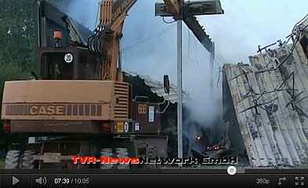
6. Juli 2009: Tüßling (Wohnhaus)
11. Juli 2009: Gräfelfing (Wohnhaus)
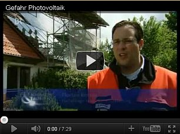
1. September 2009: Aachen-Lichtenbusch
5. September 2009: Sielenbach-Aichach
31. Oktober 2009: Winhöring-Letzenberg
22. Dezember 2009: Goldern
2009: 30 brennende Photovoltaikanlagen in Italien
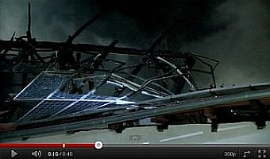
4. Januar 2010: Unstrut-Hainich-Kreis
6. Januar 2010: Schlotheim
17. Februar 2010: Schwerinsdorf (Wohnhaus)
9. März 2010: Gersten-Bawinkel (Putenstall)
4. April 2010: Döverden
6. April 2010: Wardenburg
14. April 2010: Neustadt am Rübenberge (EFH-Schaltschrank PV-Anlage)
22. April 2010: Rain am Lech (Lagerhalle Logistikzentrum)
23. April 2010: Bammental (Industriegebäude Pharma-Firma)
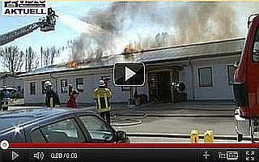
25. April 2010: Erlingen-Meitingen
4. Mai 2010: Büchenbaum/Halver
9. Mai 2010: Lahr (Scheffel-Gymnasium)
27. Mai 2010: Tonnenheide-Rahden (Ausstellungs- und Lagerhalle)
5. Juli 2010: Neckarsulm
7. Juli 2010: Offenburg (Lagerhalle)
11. Juli 2010: Groß Pankow (Wohnhaus)
12. Juli 2010: Kemnat (Trafostation Photovoltaikanlage)
20. Juli 2010: Unterweiler-Burgwindheim
25. Juli 2010: Löwenstein (Wohnhaus Innenstadt)
6. August 2010: Raesfeld-Paschenvenne-Homer
16. August 2010: Borken
20. August 2010: Steinfeld-Hausen (Firmenhalle)
22. August 2010: Wagenitz
29. August 2010: Forheim
2. September 2010: Bürstel (Wohnhaus)
18. September 2010: Zachenberg
19. September 2010: Bonlanden (Wohnhaus)
28. September 2010: Plattling (Diskothek)
12. Oktober 2010: Hainstadt
24. November 2010: Hirschling
6. Dezember 2010: St. Ingbert (Wohnhaus)
2010: 85 brennende Photovoltaikanlagen in Italien
Januar 2011: Rindelbach
4. Januar 2011: Unterneukirchen
30. Januar 2011: Hasselbach
7. Februar 2011: Zorbau (Verteilerkasten Großflächen-Solaranlage)
7. Februar 2011: Rheingönheim
18. Februar 2011: Ascheberg (Lagerhalle)
2. März 2011: Salching (Trafohaus Solarpark)
4. März 2011: Theenhausen (Einfamilienhaus Nagel)
8. März 2011: Feldheim (Einfamilienhaus)
8. März 2011: Lohberg (Hotel)
12. März 2011: Arnstorf (Bauhof)
12. März 2011: Fischbach (Elektrocontainer Solarpark)
14. März 2011: Böckingen (Kinderfreizeitland-Halle "Trampoline")
15. März 2011: Brianzè (PV-Freianlage)
24. März 2011: Falkenberg-Fünfleiten (Solarpark)
29. März 2011: Eft-Hellendorf
3. April 2011: Altrip am Rhein (Photovoltaik-Freiflächen-Anlage)
4. April 2011: Husum (Mega-Photovoltaik-Freiflächen-Anlage)
6. April 2011: Erfurt (Papier-Lagerhalle)
6. April 2011: Mengen
6. April 2011: Filderstadt-Bonlanden (Photovoltaikanlage-Wechselrichter)
7. April 2011: Romrod-Zell 1
7. April 2011: Dunningen
11. April 2011: Paderborn-Sennelager (Lagerhalle)
28. April 2011: Niederaula
28. April 2011: Oberalpfen (Mehrzweckhalle)
30. April 2011: Altrip am Rhein (Freiflächen-Photovoltaikanlage)
2. Mai 2011: Hirschberg (Autohaus gegenüber der Solarfirma)
4. Mai 2011: Thonlohe
15. Mai 2011: Lüneburg-Goseburg (Holzlagerhalle)
25. Mai 2011: Bühl (Lagerhalle)
3. Juni 2011: Greifswald-Eldena (Wohnhaus)
6. Juni 2011: Strasburg (Wohnblock/Mehrfamilienhaus)
10. Juni 2011: Büren-Keddinghausen
15. Juni 2011: Leinfelden-Unteraichen (Wohnhaus-Rohbau)
18. Juni 2011: Cento (Baumarkt Brico Io)
30. Juni 2011: Altomünster
30. Juni 2011: Hohenwarth-Unterzettling
4. Juli 2011: Sielenbach-Aichach
5. Juli 2011: Ittlingen-Heppich
12. Juli 2011: Ritschenhausen (Lagerhallen)
16.-18. Juli 2011: Vechelde-Alvesse (Doppelbrand)
24. Juli 2011: Klingenhain
28. Juli 2011: Soglioano sul Rubicone (Kommunalgebäude)
2. August 2011: Grettstadt - Dürrfeld
6. August 2011: Wiesau-Kornthan
10. August 2011: Düren-Merken
11. August 2011: Wolferstadt-Zwerchstraß (Freiflächen-PV-Anlage)
17. August 2011: Kloster Bardel
20. August 2011: Borgentreich-Körbecke
24. August 2011: Asseln: Solar- und Biohof
30. August 2011: Ferchensee
18. September 2011: Filderstadt-Bonlanden (Wohnhaus)
19. September 2011: Mittelkalbach
25. September 2011: Feldatal-Windhausen
26. September 2011: Kehl am Rhein (Heizungsbaubetrieb)
30. September 2011: Ankenreute-Gaisbeuren
30. September 2011: Landsberg am Lech - Frauenwald (PV auf Firmengebäude, 1. Brand)
30. September 2011: Overschau (Solarpark)
3. Oktober 2011: Gädheim
3. Oktober 2011: Höngeda (Wohnhaus)
7. Oktober 2011: Landsberg am Lech - Frauenwald (PV auf Firmengebäude, 2. Brand)
8. Oktober 2011: Argenbühl
8. Oktober 2011: Ebern (Lagerhalle)
9. Oktober 2011: Fröhnerhof
10. Oktober 2011: Landsberg am Lech - Frauenwald (PV auf Firmengebäude, 3. Brand in 14 Tagen) - dazu "Kommentare" im PV-Forum
15. Oktober 2011: Roydorf
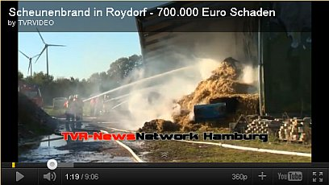
15. Oktober 2011: Oesdorf-Heroldsbach
15. Oktober 2011: Winsen an der Luhe
19. Oktober 2011: Langeneicke
20. Oktober 2011: Lehmingen-Oettingen
22. Oktober 2011: Mariensiel (Einfamilienhaus)
22. Oktober 2011: Eutelingen-Göttelfingen
23. Oktober 2011: Dettingen
29. Oktober 2011: Heeßel-Burgdorf (Sporthalle)
30. Oktober 2011: Großheirath
1. November 2011: Walperstetten-Niederviehbach (Ökologischer Volltreffer I: Solaranlage auf Holzhackschnitzel-Lagerhalle)
11. November 2011: Feuerbach (Einfamilienhaus)
12. November 2011: Wolferstadt-Zwerchstraß die zweite (Maschinenhalle)
21. November 2011: Wiesenbronn (Wohnhaus)
26. November 2011: Hüls-Hinterorbroich
1. Dezember 2011: Bergisch Gladbach Heidkamp (Lagerhalle)
2. Dezember 2011: Seedorf (Lagerhalle)
5. Dezember 2011: Untersiemau (Möbelfabrik)
15. Dezember 2011: Mindelheim
30. Dezember 2011: Stephanskirchen - Fussen (und hier ein hübsches Schadensbild der Feuerwehr)
o. Datum 2011: Weitingen (Schuppen)
2011: 289 brennende Photovoltaikanlagen in Italien
2. Januar 2012: Gussenstadt (Produktionshalle, brennt nach Wiederaufbau am 5.8.2013 wieder total ab!)
4. Januar 2012: Obertshausen (Industriehalle)
12. Januar 2012: Ehningen Hofgut Mauren (Stalldach-Photovoltaikanlage verschwiegen)
17. Januar 2012: Beratzhausen (Lagerhalle)
31. Januar 2012: Westhausen
1. Februar 2012: Schechen
1. Februar 2012: Wertheim-Nassig
2. Februar 2012: Rüsselsheim-Haßloch (PV verschwiegen, Pressebild zeigt nur Dachnordseite)
3. Februar 2012: Karlshof, Amt Putlitz-Berge (Einfamilienhaus)
4. Februar 2012: Petersberg-Böckels, Steinbachsfeld (Lagerhalle)
4. Februar 2012: Rheinstetten-Mörsch (Einfamilienhaus)
4. Februar 2012: Höxter-Lütmarsen (Fachwerkhaus 1854) Lütmarsen-Brandbilder
6. Februar 2012: Neufraunhofen (Pferdestall - PV verschwiegen)
6. Februar 2012: Mundingen (ehem. Schreinerei - PV verschwiegen)
8. Februar 2012: Bergneustadt (Sechsfamilienhaus)
9. Februar 2012: Lippetal-Hovestadt (Holzrahmen-Einfamilienhaus)
9. Februar 2012: Neuschönau-Schönanger (Lagerhalle und Bürogebäude eines Nahwärmeversorgers)
11. Februar 2012: Schloß Holte-Stukenbrock (Reiterhof)
12. Februar 2012: Krögelstein (Einfamilienhaus, Brandursache: defektes Heizgerät)
19. Februar 2012: Hasselberg (Brandstiftung)
6. März 2012: Wachenroth
6. März 2012: Lohberg (Hotel)
9. März 2012: Oberstdorf (Wohn- und Geschäftshaus mit Luxus-Ferienwohnungen)
15. März 2011: Ingolstadt (Gymnasium Gnadenthal)
19. März 2012: Mattenkofen
22. März 2012: Spahnharrenstätte (Einfamilienhaus, Brandausbruch bei Montage PV-Dach-Anlage)
23. März 2012: Coswig (Tischlerei-Werkhalle) - Solartrümer vom Coswiger Brand verseuchen 2,5 km entfernte Umgebung weiträumig
31. März 2012: Nordlohne (ehem. Bundeswehr-Depot-Halle)
1. April 2012: Goch (2 Lagerhallen)
3. April 2012: Großenhain-Skassa
4. April 2012: Cicerale (Firmenzentrale)
7. April 2012: Reinsdorf
8. April 2012: Hiltrup
10. April 2012: Rettenbach (Wohnhaus)
12. April 2012: Weinheim (Lagerhalle)
12. April 2012: Zweibrücken-Oberauerbach (Einfamilienhaus)
13. April 2012: Holsterhausen (Fertigungshalle Rolladenfabrik)
14. April 2012: Gensingen (Wohnhaus)
17. April 2012: Rot am See
20. April 2012: Rosenfeld (Wohnhaus)
20. April 2012: Casalvieri
21. April 2012: Grefrath (Wohnhaus)
21. April 2012: Caserta-San Tammaro (5000qm-Dach)
23. April 2012: Mosciano Sant'Angelo (Verpackungsfabrik)
30. April 2012: Osterwarngau (Photovoltaikanlage in Bericht unterschlagen, auf Fotos aber erkennbar)
30. April 2012: Oranienburg I (Solarpark)
02. Mai 2012: Kitzingen (Trafostation)
12. Mai 2012: Wolfhagen-Philippinenburg
18. Mai 2012: Äpfingen (Fertigungshalle)
19. Mai 2012: Huchem Stammeln (Lagerhalle)
23. Mai 2012: Reken Bahnhof (Hühnerstall)
23. Mai 2012: Herdecke (Dreifamilienhaus)
25. Mai 2012: Oranienburg II (Solarpark)
26. Mai 2012: Rodgau-Weiskirchen
26. Mai 2012: Iserlohn Lichte Kammer (Grundschule)
26. Mai 2012: Ehningen (Wohnhaus mit Scheune - Photovoltaikanlage auf Dach nicht genannt)
27. Mai 2012: Vollmarshausen (Wohnhaus-Anbau)
28. Mai 2012: Prenzlau-Igelpfuhl (Solarpark-Wechselrichter)
29. Mai 2012: Oldenburg ehem. Fliegerhorst (Solarpark-Generatorbau)
30. Mai 2012: Harburg-Heroldingen
31. Mai 2012: Kollnburg-Allersdorf
03. Juni 2012: Hemau
03. Juni 2012: Hilchenbach-Allenbach (Doppelhaushälfte)
03. Juni 2012: Geldern-Kapellen Waltersheide
09. Juni 2012: Uslar (Lagerhalle)
11. Juni 2012: Viereth (Busgarage)
12. Juni 2012: Remlingen (Biobauernhof-Lagerhalle)
16. Juni 2012: Wehr (Tierklinik/Reiterhof)
17. Juni 2012: Neustadt am Rübenberge (Reifencenter)
17. Juni 2012: Schönwalde Dorf (Wohnhaus)
18. Juni 2012: Romrod-Zell 2 - Photovoltaik-Wechselrichter als Brandursache
19. Juni 2012: Salach-Bärenbach
23. Juni 2012: Neuendettelsau (Wohnhaus)
26. Juni 2012: Iserlohn Kalthof (Industriehalle)
28. Juni 2012: Bühlerzell
28. Juni 2012: Trani-Bisceglie (Villa)
30. Juni 2012: Barßel (Fabrikhalle)
1. Juli 2012: Bösel Ostland
4. Juli 2012: Osnabrück (Firmendach)
5. Juli 2012: Seybothenreuth (Einfamilienhaus)
8. Juli 2012: Empoli (Fabrikdach)
14. Juli 2012: Marienberg
16. Juli 2012: Irleshof-Berg
22. Juli 2012: Thannhausen-Burg
24. Juli 2012: Feigenhofen-Biberbach
24. Juli 2012: Porto Sant'Elpidio (PV-Freianlage auf Betonkonstruktion)
27. Juli 2012: Pasewalk-Viereck-Gehege (ehem. Stall)
28. Juli 2012: Ehningen-Maurener Tal
28. Juli 2012: Bühlerzell-Geifertshofen
30. Juli 2012: Dinkelscherben-Häder
3. August 2012: Altdorf-Biessenhofen (Industriehalle des PV-Herstellers (!) Solarzentrum (!) Allgäu von Elektromeister und Philosoph Willi Bihler - Firmen-"Philosophie": "Wir setzen auf Alternative Energien", künftig: "Wir brennen durch Alternative Energien"?)
8. August 2012: Leutershausen (Maschinenhalle eines Blockheizkraftwerks!)
12. August 2012: Rudersberg (Reithalle)
14. August 2012: Meerbusch-Osterath (Scheune mit Reifenlager)
14. August 2012: Wingerode (Firmengebäude)
16. August 2012: Dülmen - Bauerschaft Welte
17. August 2012: Goldbeck
20. August 2012: Bemerode
20. August 2012: Vieholzen (Hackschnitzel-Lagerhalle)
25. August 2012: Ravensburg-Eschach (Kläranlagen-Halle)
26. August 2012: Waldkappel-Schemmern
26. August 2012: Uebigau-Wahrenbrück OT Neudeck
27. August 2012: Holstenniendorf
28. August 2012: Kirchroth-Pillnach (Maschinenhalle eines Bauunternehmens - Brandstiftung durch spielende Kinder)
29. August 2012: Rossiglione (ehem. Baumwollspinnerei)
2. September 2012: Rodgau-Nieder-Roden (Lagerhalle)
2. September 2012: Hürtgenwald-Horm (Lagerhalle der Müllsammelstelle)
5. September 2012: Luhe-Wildenau (Lagerhalle des Golfclubs)
7. September 2012: Kinding (Wohnhaus mit Doppelgarage)
8. September 2012: Hoberge-Uerentrup (Wohnhaus mit Flachdach)
9. September 2012: Kronprinzenkoog (Strohlagerhalle)
13. September 2012: Mönchenholzhausen (Strohlagerhalle und Rinderstall)
14. September 2012: Pasewalk (Strohlagerhalle des Berufsbildungszentrums)
15. September 2012: Neustadt-Eining (Hackschnitzelanlage)
23. September 2012: Groß Garz
24. September 2012: Straubing-Alburg (Holzhaus)
24. September 2011: Hude-Kirchkimmen
26. September 2012: Burgebrach (Dreifamilienhaus) -
hierzu besonders pikant: Aus dem Bericht der ahnungslosen FFW Burgebrach:
"Aus derzeit ungeklärter Ursache fing der Dachstuhl ... zwischen Ziegel und Innenverschalung an zu brennen. ... Nach Abschluss der
Löscharbeiten wurde durch die Fa. Elektro L... die Photovoltaikanlage abgebaut." Ob es überhaupt gebrannt hätte, wenn die PV-Dachanlage
schon vor dem Brand abgebaut worden wäre? ...
28. September 2012: Neckarbischofsheim (Sägewerk)
5. Oktober 2012: Hemsbach (Lagerhalle)
7. Oktober 2012: Eberfing-Gandershofen (PV verschwiegen)
13. Oktober 2012: Mengerskirchen-Waldernbach (Lagerhalle)
28. Oktober 2012: Elsten-Cappeln
1. November 2012: Berkau
13. November 2012: Sundern-Hellefeld
14. November 2012: Holzhäuser-Osterhofen
19. November 2012: Jettingen
22. November 2012: Aldersbach-Walchsing/Weidfeld (Villa, PV verschwiegen)
22. November 2012: Klein Fullen
24. November 2012: Jesberg (Möbelhaus-Lagerhalle)
24. November 2012: Altenheideck
Entsetzlich, was der Donaukurier über diesen Brand zu berichten weiß (Auszug aus Nachricht vor): "... die Photovoltaikanlagen ...
bereiteten den Feuerwehrmännern enorme Probleme: Zuallererst mussten sie alle Stromverbindungen zur Scheune kappen, und ... dann
... entwickelten sich die herabstürzenden Solarzellen zum nächsten Sicherheitsrisiko. Besonders tückisch: In der gewaltigen Hitze
explodierten mehrere Photovoltaikelemente, deren messerscharfe Splitter durch die Luft wirbelten. ... einige dieser Trümmer selbst
mehr als 50 Meter von der brennenden Scheune entfernt in einem angrenzenden Feld. ..."
25. November 2012: Grampersdorf (Photovoltaikfeld in Industriegebiet)
9. Dezember 2012: Gewerbepark Lang, Schongau (Lagerhalle)
12. Dezember 2012: Kreuzthal
22. Dezember 2012: Bergheim-Pfaffendorf (Einsturz Lagerhalle)
26. Dezember 2012: Rüdesheim (Getränkemarkt)
30. Dezember 2012: Aufhausen (Maschinenhalle mit Hackschnitzelheizung)
1. Januar 2013: Schenefeld (Carport)
11. Januar 2013: Northeim (Einfamilienhaus)
11. Januar 2013: Ahlefeld-Bistensee
12. Januar 2013: Scharbow
19. Januar 2013: Hohenzell
21. Januar 2013: Uehlfeld (Oldtimer-Werkstatt)
28. Januar 2013: Neukirchen-Vluyn
30. Januar 2013: Niederkrüchten
31. Januar 2013: Strobenried
1. Februar 2013: Ebhausen-Rotfelden (Kamelhof - Photovoltaik-Anlage wie so oft nicht genannt ...)
21. Februar 2013: Mamming
24. Februar 2013: Martinszell
26. Februar 2013: Stemwede
26. Februar 2013: Rohr (Kunststoff-Fabrik)
2. März 2013: Strocken (Fachwerk-Wohnhaus)
3. März 2013: Osterhofen (2. Brand)
6. März 2013: Schönfels
10. März 2013: Oste di Montemurlo (Wollspinnerei)
10. März 2013: Backnang (Wohnhaus, 8 tote Türken)
10. März 2013: Zufikon (Wohnhaus)
13. März 2013: Euskirchen
15. März 2013: Castelfranco (Wohnhaus)
17. März 2013: Freisen
20. März 2013: Forlì
23. März 2013: Niederpremeischl (Reiterhof-Wohnhausdach)
4. April 2013: Naunhof-Lindhart (Industriehalle)
6. April 2013: Taunusstein-Wehen
8. April 2013: Haselünne-Hülsen (Putenstall)
13. April 2013: Scharbeutz-Untersteenrade (Scheune mit Oldie- und Wohnwagen-Unterstellung)
18. April 2013: Wilhelmshaven (Logistik-Halle Jade Dienst)
19. April 2013: Tüßling-Boinham
22. April 2013: Cloppenburg-Damme (Produktions- und Lagerhalle)
24. April 2013: Ohlweiler (Einfamilienhaus, Dach-Photovoltaikanlage verschwiegen)
25. April 2013: Echzell-Bingenheim (Einfamilienhaus)
4. Mai 2013: Ditfurt
4. Mai 2013: Damme-Reselage
5. Mai 2013: Neulußheim (Einfamilienhaus)
5. Mai 2013: Kayhude (Reiterhof)
5. Mai 2013: Bellante (PV-Freianlage)
5. Mai 2013: Hohenthann-Penkofen
8. Mai 2013: Geilenkirchen-Prummern
15. Mai 2013: Hopferstadt
16. Mai 2013: Frauenau-Kagerbauernhof
24. Mai 2013: Genholland
24. Mai 2013: Laveno Mombello (Altenheim)
27. Mai 2013: Ganacker (Lagerhalle)
30. Mai 2013: Dietfurt (Industriehalle)
5. Juni 2013: Schnerkingen
6. Juni 2013: Sterzing (Tennishalle)
12. Juni 2013: Kastl-Klugham
17. Juni 2013: Fulda-Niederrode
18. Juni 2013: Fulda-Niederkalbach
19. Juni 2013: Osteressen (PV-Stromverteilerkasten)
20. Juni 2013: Lüdersburg/Bockelkathen
20. Juni 2013: Christershofen
20. Juni 2013: Buch
20. Juni 2013: Cuneo-Madonna dell'Olmo (Autohaus)
20. Juni 2013: Pontenure (Logistik-Lagerhallenkomplex)
22. Juni 2013: Ludwigshafen-Parkinsel (Styropor-Lagerhalle)
24. Juni 2013: Fusignano (Kunststoff-Fabrik)
29. Juni 2013: Berne (Boxen-Laufstall)
30. Juni 2013: Enniger-Ennigerloh
01. Juli 2013: Landshut-Ellermühle (Flughafen-Montagehalle)
01. Juli 2013: Cosenza-Mongrassano (Lagerhalle)
06. Juli 2013: Hargesheim (Gewerbehalle für Fahrzeugaufbereitungsfirma, Oldtimer-Garage, Maler- und Lackiererbetrieb)
08. Juli 2013: Buttelstedt (Schreinerei/Tischlerei/Bau- und Möbeltischlerei)
08. Juli 2013: Gavardo (Wohnhaus)
08. Juli 2013: Varena (Wohnhaus)
09. Juli 2013: Siegenthan
10. Juli 2013: Blekendorf (Wohnhaus)
10. Juli 2013: Pöllau (Jugendgästehaus)
13. Juli 2013: Ingelheim (Bahnhofs-Fahrradhalle)
15. Juli 2013: Berg-Irleshof
15. Juli 2013: Forchtenberg
15. Juli 2013: Teisbach (Wohnhaus)
16. Juli 2013: Altdorf (Wohnhaus)
19. Juli 2013: Rosdorf-Mengershausen (Wohnhaus mit Wintergarten)
19. Juli 2013: Wurmannsquick
21. Juli 2013: Maselheim-Äpfingen (Wohnhaus)
22. Juli 2013: Greven
23. Juli 2013: Bingen-Gaulsheim (Logistik-Lagerhalle)
26. Juli 2013: Manschnow (Pumpenhaus)
27. Juli 2013: Deutenhofen (Wohnhauskeller)
29. Juli 2013: Krottenthal
29. Juli 2013: Alpen-Veen (Reiterhof; Pferde-Bewegungshalle)
29. Juli 2013: Untergriesbach
30. Juli 2013: Denklingen (Einfamilienhaus mit Carport)
31. Juli 2013: Rottweil (Doppelsporthalle)
31. Juli 2013: Laer-Holthausen
1. August 2013: Hettingen (Einfamilienhaus)
1. August 2013: Schwaighausen-Holzgünz
3. August 2013: Kappel-Grafenhausen (Lagerhalle)
3. August 2013: Rosegg (Wohnhaus)
4. August 2013: Pfarrkirchen-Postmünster, Gut Fasselsberg (Gestüt-Hengststation)
4. August 2013: Bihlafingen (20-Tonnen-Dach-PV vom Winde verweht)
4. August 2013: Wölfersheim (Trafostation der PV-Großanlage "Solarpark")
4. August 2013: Bad Dürrheim
5. August 2013: Gussenstadt (Produktionshalle, schon zum 2. Mal mit PV-Großanlage vollständig abgefackelt)
6. August 2013: Ühlingen-Birkendorf: Riedern am Wald (Wohnhaus)
6. August 2013: Gunzenhausen-Aha
6. August 2013: Lörrach-Brombach (Mehrfamilienwohnhaus, PV-Anlagenbrand nicht erwähnt)
6. August 2013: Werl (Baumarkt)
7. August 2013: Augsburg (Wohnhaus)
11. August 2013: Riedlingen-Uttenweiler (Lagerhalle)
14. August 2013: Norderney (KFZ-Werkstatt und Unterstellhalle/Depot für Linienbusse)
15. August 2013: Zulling (Pferdehof, PV-Anlage auf Dach nicht erwähnt)
17. August 2013: Lindach (Photovoltaikfeld)
18. August 2013: Rahden (Trafohaus einer Photovoltaik-Großanlage)
23. August 2013: Sassenberg-Dackmar (Wechselrichter in Technikraum PV-Großanlage)
24. August 2013: Großweitzschen-Kattnitz-Ostrau (Milchviehanlage - Bergehalle)
25. August 2013: Filderstadt-Bernhausen (Zweifamilienhaus)
25. August 2013: Nordhorn (PV-Schulzentrum-Dach)
25. August 2013: Willingshausen
30. August 2013: Ellerstadt (Scheune)
1. September 2013: Tarp
3. September 2013: Wemding (Trafostation einer Freiflächen-PV-Anlage - mit schrecklichem Arbeitsunfall bei Erstanschluß der PV-Anlage)
3. September 2013: Delanco (Warenhaus)
7. September 2013: Dorfgütingen
8. September 2013: Metelen
11. September 2013: Spremberg (Industriehalle)
11. September 2013: Hinterschmiding
14. September 2013: Ebstorf
26. September 2013: Klein Süstedt (Ökohof-Schlachterei)
28. September 2013: Fulda-Bronnzell
2. Oktober 2013: Lausitz: Rosenthal-Bielatal (Zweifamilienhaus)
2. Oktober 2013: Lausitz: Vetschau (Industrie- und Technologiezentrum)
8. Oktober 2013: Lingen-Baccum / Emlichheim (Ausstellungsgebäude einer Tischlerei)
13. Oktober 2013: Vogtsburg-Niederrotweil
29. Oktober 2013: Duisburg Ingenhammshof (PV-Anlage (Google Maps) auf Lernbauernhof verschwiegen)
4. November 2013: Ditfurt (Reiterhof-Scheune)
5. November 2013: Wackersdorf (Photovoltaik-Anlagen-Hersteller!!!)
6. November 2013: Meeder (PV-Anlagen (Google Maps) auf Bauernhof verschwiegen)
8. November 2013: Fürstenau (Lagerhalle)
8. November 2013: Königheim (Großmetzgerei - Produktionshalle, Büroräume, Verkaufsladen, Gaststätte, PV-Großanlage auf Dach verschwiegen)
9. November 2013: Gudensberg-Dorla (Feuerwehrler von Stromschlag verletzt, 420 Schweine getötet)
16. November 2013: Missen-Wilhams
19. November 2013: Siegenburg-Niederumelsdorf/Oberumelsdorf? (Feuerwehrmann stirbt im Einsatz an Herzstillstand)
20. November 2013: Sögel
22. November 2013: Aichach-Unterschneitbach (Maschinenhalle)
27. November 2013: Wiefelstede (Lagerhalle)
29. November 2013: Unteregg-Warmisried
29. November 2013: Sengenthal (Einfamilienhaus)
1. Dezember 2013: Hüfingen-Sumpfohren, Wiesenackerhof (Photovoltaik-Dachanlage verschwiegen)
1. Dezember 2013: Kuddewörde (Einfamilienhaus)
6. Dezember 2013: Bodenheim (Mehrfamilienhaus, eine Schwerverletzte)
7. Dezember 2013: Schöllnach (Hackschnitzel-Lagerhalle)
8. Dezember 2013: Fehmarn-Orth (Bootshalle)
9. Dezember 2013: Arheilgen (Spargelhof)
16. Dezember 2013: Reichenbach (ehem. Einkaufsmarkt)
19. Dezember 2013: Klecken-Rosengarten (Wohnhaus, zwei tote Kinder)
1. Januar 2014: Freiburg/Elbe-Kehdingen
13. Januar 2014: Winzer-Rickering
14. Januar 2014: Winzer-Rickering
14. Januar 2014: Wargolshausen (Nebengebäude einer therapeutischen Praxis)
15. Januar 2014: Baden-Baden-Sandweier (Lagerhalle Holzbetrieb)
15. Januar 2014: Zwiefalten-Hochberg-Hochfalten
19. Januar 2014: Heidelsheim (Fahrschule)
23. Januar 2014: Sprakel, Hof Feldmann, typischerweise erst ohne ökoabzockpeinliche Erwähnung PV, dann aber doch, als PV als Brandursache feststand
24. Januar 2014: Krefeld (Villa Charlottenburg)
25. Januar 2014: Elsenfeld (Carport)
27. Januar 2014: Hasbergen (Erlebnisrestaurant)
27. Januar 2014: Uchte (Solarpark Trafohäuschen)
27. Januar 2014: Sachsenhagen (Solarpark Trafohäuschen)
29. Januar 2014: Harkebrügge (Putenstall)
30. Januar 2014: Elfershausen (Bürger-Solarpark)
4. Februar 2014: Rendsburg (Autohaus)
6. Februar 2014: Gorizia (Parkhaus)
7. Februar 2014: Rivergaro (Wohnhaus)
9. Februar 2014: Bösel
10. Februar 2014: Meppen
10. Februar 2014: Laas (Holzhackschnitzel-Fernheizwerk)
14. Februar 2014: Emlichheim Spahnharrenstätte
15. Februar 2014: Gnarrenburg (Speditions-Werkstatthalle)
18. Februar 2014: Bünsdorf
20. Februar 2014: Nattheim (Wohnhaus)
20. Februar 2014: Bargfeld (Ölmühle)
27. Februar 2014: St. Georgen (Kindergarten)
1. März 2014: Glauchau (Logistik-Lagerhalle)
1. März 2014: Lichtenau-Büschelbach (Lagerhallendach)
4. März 2014: Kraftisried-Westerried
5. März 2014: Lam (Wohnhaus)
9. März 2014: Ellwangen-Neunheim (Lagerhalle)
11. März 2014: Meßkirch
14. März 2014: Citadella (Zementfabrik)
15. März 2014: Neunkirchen bei Heilig Blut (Wohnhaus)
16. März 2014: Berleburg-Elshoff (Wohnhaus mit Scheune, PV-Anlage unerwähnt)
19. März 2014: Langenfeld-Alt-Wiescheid (Wohnhaus)
20. März 2014: Rinteln-Ahe
21. März 2014: Schönow (Wohnhaus)
27. März 2014: Waldmünchen-Spielberg (Holzhackschnitzel-Heizwerk)
2. April 2014: Mamburg
5. April 2014: Vechta-Grünenmoor (Produktionshalle Tierfutterbabrik mit Hackschnitzelanlage)
5. April 2014: Lastrup
9. April 2014: Haiterbach (Logistik-Lagerhalle)
10. April 2014: Engelsberg-Unterharrer
14. April 2014: Stuhr-Brinkum (Firmenhalle)
15. April 2014: Buchenberg
15. April 2014: Königsfeld
15. April 2014: Maßweiler (Kunststofffabrik)
16. April 2014: Hergatz-Engelitz
18. April 2014: Pernumia (Kaffeelager)
20. April 2014: Marina Eldenburg (Hausboot)
21. April 2014: Schortens (Wohnanlage mit 36 Wohnungen "Groen Winkel")
25. April 2014: Niedertopfstedt
27. April 2014: Horb am Neckar (Fensterfabrik, PV-Dachanlage verschwiegen)
28. April 2014: Westerstede, OT Garnholt / Garnholterdamm
29. April 2014: Kematen (Reitstall)
29. April 2014: Rastede (Mehrfamilienhaus)
29. April 2014: Valdobbiadene (Weinkellerei)
30. April 2014: Sulzbach an der Murr
April 2014: Nottinghamshire (Grundschule)
Die Brandsaison April 2014 schließt ab mit einem bemerkenswerten Forschungsergebnis des TÜV Rheinland und Fraunhofer ISE:
„Brandgefahren bei Photovoltaik-Anlagen sehr gering“
2. Mai 2014: Ried in der Riedmark
2. Mai 2014: Cantù (Firmensitz)
5. Mai 2014: Castelfiorentino (Autohaus)
12. Mai 2014: Geisenfeld/Gaden
14. Mai 2014: Willich-Anrath (Einfamilienhaus)
14. Mai 2014: Bocholt-Barlo-Plückelsheide (Dach-PV nicht erwähnt, auf Fotos sichtbar)
16. Mai 2014: Hinterkappelen (Einfamilienhaus)
17. Mai 2014: Grafling-Petraching (Firmen-Lagerhalle)
18. Mai 2014: Etzhorn (Firmen-Lagerhalle)
19. Mai 2014: Wachtendonk
27. Mai 2014: Geislingen an der Steige (Gartenhaus/Gartenhütte)
1. Juni 2014: Waldsolms-Weiperfelden (Solarpark)
1. Juni 2014: Aachen-Brand (Wohnhaus)
3. Juni 2014: Embühren
3. Juni 2014: Kaufbeuren (Enfamilienhaus)
6. Juni 2014: Wagenfeld (Wohnhaus)
8. Juni 2014: Walldorf (Lagerhalle)
8. Juni 2014: Tussenhausen (Garagenanbau/Holzlager)
9. Juni 2014: Wolfshagen (Schalterbrand Solarpark)
11. Juni 2014: Krefeld (Hafen-Lagerhalle)
12. Juni 2014: Hundewick
13. Juni 2014: Regenstauf-Bernhardswald-Grubberg
14. Juni 2014: Stralsund (Kartoffellagerhalle)
14. Juni 2014: Murg-Oberhof (Wohn- und Ökonomiegebäude - Dach-PV unerwähnt)
16. Juni 2014: Winterberg-Altenfeld (Heizungsgebäude - Feuerwehrmann durch PV-Stromschlag verletzt)
16. Juni 2014: Leegemoor (Stromkasten Solarpark)
17. Juni 2014: Schuttertal-Schweighausen
17. Juni 2014: Thalhofen (Trafohäuschen der Photovoltaik-Freianlage)
18. Juni 2014: Wiesenttal-Albertshof
18. Juni 2014: Windischholzhausen (Wohnhaus)
20. Juni 2014: Bad Wimpfen (Wohnhaus)
21. Juni 2014: Ebersburg-Weyhers
23. Juni 2014: Frankfurt a. Main (Bürogebäude der Stadtwerke)
23. Juni 2014: St. Blasien (Sägewerk)
25. Juni 2014: Seitingen-Oberflacht (PV auf Brandobjekt verschwiegen)
3. Juli 2014: Bruck
11. Juli 2014: Cortemaggiore (Fabrikhalle)
13. Juli 2014: Freihung-Thansüß
16. Juli 2014: Wees (Tierfutterhandel, PV verschwiegen, aber in Bild sichtbar)
17. Juli 2014: Lecce (Richter-Wohn-Palast)
19. Juli 2014: Schliengen-Liel
19. Juli 2014: Wangen-Haslach (Schreinerei Müller, PV-Anlage am Dach von allen Medienberichten verschwiegen, auf
Bildlink sichtbar)
20. Juli 2014: Bohmte-Hunteburg-Schwegermoor (Kompostierwerk)
21. Juli 2014: Teor (Baustofflager)
22. Juli 2014: Neustadt bei Coburg-Ketschenbach (Maschinenhalle)
22. Juli 2014: Werl-Westönnen (Lagerhalle)
23. Juli 2014: Codigoro
24. Juli 2014: Jelmstorf-Bruchtorf (PV-Dachanlage nicht erwähnt, aber im Foto zu sehen)
24. Juli 2014: Dornheim (Wechselrichter Solarpark)
25. Juli 2014: Untergruppenbach-Donnbronn (Dreifamilienhaus)
27. Juli 2014: Neukünkendorf ( Zwei Firmenhallen)
27. Juli 2014: Tornitz (Mastanlage)
28. Juli 2014: Löningen-Benstrup (PV-bedachte Werkhalle für Photovoltaik-Anlagen)
29. Juli 2014: Ering-Tiefengrub (Lagerhalle)
29. Juli 2014: Donaueschingen-Aufen (Zweifamilien-Doppelhaus)
29. Juli 2014: Kipfenberg-Krut
31. Juli 2014: Klebe (Firmengebäude)
31. Juli 2014: Selters-Eisenbach
31. Juli 2014: Hüllhorst-Oberbauerschaft (Wohnhaus)
2. August 2014: Hövelhof (Mehrfamilienhaus - Polizeibericht zur Brandursache)
4. August 2014: Hofgeismar (Lagerhalle auf Mülldeponie)
9. August 2014: Bollstedt
10. August 2014: Scheyern-Prielhof
11. August 2014: Nabburg-Eckendorf (Solarpark)
13. August 2014: Sellerich
13. August 2014: Nettetal-Kaldenkirchen (Dämmstoff-Lagerhalle)
15. August 2014: Neustift
22. August 2014: Donaueschingen-Aasen - Brandursache: Mäusen fressen PV-Isolierung
22. August 2014: Bippen (Sägewerk-Trocknungshalle, Dachfläche mit großer Photovoltaikanalage bestückt - keinerlei Erwähnung, auch nicht in Nachberichterstattung!)
25. August 2014: Fockbeck
28. August 2014: Fürth (Firma für KFZ-Teile mit Lagerhalle und Verwaltungsgebäude)
28. August 2014: Vezzano sul Crostolo - Sedrio (Wohnhaus)
30. August 2014: Künsche (Wohnhaus)
31. August 2014: Neuenkirchen-Vinte (Unterstellhalle)
31. August 2014: Umbertide (Werkstattbau mit Reifenlager)
2. September 2014: Landau (Autohaus, Dach-PV nicht erwähnt)
8. September 2014: Reckendorf (Schreinerei)
8. September 2014: Hammelburg-Westheim (Garage mit Wohnhaus)
10. September 2014: Talheim (Zimmerei mit 2 Hallen - PV verschwiegen, Ursache "technischer Defekt"!)
14. September 2014: Schortens (Rathaus)
15. September 2014: Perugia-Ponte San Giovanni (Industriegebäude)
16. September 2014: Neustadt/Wied-Fernheim (Sportlerheim)
17. September 2014: Sellerich-Hontheim
18. September 2014: Helsen
21. September 2014: San Defendente di Cervasca (Getränkevetrieb)
23. September 2014: Weilerswist
24. September 2014: Piombino Dese (PV-Freianlage)
25. September 2014: Heide
25. September 2014: Lingen-Holthausen
26. September 2014: Painten-Maierhofen (Lagerhalle)
30. September 2014: Ilmmünster
4. Oktober 2014: Battenberg-Berghofen (Holzschuppen)
4. Oktober 2014: Malgersdorf (Folienfabrik) (Dach-PV nicht erwähnt)
12. Oktober 2014: Essen
16. Oktober 2014: Garrel (Holzhackschnitzelanlage)
17. Oktober 2014: Weinstadt (Werkrealschule - Schuldach)
20. Oktober 2014: Altenebstorf
22. Oktober 2014: Wildhaus-Ebenboden
23. Oktober 2014: Weiden (Photvoltaikteile-Lagerhalle)
23. Oktober 2014: Uhingen (Sporthalle)
27. Oktober 2014: Großeibstadt (Hackschnitzelheizanlage)
27. Oktober 2014: Welzheim-Breitenfürst (Zwei Lager- und Fertigungs-Fabrikhallen)
27. Oktober 2014: Hückeswagen (Garage)
28. Oktober 2014: Stiepel (Wohnhaus)
29. Oktober 2014: Friesoythe-Ikenbrügge
31. Oktober 2014: Kirchderne
4. November 2014: Hohndorf (Möbeltischlerei)
6. November 2014: Opfenbach-Bleichen
7. November 2014: Zollenreute-Vogelsang bei Aulendorf
7. November 2014: Wangen-Leupolz (Dorfmarkt)
7. November 2014: Königshütte-Neumühle (Maschinenhalle)
15. November 2014: Hünxe-Bruckhausen
15. November 2014: Waldeck-Sachsenhausen-Winterhagen (Wohnhaus und Lagerhalle)
15. November 2014: Birmingham (Supermarkt)
17. November 2014: Porto Empedocle (Fabrik für Enrneuerbare Energien) - Volltreffer!
18. November 2014: Doberschütz-Sprotta
18. November 2014: Minden-Päpinghausen (Recyclingbetrieb Lagerhalle)
25. November 2014: Werthers-Langenheide
26. November 2014: Ichtershausen (Wohnhaus, ein Toter)
9. Dezember 2014: Warmsen-Bohnhorst (Wohnhaus)
13. Dezember 2014: Wolpertshausen (Großmetzgerei)
13. Dezember 2014: Boffzen (Autohaus)
15. Dezember 2014: Vellberg-Großaltdorf (Dach-PV-Anlage verschwiegen)
19. Dezember 2014: Aurach
19. Dezember 2014: Nienstädt (Industrielager, PV verschwiegen)
20. Dezember 2014: Oberrot (Mehrfamilienhaus)
21. Dezember 2014: Schwandorf-Klardorf
21. Dezember 2014: Langstadt
21. Dezember 2014: Emsdetten
1. Januar 2015: Lohfelden-Vollmarshausen (Gewerbegebäude)
1. Januar 2015: Stamsried
1. Januar 2015: Niederweiler
2. Januar 2015: Immenstadt (Wohnhaus)
4. Januar 2015: Penkun-Neuhof
5. Januar 2015: Vordersten-Thüle
7. Januar 2015: Sulingen (Lagerhalle / Traktoren-Oldtimer-Depot)
8. Januar 2015: Heidmoor (Mehrfamilienhaus des Feuerwehrführers)
10. Januar 2015: Lembeck (Getränkelager)
11. Januar 2015: Gladenbach-Mornshausen (Pelletslagerhalle)
14. Januar 2015: Waidhofen-Rachelsbach
15. Januar 2015: Kalihi (Druckerei)
16. Januar 2015: Leiblfing-Seibersdorf (Lagerhalle/Werkstatt)
20. Januar 2015: Einhausen-Obermaßfeld-Grimmenthal (Dach-PV-Anlage nicht benannt)
23. Januar 2015: Nüsttal-Silges (Sägewerk, Schreinerei und Holzhandel)
25. Januar 2015: Sonderhofen-Bolzhausen
25. Januar 2015: Kamenz (Lagerhalle der Tafel)
3. Februar 2015: Neudenau (Bürocontainer)
6. Februar 2015: Wietmarschen-Lohne (Doppelhaushälfte)
7. Februar 2015: Schweicheln-Bermbeck (Wohnhaus)
8. Februar 2015: Muggensturm (Wohnhaus)
10. Februar 2015: Safenwil (Einfamilienhaus)
10. Februar 2015: Freiburg-Ehrenkirchen (Balkonbrand)
11. Februar 2015: Schwieberdingen (Lagerhalle)
20. Februar 2015: Reisbach (Matratzenfabrik)
22. Februar 2015: Oberholzham
23. Februar 2015: Alfdorf (Wohnhaus)
25. Februar 2015: Bernbeuren (Gemeindestadel auf Sportplatz)
28. Februar 2015: Haßloch (Wohnhaus)
2. März 2015: Klüt
12. März 2015: Langstadt
15. März 2015: Jettenburg (Lagerhalle)
15. März 2015: Freiburg i.Br.-Eichelbuck (Riesen-Solaranlage auf Mülldeponie)
17. März 2015: Heustreu
17. März 2015: Kempten-Heiligkreuz (Biogasanlagen-Gebäude)
19. März 2015: Sigmaringen (Wohnhaus)
21. März 2015: Uhingen (Gartenhaus)
27. März 2015: Caloundra (Wohnhaus)
30. März 2015: Hohenwart-Freinhausen
2. April 2015: Windorf-Hatzing
4. April 2015: Rietberg-Westerwiehe (Kindertagesstätte Kita
4. April 2015: Bad Rappenau (Wohnhaus)
6. April 2015: Mauls
9. April 2015: Feldthurns (Wohnhaus)
9. April 2015: Bischofsheim
10. April 2015: Jever (Lagerhalle)
12. April 2015: Waging (Werkstatt)
12. April 2015: Geisenfeld (Hackschnitzelbunker mit Lagerhalle)
15. April 2015: Rottenburg (Berufsschuldach)
15. April 2015: Grafenschachen (Solarkollektor/Solarthermie entzündet Einfamilienwohnhaus)
16. April 2015: Ottobeuren (Villa)
17. April 2015: Freistadt (Hackgutlager)
19. April 2015: Oberkirch (Gartenhütte)
19. April 2015: Weiding (Industriegebäude)
20. April 2015: Hove (Rathaus)
8. Mai 2015: Latham (Zahnarztpraxis)
9. Mai 2015: Kraupa (Solarpark)
18. Mai 2015: Daseburg
19. Mai 2015: Unsleben (Kindergarten)
20. Mai 2015: Menzlin
24. Mai 2015: Groß Offenseth-Aspern, Schwarzer Dreck
27. Mai 2015: Burk (Reithalle - Photovoltaik auf Süddachhälfte weder erwähnt noch fotografiert)
28. Mai 2015: Wenden-Altenhof (Leerstehendes Bauernhaus)
28. Mai 2015: Freudenstadt-Christophstal (Omnibusgarage)
31. Mai 2015: Döbritz (Dachdecker-Lagerhalle)
1. Juni 2015: Bad Säckingen (Speditionshalle)
3. Juni 2015: Pirna (Einkaufs- u. Liefer-Genossenschaft ELG)
5. Juni 2015: Friesenried (Wohnmobil)
6. Juni 2015: Hilders/Unterbernhards
8. Juni 2015: Sulzemoos (Einfamilienhaus)
10. Juni 2015: Olpe/Dahl Friedrichsthal (Traktoren-/Fahrradhandel)
13. Juni 2015: Zorneding (Garagenanlage)
14. Juni 2015: Kirchheimbolanden (Schwimmbad)
15. Juni 2015: Totnes (Camper Van)
17. Juni 2015: Schwaigern (Industriehalle)
17. Juni 2015: Reinsdorf (Sportlerheim in Scheune)
19. Juni 2015: Seesen (Trafostation Solarpark)
24. Juni 2015: Neutraubling (Hochregallager)
24. Juni 2015: Kawana (Gemeinschaftshaus)
25. Juni 2015: Pfaffenweiler (Wohnhaus)
27. Juni 2015: Wallhausen-Schönbronn
27. Juni 2015: Birkenfeld
30. Juni 2015: Schwäbisch Hall
30. Juni 2015: Aalen-Ebnat (Sägewerk - PV-Anlage nicht erwähnt)
1. Juli 2015: Nonnersdorf (Schuppen)
1. Juli 2015: Hessisch-Lichtenau (Reithalle)
1. Juli 2015: Paderborn (Energieautarkes Nahrungsmittelwerk)
1. Juli 2015: Ludwigsburg-Asperg (Zweifamilienhaus)
1. Juli 2015: Lincolnshire (Solar Panel Freianlage auf Zaun)
3. Juli 2015: Simmozheim-Büchelbronn(Zimmerei, PV-Dach verschwiegen)
4. Juli 2015: Überruhr-Holthausen (Wohnhaus)
5. Juli 2015: Bochum Stiepel (Wohnhaus)
5. Juli 2015: Hohenaverbergen
5. Juli 2015: Hofheim (Mehrfamilien-Wohnhaus)
5. Juli 2015: Ilbesheim (Weingut-Lagerhalle)
8. Juli 2015: Oster-Ohrstedt Hof Backensholz (Futtermittel-Lagerhalle der fast energieautarken Biokäserei)
9. Juli 2015: Marktzeuln (Go-Kart-Halle)
9. Juli 2015: Brigachtal-Klengen (Wohnhaus)
10. Juli 2015: Binsfeld (Lagerhalle Aussiedlerhof)
11. Juli 2015: Hosenfeld (Sägewerk, PV-Dächer verschwiegen)
14. Juli 2015: Gemeinfeld (Sägewerk, PV-Dächer verschwiegen)
16. Juli 2015: Irvine (Königliche Akademie)
17. Juli 2015: Mitterkirchen (PV verschwiegen)
17. Juli 2015: Trostberg
18. Juli 2015: Siegenburg
18. Juli 2015: Kirchlinteln-Hohenaverbergen
19. Juli 2015: Antdorf (PV-Dach verschwiegen)
25. Juli 2015: Voitsberg (Buschenschank-Gaststätte)
25. Juli 2015: Wildeshausen (Lagerhalle am Bahnhof)
31. Juli 2015: Wurmlingen (Werkstatt)
1. August 2015: Wiesa
4. August 2015: Erlbach-Kronsberg
5. August 2015: Bad Doberan (Hallendach einer Entsorgungsfirma)
6. August 2015: Marienberg-Sorgau (Wohnhaus)
9. August 2015: Schwerin-Stern Buchholz (Schwimmhalle)
9. August 2015: Walle
10. August 2015: Forstinning (Müll-Lagerhalle)
10. August 2015: Gemünden-Aschenroth
13. August 2015: Markneukirchen
16. August 2015: Bad Grönenbach - Schulerloch
19. August 2015: Bedburg-Kaster (Wohnhausdach)
19. August 2015: Bödefeld
20. August 2015: Öttingen (Solarfeld-Anlage)
21. August 2015: Hösbach-Feldkahl (Dach-PV verschwiegen)
21. August 2015: Laer-Holthausen Hof Stegemann (2)
24. August 2015: Gräfenhainichen-Ferropolis (Lagerhalle)
25. August 2015: Klausen-Gufidaun
28. August 2015: Marlborough (Wohnhaus)
29. August 2015: Großenwiehe
31. August 2015: Grafrath-Unteralting (Einfamilienhaus)
2. September 2015: Groß Molzahn
3. September 2015: Adelsried (Hackschnitzelheizung)
3. September 2015: Tarp (Autowerkstatt)
3. September 2015: Güntersberge (Einkaufszentrum)
3. September 2015: Schlammersdorf (Maschinenhalle, Dach-PV verschwiegen)
4. September 2015: Barum
5. September 2015: Großolt-Kollerup (Maschinenhalle, Dach-PV verschwiegen)
6. September 2015: Titz-Spiel
6. September 2015: Puschendorf
9. September 2015: Schwetzingen (Alte Tabakscheune, Dach-PV verschwiegen)
10. September 2015: Burgsalach-Indernbuch
12. September 2015: Löhne (Küchenzulieferer Lager - PV-Dach verschwiegen)
14. September 2015: Egelsried (Dach-PV verschwiegen)
20. September 2015: Norddeich (Discountmarkt)
21. September 2015: Alt Tellin (Agrarhalle)
21. September 2015: Löbnitz-Saatel (Trafostation Solarpark)
22. September 2015: Diemelsee-Vasbeck (Strohscheune)
25. September 2015: Wallroda (Strohscheune)
25. September 2015: Mühlingen-Madachhof (Geräteschuppen)
27. September 2015: Leisnig (Wohnhaus)
1. Oktober 2015: Bad Endorf-Holzen
5. Oktober 2015: Norden (Wohnhaus)
5. Oktober 2015: Bad Salzungen (Wohnhaus)
6. Oktober 2015: Wolnzach
8. Oktober 2015: Springe (Otto-Hahn-Gymnasium OHG)
10. Oktober 2015: Großbartloff (Wohnhausanbau)
11. Oktober 2015: Herbsleben
12. Oktober 2015: Herzogenaurach-Beuteldorf (Dach-Solarstromanlage verschwiegen
14. Oktober 2015: Dornbirn-Wallenmahd (Schlosserei)
14. Oktober 2015: Rastdorf
15. Oktober 2015: Hoyerhagen
18. Oktober 2015: Dietenheim (Gartenlaube)
27. Oktober 2015: Drewitz (Lagerhalle)
29. Oktober 2015: Markendorf (Schredderanlage)
30. Oktober 2015: Boston (Apartementhaus)
31. Oktober 2015: Asbach-Niederhoppen (PV-Dachanlage verschwiegen)
2. November 2015: Stralsund (Bauhof-Baracken)
2. November 2015: Ortenburg (Einfamilienhaus)
6. November 2015: Norden-Westermarsch II
6. November 2015: Marsberg-Meerburg
7. November 2015: Edgewater (Wohnhaus)
9. November 2015: Hamm-Herringen (Blockhaus-Hütten)
20. November 2015: Hettenshausen
21. November 2015: Newquay (Wohnhaus)
9. Dezember 2015: Malente-Krummsee (Wohnhaus)
12. Dezember 2015: Balingen-Weilstetten
15. Dezember 2015: Aichach-Klingen
21. Dezember 2015: Lonsee-Urspring (Lagerhalle)
23. Dezember 2015: Nersingen (Einzelhandelsgeschäft/Kaufhaus)
23. Dezember 2015: Voltlage
24. Dezember 2015: Gaimersheim-Lippertshofen (Einfamilienhaus, PV-Batterien entzündet)
1. Januar 2016: Goldenstedt (Lagerhalle)
3. Januar 2016: Alzenau-Hörstein (Carports und Einfamilienhaus des örtlichen Photovoltaik-Fachbetriebs)
5. Januar 2016: Birkenau-Löhrbach (Sportheim/Turnhalle)
6. Januar 2016: Groß-Pankow
12. Januar 2016: Obertrubach-Bärnfels (Scheune)
25. Januar 2016: Gamstädt (Scheune)
26. Januar 2016: Nittenau-Nerping (Scheune)
27. Januar 2016: Lüder (Wohnhaus)
29. Januar 2016: Herbartsdorf
30. Januar 2016: Rot am See
3. Februar 2016: Weilstetten (Wohnhaus)
3. Februar 2016: Grundsheim
5. Februar 2016: Tannhausen-Ellrichsbronn (Schuppen)
11. Februar 2016: Unterspiesheim
22. Februar 2016: St. Veit - Steinbichl (Carport-Anbau und Hühnerstall)
23. Februar 2016: Nethen (Dachgeschoß Einfamilienhaus)
23. Februar 2016: Saerbeck (Gewerbebetrieb)
28. Februar 2016: Löningen (Hof-Halle mit Hackschnitzelheizung)
9. März 2016: Bruchsal-Helmsheim (Einfamilienhaus)
9. März 2016: Pfullingen (Sportstudio)
9. März 2016: Eschen
11. März 2016: Mureck (Lagerhalle)
11. März 2016: Weißenbach (Wohnhaus)
14. März 2016: Filzbach (Wohnhaus)
17. März 2016: Fahrenholz
20. März 2016: Pattensen (Motorsport-Clubheim)
27. März 2016: Wipperoda (Trafostation im Solarpark)
7. April 2016: Bondorf (Gemüsehof-Lager)
10. April 2016: Otterstedt (Wohnhaus)
13. April 2016: Bad Wünnenberg - Gut Wohlbedacht (Solarbedachung verschwiegen)
23. April 2016: Sosberg
24. April 2016: Schadow (Hähnchenmastanlage)
27. April 2016: Bördeleben-Welsleben
1. Mai 2016: Langlingen (Hotel)
2. Mai 2016: Polling-Moos (Sägewerk-Lagerhaus)
2. Mai 2016: Schwanau-Ottenheim
4. Mai 2016: Schechen-Wurzach (Maschinenhalle und Anbau, Solardachlandschaft verschwiegen)
5. Mai 2016: Daleiden (Grundschule)
5. Mai 2016: Balje-Hörne Nordkehdingen (Obstlagerhalle)
5. Mai 2016: Zschorlau-Albernau (Schuppen)
7. Mai 2016: Römhild (Reitanlage, Dach-PV verschwiegen)
8. Mai 2016: Alling (Oldtimer-Halle)
8. Mai 2016: Mainbernheim (Reitergehöft)
8. Mai 2016: Templin (Eigenheim)
8. Mai 2016: Fürstenzell-Aspertsham (Wohnhaus)
8. Mai 2016: Bergedorf (Wohnhaus)
10. Mai 2016: Wohlde
11. Mai 2016: A70 Schirradorf-Stadelhofen (Trafohäuschen der Freflächen-Solaranlage)
12. Mai 2016: Dingolfing (Reithalle)
12. Mai 2016: Wolfenbüttel-Linden (Jägermeister-Fabrik)
12. Mai 2016: Ribnitz-Damgarten (Einfamilienhaus)
12. Mai 2016: A 24 Putlitz (Betriebscontainer Solaranlage)
18. Mai 2016: Herbolzheim (Solar-Trafoanlage)
19. Mai 2016: USA Ivanpah (Solaranlage/Solar Plant)
20. Mai 2016: Lanitz-Hassel-Tal Spielberg-Poppel (Schweinemast)
21. Mai 2016: Viersen (Möbelhaus)
22. Mai 2016: Köln-Nippes (Wohnmobil)
22. Mai 2016: Haag a.d. Amper - Mittermarchenbach (Lagerhalle)
23. Mai 2016: Krefeld (BMW-Autohaus)
24. Mai 2016: Sontheim an der Brenz (Lagerhalle)
29. Mai 2016: Fridolfing
30. Mai 2016: Gernach (Einfamilienhaus)
30. Mai 2016: Mitwitz-Steinach (Baustoffhandel/Baumarkt)
30. Mai 2016: Niederwörth (Doppelwohnhaus)
30. Mai 2016: Kolitzheim (Einfamilienhaus)
2. Juni 2016: Rendswühren (Holzhackschnitzel-Lagerhalle)
3. Juni 2016: Einen-Müssingen (Doppelwohnhaus)
4. Juni 2016: Fleckenberg (Wohnhaus)
7. Juni 2016: Schwarzenberg-Bermsgrün (Wohnhaus)
10. Juni 2016: Tuchheim (Wohnhaus)
15. Juni 2016: Lage (Wohnhaus)
15. Juni 2016: Gütersloh-Avenwedde (Lackiererei)
16. Juni 2016: Neusalza-Spremberg (Lastkraftwagen/LKW mit PV-Dachanlage und Rennwagen als Ladung)
22. Juni 2016: Govelin
24. Juni 2016: Hohndorf (Möbelhaus)
25. Juni 2016: Hartmannsdorf (Wohnhaus)
26. Juni 2016: Stocksdorf (Gärtnerei)
28. Juni 2016: Hausen (Firmendach)
28. Juni 2016: Gars am Inn (Wohnhaus)
29. Juni 2016: Markranstädt (Sportcenter)
30. Juni 2016: Oeynhausen (Hühnerstall mit 25000 Legehennen)
2. Juli 2016: Großerlach-Schönbronn (Landschaftspflege-Betrieb)
2. Juli 2016: Schwaförden
2. Juli 2016: Kisselbach
4. Juli 2016: Heilsbronn-Ketteldorf
6. Juli 2016: Denekamp (Möbeltischlerei)
8. Juli 2016: Nersingen (Supermarkt)
8. Juli 2016: Hellmitzheim
10. Juli 2016: Groß Krauscha (Sturmschaden)
10. Juli 2016: Kevelaer
16. Juli 2016: Bedburg-Hau (Plastikfabrik)
19. Juli 2016: Hüblingen (Wohnhaus)
24. Juli 2016: Kressbronn (Feuerwehrhaus, Solardach nicht erwähnt)
25. Juli 2016: Schwerin-Lankow (Fitness-Studio)
27. Juli 2016: Taiwan-Taipei (Wasserpark)
28. Juli 2016: Rohrach
28. Juli 2016: Tensbüttel-Röst
29. Juli 2016: Ellwangen-Buchhausen
4. August 2016: Bad Zwesten (Wohnhaus)
5. August 2016: Molbergen-Peheim (Entenstall)
9. August 2016: Winnekendonk
9. August 2016: Engen-Bargen
10. August 2016: Baden-Baden (Lagerhalle)
11. August 2016: Rechberg
11. August 2016: Eppelheim (Imker-Gartenhütte)
12. August 2016: Westkirchen
14. August 2016: Plüdershausen (Wohnhaus)
14. August 2016: Ditterke (Tischlerei)
16. August 2016: Langendorf
17. August 2016: Marktl-Dornitzen (Wohnhaus)
17. August 2016: Illertissen (Schaltstation)
18. August 2016: Landau (Holzfachhandel Lagerhalle)
20. August 2016: Prackenbach-Tresdorf (Schreinerei)
23. August 2016: Weiding (Fertigungshalle Holzbaufirma, Dach-PV nicht genannt, 2. PV-Brand in Weiding)
22. August 2016: Rottenburg an der Laaber (Wohn- und Geschäftshaus)
24. August 2016: Xanten (Lagerhalle)
26. August 2016: Brelingen-Wedemark (Einfamilienwohnhaus)
28. August 2016: Breitenfeld (Wohnhaus)
29. August 2016: St. Marein-Krumegg (Selbstentzündung der überhitzten Solarkollektoren auf Wohnhaus als Brandursache)
31. August 2016: Kirchheim (Selbstentzündung der überhitzten Solarthermie-Anlage auf Wohnhaus des Esslinger Ökolandrats als Brandursache)
02. September 2016: Anröchte-Berge
04. September 2016: Haunetal-Wehrda
04. September 2016: Jessen-Morxdorf (PV-Dach einer Lagerhalle von Sturm abgedeckt)
07. September 2016: Misburg (Lagerhalle Entsorgungsbetrieb)
07. September 2016: Ransbach-Baumbach (Wohnhaus)
12. September 2016: Monheim (Selbstentzündung der überhitzten Solarthermieanlage auf Wohnhaus als Brandauslöser)
17. September 2016: Löffingen (Lagerhallen)
18. September 2016: Wehretal-Hoheneiche (Unterstand)
21. September 2016: Leizen (Lagerhalle Futtermittelhersteller)
22. September 2016: Uedem-Keppeln
22. September 2016: Straßwalchen (Wohnhaus, Brand durch Funkenflug bei Flexen der thermischen Solaranlagenrohre)
23. September 2016: Sulz a.N. (Einfamilienhaus)
23. September 2016: Kirchlinteln-Holtum (Geest)
23. September 2016: Auma-Gütterlitz (Solarthermieanlage auf Wohnhaus, Brand nach Lötarbeiten)
26. September 2016: Hahnebach (Einfamilienhaus)
27. September 2016: Rottenmann (Kabelschrankanlage Freiflächen-PV-Anlage)
28. September 2016: Papenburg (Doppelhaushälfte)
29. September 2016: Epfendorf (Dach-PV verschwiegen)
9. Oktober 2016: Heidenheim (Wohn- und Geschäftshaus)
13. Oktober 2016: Großheide-Westerende (Maschinenhalle)
20. Oktober 2016: Dortmund-Marten (Gartenlaube)
21. Oktober 2016: Trier-Heiligkreuz (Gartenhaus)
22. Oktober 2016: Werne-Abdinghof (Wohnhaus mit Carport)
23. Oktober 2016: Hagelloch
24. Oktober 2016: Mindelstetten-Imbath (Lagerhalle)
30. Oktober 2016: Nordhorn-Bookholt (Carport)
6. November 2016: Ningbo (China) (Solarzellenfabrik)
9. November 2016: Fürstenzell-Bromberg (Golfplatz-Halle)
12. November 2016: Oldenburg-Bümmerstede (Wohnhaus)
16. November 2016: Aiterhofen-Niederharthausen
21. November 2016: Vellberg
22. November 2016: Altenkunstadt (Gartenbau-Lagerhalle)
24. November 2016: Homberg-Hombergshausen
25. November 2016: Geeste-Dalum (Fabrikationshalle)
25. November 2016: Königsbronn-Itzelberg (Wohnhaus)
1. Dezember 2016: Groß Rodensleben
3. Dezember 2016: Rottenburg-Dettingen
3. Dezember 2016: Keltern-Ellmendingen (Wohnhaus- und Geschäftshaus)
17. Dezember 2016: Rennertshofen-Ammerfeld
31. Dezember 2016: Irschenberg (Wohnhaus, Dach-PV verschwiegen)
5. Januar 2017: Nürnberg-Höfles (Lagerhalle)
17. Januar 2017: Klein Ilsede (Werkstattgebäude)
22. Januar 2017: Haspe (Spedition)
23. Januar 2017: Gundelfingen-Bächingen
25. Januar 2017: Hafenhofen (Gewerbebetrieb)
26. Januar 2017: Roth am Forst (Scheune, Dach-PV verschwiegen)
30. Januar 2017: Ebersburg-Weyhers (Scheune und Wohnhaus)
10. Februar 2017: Gudensberg
11. Februar 2017: Goldach (Lagerhalle mit Kfz-Werkstätte und Unterstellplätzen für Pkw und Motorräder)
13. Februar 2017: Stöckach
14. Februar 2017: Bierbergen
16. Februar 2017: Unterlauchringen (ehem. Fabrik)
24. Februar 2017: Densbüren
24. Februar 2017: Freiburg i. Br. (Kabelbrand im Solarinfocenter!)
25. Februar 2017: Schleusingen (Einfamilienhaus)
25. Februar 2017: Nidderau-Heldenbergen
26. Februar 2017: Großostheim
2. März 2017: Eitorf (Forstbetriebs-Halle)
5. März 2017: Memmingen (Gartenhütte, Brandursache PV-Batterie)
5. März 2017: Ehningen (Wohnhaus)
10. März 2017: Wattwil-Eggberg
11. März 2017: Buch
14. März 2017: Duggendorf (Schreinerei)
14. März 2017: Elpersbüttel
26. März 2017: Eresing
26. März 2017: Mengkofen-Feldkirchen
26. März 2017: Strauch (PV-Kabel)
27. März 2017: Stöckach
3. April 2017: Blaufelden-Pfingsthöfe (PV verschwiegen)
4. April 2017: Barßel-Reekenfeld (Werft-Halle)
10. April 2017: Linkenheim-Hochstetten
12. April 2017: Blankenrath (Firmengebäude)
16. April 2017: Uedem-Uedemerfeld (Wohn- und Geschäftshaus, PV verschwiegen)
17. April 2017: Bönningstedt (Wohnhaus)
20. April 2017: Heidenrod-Kemel (Lagerhalle von Müllentsorger)
20. April 2017: Betzhorn (Mehrfamilienhaus)
20. April 2017: Kleindemsin (Schweinezuchtanlage)
22. April 2017: Verl (Geräteschuppen)
24. April 2017: Darmstadt (Recyclings-Zentrum Entsorgungsfirma)
24. April 2017: Finsing (Mehrfamilienhaus)
30. April 2017: Valley-Kreuzstraße (Einfamilienhaus, Solarbatterie)
3. Mai 2017: Merscheid (Einfamilienhaus mit Einliegerwohnung - Löschbehinderung durch PV)
5. Mai 2017: Triesenberg (Wohnhaus - Solarthermie-Anlage/Solarkollektor)
6. Mai 2017: Hude (Garage)
6. Mai 2017: Röbel (Firmengebäude/Lagerhalle)
6. Mai 2017: Weinstadt-Endersbach (Doppelhaus)
7. Mai 2017: Rohrbach
9. Mai 2017: Aschendorf (Entsorgungsfirma)
12. Mai 2017: Westercappeln
14. Mai 2017: Feldgeding
16. Mai 2017: Gröbming (Wirtschaftsgebäude)
16. Mai 2017: Kaufbeuren (Garage und Gartenlaube)
17. Mai 2017: Wertingen (Wohnhaus - Solarkollektor/Thermische Solaranlage)
19. Mai 2017: Gommern (Wohnhaus, PV verschwiegen)
22. Mai 2017: Schweiz-Tessin Gordola (Lagerhaus)
26. Mai 2017: Sterley (Mittelreihenhaus)
28. Mai 2017: Feilitzsch (Schul-Turnhalle)
30. Mai 2017: Neuenstadt am Kocher-Kochertürn (Einfamilienhaus)
30. Mai 2017: Hagenow (Einfamilienhaus)
4. Juni 2017: Bergneustadt (Freibad-Dach)
6. Juni 2017: Polling (Garage)
7. Juni 2017: Inzigkofen_Engelswies (Oldtimer-Werkstatt)
10. Juni 2017: Plattling (Holzschuppen mit Wohnhausanbau)
11. Juni 2017: Weikersheim
14. Juni 2017: Leipzig-Kleinzschocher (Getränkelieferanten-Lagerhalle)
15. Juni 2017: Bad Emstal-Balhorn
15. Juni 2017: Garching (Bauwagen eines Physikers und Solarfachmanns, Brandursache PV bestätigt)
19. Juni 2017: Olpe/Dahl Saßmicke Friedrichsthal (Traktoren-/Fahrradhandel - die Zweite nach dem 10.6.2015)
19. Juni 2017: Lohne
19. Juni 2017: Viechtach-Rattersberg
20. Juni 2017: Bibertal-Anhofen
22. Juni 2017: Bocholt
22. Juni 2017: Steinau an der Straße-Klesberg
25. Juni 2017: Oberrod
3. Juli 2017: Mainburg-Unterempfenbach (Solarpark)
5. Juli 2017: Balingen (Wohnhaus, Solarthermie-Anlage/Solarkollektor)
6. Juli 2017: Illerberg (Werkhalle)
6. Juli 2017: Hohenstein-Oberstetten (Möbelhaus)
8. Juli 2017: Schmidt (Wohnhaus)
9. Juli 2017: Göllsdorf (Garagenanbau)
11. Juli 2017: Bernhardswald (Vereinsheim)
15. Juli 2017: Mühlhausen-Tairnbach (Autohaus Werkstatt)
22. Juli 2017: Unterhaid (Solaranlage-Trafohaus)
23. Juli 2017: Mittersill (Garagenanbau)
25. Juli 2017: Emmern (Wohnhaus mit Schuppen)
31. Juli 2017: Langenhorn
2. August 2017: Schengen-Elvingen (Wohnhaus)
5. August 2017: Brand (Wohnmobil)
10. August 2017: Bannewitz-Hänichen (Wohnhaus)
10. August 2017: Halle (Halle)
14. August 2017: Menden (Wohnhaus)
19. August 2017: Ebenhausen-Ebershrdt (Wohnhaus mit Scheune, )
20. August 2017: Muckendorf (Wohnhaus)
22. August 2017: Heiligenstadt (Hallenkomplex, PV-Anlage verschwiegen, aber fotografiert)
30. August 2017: Großenbrode (Wohnhaus)
31. August 2017: Bad Rodach-Oettingshausen
3. September 2017: Neuhaus (Zwinglipaßhütte)
4. September 2017: Rheda-Wiedenbrück (Möbeldiscounter)
4. September 2017: Vevey (Schulhaus)
5. September 2017: Flieden
8. September 2017: Hawangen
3. September 2017: Neuhaus (Zwinglipaßhütte)
12. September 2017: Westenholz (Tischlerei)
18. September 2017: Kletkamp (Ei-Verpackungshalle)
20. September 2017: Uhldingen-Mühlhofen (Obstlagerhalle)
23. September 2017: Saxler
2. Oktober 2017: Basdorf (Einfamilienhaus)
15. Oktober 2017: Soest (Grundschule)
4. November 2017: Oberpöring
17. November 2017: Mannheim (Gartenlaube)
19. November 2017: Gschwend-Hagkling (Thermische Solarkollektor-Anlage)
19. November 2017: Steinbach (Rennwagen-Unterstellhalle)
20. November 2017: Berlin-Spandau (Wohnhaus)
22. November 2017: Blankenhain (Wohnhaus)
3. Dezember 2017: Remda (Einfamilienhaus, 1 Toter)
5. Dezember 2017: Salzbergen (Produktionshalle, 10 Mio Schaden)
6. Dezember 2017: Eglsee (Lagerhalle und Wohnhaus)
10. Dezember 2017: Nötsch
10. Dezember 2017: Crailsheim (Lackiererei)
11. Dezember 2017: Ingersheim (Lackiererei-Werkshalle)
17. Dezember 2017: Extertal-Asmissen (Asylantenheim/Asylbewerberheim)
18. Dezember 2017: Haimbach
22. Dezember 2017: Weinböhle (Lagerhalle mit Karnevalsrequisiten)
22. Dezember 2017: Schermen (Wohnhaus)
23. Dezember 2017: Tramin (Weinkellerei)
3. Januar 2018: Weiding (Fertigungs- und Lagerhalle Holzbaufirma 2. PV-Brand, 3. PV-Brand in Weiding)
3. Januar 2018: Geislingen-Binsdorf (Solarmodul-Lagerhalle, Dach-PV nicht erwähnt)
Break: Der bisher genialste Beitrag Frankens zur emotionalen Seite der herzerglühenden und beseelenden "Photovoltaik auf dem Dach" etc.:
(Vorsicht! Keine Satire!):
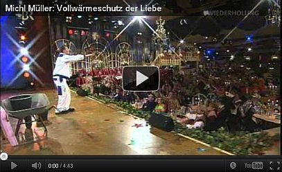
Solaranlagen - Photovoltaikanlagen - Fotovoltaikanlagen - ein Anschlag auf Hab & Gut & Leib & Leben der Ökoparasiten &
vorsätzlicher Mordanschlag auf Feuerwehrler?
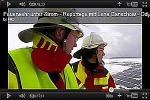
Gefahr Photovoltaik
Brandgefährlich- Seminar zu Löscharbeiten bei Photovoltaik Anlagen
Kopfball - Solarzellenbrand
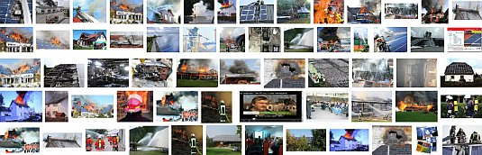
Brand Photovoltaik - Bildersuche bei Google
Gefährliche Photovoltaik - Photovoltaikanlage im Brandfall
Solaranlage – Risiko bei Feuer und Löscharbeiten
Auf Riesenprobleme und ungelöste Sicherheitsfragen beim Brandschutz und bei der Entsorgung von PV-Anlagen verweisen auch die Informationen auf diesen Links:
Allgemeines Brandrisiko von Solaranlagen - Photovoltaikanlagen
Sicherheitsrelevante Aspekte bei Photovoltaik-Anlagen
- Prof. Dr. Heinrich Häberlin, Berner Fachhochschule, Technik und Informatik, Fachbereich Elektro- und Kommunikationstechnik,
Photovoltaik-Labor, Burgdorf
Betrug bei Photovoltaikanlagen:
Riesiger Förderbetrug bei der Errichtung von Photovoltaikanlage aufgeflogen
Feuerwehr: Gefahrenpotenzial von Fotovoltaikanlagen:
http://www.feuerwehr-weblog.de/archives/2005/09/photovoltaik_fl.html
Konkreter Fall in Weilheim - Photovoltaik stoppt Feuerwehr:
http://www.merkur-online.de/regionen/weilheim/feuerwehr-versammlung-digitalfunk-einsaetze-photovoltaik;art8867,910911
Auch Herstellerpfusch gab es dazu, siehe BP:
Test.de - Solaranlagen: Feuergefahr bei Modulen
Zeitbombe PV? Hinter den Tests lauert der Feuerteufel
FAZ: Brennende Solardächer - Albtraum für die Feuerwehr
Forschungsprojekt PV-Brandsicherheit
Was das für praktische Auswirkungen auf die Feuerwehren hat, wird am 20. April aus Wennigsen bei Hannover berichtet:
Dort holte man sich zunächst von einem Experten Rat: Der Direktor und Leiter der der Berufsfeuerwehr Hannover, Claus Lange, informierte die von der
lebensgefährlichen Solarstromgewinnung mittels auch im wolkenvernebelten Niedersachsen grausam ins Kraut schießenden Photovoltaikanlagen auf den Dächern der
unendlich vielen norddeutschen Ökoabzocker entsetzten Mitglieder der Freiwilligen Gemeindefeuerwehr Wennigsen und weiterer Führungskräfte umliegender
Ortsfeuerwehren über das irre Risikopotenzial dieser solargestützten Abzocke der auf Kosten des Allgemeinwohls und der Armen im Lande: So kann das im Dienste
des Allgemeinwohls antretende Löschpersonal im gar nicht mal so seltenen (siehe oben) Brandfall durch lebensgefährliche und todbringende Vergiftung mittels
Atemgiften gefährdet werden, die den in der Hitze platzenden Solarmodulen mit Cadmiumtellurid-Dünnschichtmodulen heimtückisch und unvermutet entströmen. Der
Begriff Ökofaschismus bekommt durch derartige Vergasungsattacken auf Unschuldige eine neue Dimension. Auch die aus den Nazi-KZs berichtete Ermordung
unschuldiger Opfer durch Stromstöße ist bei brennenden Solaranlagen durchaus in Erwägung zu ziehen, deswegen berichtete der Brandexperte von entsprechend
gefährlichen Stromstößen, die von der brennenden Anlage im Löschfall entfesselt werden. Doch wie reagiert die nun aufgeklärte
Feuerwehr? Der Journalist Michael Hemme berichtet in seiner Lokalteil-Zeitungsmeldung wortwörtlich:
"Dennoch will die Feuerwehr das Rad nicht zurückdrehen. "Einsätze an Solarthermie und Fotovoltaikanlagen sind für die Feuerwehren beherrschbar", lautet das
Fazit, das Gemeindebrandmeister Karl-Heinz Ensing zieht."
Eidaguck! Hat denn der Karl-Heinz vielleicht sogar selber Solarabzocke installiert, gewinnbringende Kröten in die angebliche Energiewende selber investiert?
Das bleibt freilich unberichtet. Und so kommt, was in unserer plötzlich wieder so risikobereiten Gesellschaft kommen muß: Unterstützer, Mitläufer und
vielleicht sogar überzeugte Anhänger der Ökoreligion wollen dem weiteren Ausbluten unseres Gemeinwesens mittels Klimaschutzschwindel und Ökobetrug
keinesfalls entgegenstehen: Heute heißt es also für die Feuerwehren nicht nur in und um Wennigsen:
Einsatzpläne für Ökobrände schmieden, Kontaktaufnahme mit den Ökoparasiten, um gemeinsam im Voraus den
Brandeinsatz als Notfallplan festzulegen, Empfehlung an die Solargeier, wenigstens Freischaltanlagen zu
installieren, damit sich im Brandfall / Notfall die Anlage vom Netz abkoppelt und den Strom abschaltet. Da werden
sie freilich auf einigen Granit beißen, denn an Habsucht erkrankten asozialen Hauseigentümer würden sich bestimmt in
Mehrzahl lieber die Hand abhacken, als nochmals Geld in die Hand zu nehmen, um ausgerechnet Feuerwehrleute vor
ihrer Pest zu schützen, wenn die Ökoinvestition keine Erträge bringt. Denn im Brandfall zahlt ja die Versicherung, und
Freischaltanlagen reduzieren ja keine Versicherungsgebühren. Außerdem wirft die blöde Solaranlage sowieso nicht so
dolle ab, wie es versprochen war. Das merkt der gelackmeierte Ökoparasit freilich immer zu spät. Nicht nur,
daß nachts keine Sonne scheint, Blütenstaub und Saharasand ebenso wie Hagel und Schnee die Gewinnerwartung dämpfen
- nein, sogar wenn die Sonne mal so richtig runterbrennt, sinkt der Ertrag. Systembedingt bringen nämlich wärmere
Solarplatten weniger Strom als kühlere. Absurdistan läßt grüßen. Und deshalb wird es wohl dabei bleiben, daß die
Feuerwehren wie in Niedersachsen oder auch bei der Berufsfeuerwehr Wiesbaden (Solar-Datenbank) eben ihre Liste als
Solarkataster erstellen, in denen alle Solargefahren bzw. PV-Standorte im betroffenen Löschgebiet verzeichnet sind,
um dann im Brandfall zu wissen, wo unter höchstem Risikobewußtsein dann der kontrollierte Abbrand zu betreiben ist.
Karl Reichart schreibt mir zum Thema:
"Am 30.6.2012 meldete das Hohenloher Tagblatt/Südwestpresse: "...Blitz schlägt auch in eine Scheune mit Photovaltaikanlage."
Zwei Stunden wurde mit 110 Feuerwehrleuten nachts gelöscht. Dabei hatten die Feuerwehrleute, die bei elektrischen
Anlagen vorgeschriebene Vorsicht walten lassen. In dem Artikel wurde auf die spannungseregende Wirkung von
Scheinwerfern mit „lebensgefährlichen „Spannungen hingewiesen. Quelle Landesfeuerwehrschule Bruchsal mit ihrem
Merkblatt. Die Polizei bezifferte den Schaden mit 1 Mio Euro.
In einem Einsatzfaltblatt des Bundesfeuerwehrverbandes, das in Zusammenarbeit mit der Solarlobby entstanden ist,
werden m.E. die Gefahren verharmlost. Aus Sichtkontrolle Anlage in Ordnung folgt als Entscheidungspfad: Keine
Gefahr! BSW
Feuerwehrkarte Endversion
In einigen Foren, die sich mit dem Thema befassen, wird immer "Keine Hochspannung lt. VDE" betont, in den Texten
wird dann aber doch von bis zu 1.000 Volt geschrieben.
Hinweis: Der Wirkungsgrad von Voltaikanlagen und Inverteranlagen nimmt mit zunehmender Temperatur ab. Die Spannung
eines Moduls bleibt jedoch erhalten, nur der Strom reduziert sich aufgrund des höheren Innenwiderstandes. Ab 60
Volt wird es gefährlich. Die Netztrennung der meist außen zugänglichen Inverter-Anlagen nützt daher nichts. 130 mA
sind tödlich, Lichtbogen von DC sind ebenfalls ungleich gefährlicher als AC.
Auf die Problematik der thermischen Aufspaltung einer PVA wird nicht eingegangen. Es wird nur angemerkt: Zerstörte
Anlagen sind als "Brandschutt" zu behandeln.
Als eh. Marinoffizier weise ich noch auf die besonderen Gefahren von Lichtbogen, Aluminiumbrand und Löschwasser
hin! Ein Brand in Aluminiumaufbauten von Kriegsschiffen, schlicht der Horror. Mit Öl!!! löschen und dann den
Ölbrand löschen. Welche Feuerwehr hat Schweröl als "Löschmittel", bisher gab es aber auch keine "Dachstühle" aus
Aluminium!"
Ökoreich Deutschland heute. Auch am Tag der deutschen Einfalt, dem 3. Oktober 2011, auf einem millionenschwer abgebrannten Bauernhof
in Gädheim. Daß dabei mehr als 400 Schweinchen, Ferkelchen und Kühe (die grauenhaften Solarporno-Kadaverfotos erspare ich
Ihnen, da stehen nur Ökozecken drauf) ihr Leben aufgeben mußten, fällt neben dem Totalverlust der auf allen
abgefackelten Betriebsgebäuden installierten Solar-PV-Anlage und der Biogasanlage - siehe ehemaliges Luftbild bei Google -
freilich nicht geringste Rolle.
Größere Kartenansicht
Schlimm ist dagegen die irre und verabscheuungswürdige brandbedingte CO2-Belastung des Gädheimer Ökoklimas zu bewerten.
Das wird dort den Restoktober bis mindestens Weihnachten sicher dolle aufheizen. Den Schaden zahlt die Brandversicherung, der Solarbauer
und Biovergaser ist da fein raus. Der Populationsentzug auf dem Schweinemarkt wird die Preise regulieren und ist deswegen gut zu
verschmerzen. Und der Bauernverband, der solchen Wahnsinn genauso wie die Gülle- und
Lebensmittelvergasung nach besten Kräften unterstützt, wird wohl dafür sorgen, daß die Versicherungsprämien
für agrarische Solarzecken schön unten bleiben und wie der Rest des Ökomülls in alle bundesdeutschen Vorgärten
und Hinterhöfe gleichmäßg verkippt werden. Alles andere wäre ja gelacht, oder?
Solarschmarotzerei der Ökoparasiten auf Kosten von Mutter Natur
Auch die Umweltfreundlichkeit der PV-Anlagen ist nicht top:
Die meisten Solarmodule enthalten hochgiftige und in üblichen Elektro- und Elektronikprodukten längst EU-weit verbotene Schadstoffe wie Cadmium (in
Dünnschichtmodulen mit Kupferindiumgallium-Diselenid-Zellen als Cadmiumsulfid-Pufferschicht, in Cadmiumtellurid-Modulen als aktives Zellmaterial) und
Blei (im Lötmaterial der Verbindung zwischen Zelle und Modulbox), die während der Nutzungsdauer unkontrolliert an die Umwelt freigesetzt werden.
Giftbelastete Solarmodule müssen dann nach Nutzungsende als teurer Sondermüll entsorgt werden:
cat.inist.fr/?aModele=afficheN&cpsidt=5368260
Schadstoffe aus PV-Modulen
www.solarone.de/photovoltaik_lexikon/photovoltaik_cadmium_tellurid.html
www.solarportal24.de/nachrichten_17369_studie__solarstrom_fast_90_prozent_umweltfreundlicher_als_no.html

ZDF 6.6.2011: Spreewald-Hammer: Erst subventioniert Wald aufforsten, dann für PV-Anlage abholzen - Vollverarsche des Steuerzahlers!
Dazu Kommentare der PV-Jünger: "Waldabholzung für mehr Solarstrom, "prima" Klimarettung"
Rechtliche Probleme bei Schäden und Risiken durch Photovoltaikanlagen
Bei PV-Anlagen stellen sich aus rechtlicher Sicht eine Unmenge von Fragestellungen. Sie können hier nur kurz angerissen werden.
Mieter unter PV-Anlagen
Hier besteht die Frage, ob es der PV-belastete Mieter einfach so hinnehmen muß, daß sich seine Mietwohnung durch das
PV-typische Brandrisiko und die negativen gesundheitlichen Einflüsse aus dem PV-typischen Elektrosmog - meist im gravierenden
Unterschied zur Beschaffenheit der Mietsache zum Zeitpunkt der Anmietung - so dramatisch verschlechtert? Vergleichen wir das mal mit
einem Einzug von Zeitbombenbastlern in der unteren Mietwohung, die ständig ohrenbetäubende Marschmusik hören. Gibt es
hier Sonderkündigungsrechte, Anspruch auf Mietminderung, Schadensersatzansprüche, Recht auf Nachrüstung von PV-spezifischer
Sicherheits- und Schutztechnik sowie Wartungsvorgänge im zeitlich und risikobedingt angemessenen Turnus usw.?
Öffentliche Gebäude
Was ist eigentlich mit all den Schulen, Rathäusern, Kindergärten, Amtsgebäuden und sonstigen öffentlichen Bauwerken,
die mehr und mehr flächendeckend mit Photovoltaikanlagen bestückt werden? Wie stellt sich hier die Verantwortung im Brandfall,
gegebenenfalls mit Todesfolgen (wie am 12.05.2014
in Spaatz im Havelland) oder Verletzungen der Nutzer sowie Vernichtung wichtiger Archivalien und sonstigen mobilen und immobilen
Einrichtungsgegenständen? Tritt hier eine Privathaftung der an der falschen Entscheidung beteiligten Politiker, Landräte,
Bürgermeister, Stadträte und Gemeinderäte, Schulleiter, sonstiger Beamten, Planer und Gewerbetreibenden - vgl. Katastrophe
Eisstadion Bad Reichenhall - ein, gibt es eine Amtshaftung, sind Schäden versicherungsrechtlich
abgedeckt? Müssen wir wieder mal auf die Totalkatastrophe warten, bis hier endlich aufgewacht wird?
Der PV-Käufer und PV-Betreiber
Der PV-Käufer und Betreiber könnte sich die Frage stellen, ob ihn die pflichtgemäß geschuldete Beratung auf die Extremrisiken seiner PV-Anlage seitens des
Planers und seitens des Errichters hinreichend aufgeklärt hat, oder ob seine Kaufentscheidung mangels ausreichender Aufklärung zustandegekommen ist. Außerdem
stellen sich im Schadensfall - sei es die PV-Elektrosmogbedingte Krankheit der Bewohner oder Minderung seiner viehwirtschaftlichen Erträge unter PV-Anlagen,
sei es die Schadenswirkung eines PV-Brands auf eigenes oder fremdes, ggf. auch benachbartes Leib und Leben viele sehr spezielle Haftungsfragen. Interessant
ist auch die Frage nach seiner Mitwirkungspflicht, um einen Schaden seiner PV-Anlage zu vermeiden. Hat er alle vorgeschriebenen und für einen Betreiber derart
gefährlicher Technik angemessenen Sicherheitsprüfungen und Instandhaltungen pflichtschuldigst erfüllt oder gar wegen derer Kosten vorsätzlich vermeiden und
damit den Großschaden leicht oder bei Vorsatz gar grob fahrlässig versäumt? Muß er dann aus seinem Privatvermögen für alle Schäden im Schadensfall alleine oder
im Zusammenhang mit der Gebäudeversicherung zumindest mit haften? Kann er im Schadensfall mit Vermögensschaden und Todesfolge bei Dritten gar ins Kittchen
kommen?
An auch diesen Fragenkomplex richtet sich eine Initiative des Energieversorgers e.on mit ihrem "e.on Solarprofi". In einer in e.on-Rot gehaltenen Werbeanzeige
(z.B. Neue Presse Coburg 19.12.2016 richtet sie sich neben dem Ganzkörperbild eines vetrauensheischenden Bergsteigertyps namens Matthias Krieg in
Handwerkermontur mit Kletterseil in der Linken und umgeschnalltem Klettergeschirr sowie weißem Bergsteigerhelm auf der dreitagesbartverschönerten Rübe und
daraus ein zuversichtlicher Anpackerblick quasi sprungbereit mit folgendem Werbetext an die arglosen und depperten Solarbetreiber, die offenbar gar keine
Ahnung von ihrer totgeweihten PV-Anlage haben, der nun der Krieg erklärt wird (Auszug):
"Dieser Mann würde Ihnen gern aufs Dach steigen. Er ist für Sie da - ... der E.ON SolarProfi (Befremdliche Groß- und Zusammenschreiberei im Original) ...
Jede dritte Photovoltaikanlage in Deutschland hat einen Mangel* (*Studie des TÜV Rheinland) ... Doch zum Glück gibt es den E.ON SolarProfi [erg. KF: gemeint:
Matthias Krieg, der Bartträger in Klettermontur]. Er hat seinen [KF: sicherheitsschutzbehelmten] Kopf voller Photovoltaik-Knowhow [KF: Und vielleicht auch
Geschäftstüchtigkeit???], findet jeden Defekt - und behebt ihn. ... Bei der Installation sind häufig Leitungen nicht richtig isoliert worden. ... Hier zeigt
der E.ON SolarProfi echtes Handwerk und isoliert alles fingerfertig professionell [doppelte Adjektivierung als kaum übertreffbarer Bedeutungsverstärker der
Werbesprache für Dummies, es fehlt eigentlich nur noch der der Vorsatz "extrem" oder gar "sehr extrem" bzw. "extrem extrem".]" Weiter mit Zwischenüberschrift:
"Sieht haarfein hin" Darunter: "Mit scharfem Blick entdeckt der E.ON SolarProfi feine Haarrisse in PV-Modulen, die nicht mehr richtig arbeiten. Aus diesen
sogenannten Schneckenspuren bilden sich manchmal Hotspots: überhitzte Segmente, die brandgefährlich sind. ... Viele Anbieter von PV-Systemen gibt es gar nicht
mehr. ... Gern fühlt er [KF: der E.ON SolarProfi, wer denn sonst?] jeder Solaranlage den Puls [KF: Damit mutiert die PV-Anlage zum erkrankten Organismus, der
E.ON SolarProfi gar zum PV-Arzt bzw. Solaranlagen-Heiler] ... Oftmals haben sich in PV-Anlagen kleinste Fehler [KF: folgend angesprochen wird ein "fehlender
UV-Schutz" - von dem sicher nur die wenigsten PV-Betreiber überhaupt jemals gehört haben, geschweige einen solchen auf Ihrer Anlage vorweisen könnten - ein
genialer Schachzug, um sozusagen die komplette Zielgruppe an den Notfallhörer zu zwingen] eingeschlichen. ..." Und selbstverständlich
bietet E.ON dem nun endlich ganz und gar verunsicherten PV-Deppen eine Kostnix-Onlinehilfe (man kennt ja seine vergeizten Pappenheimer!): "Wie gut Ihre
PV-Anlage arbeitet, erfahren Sie beim kostenlosen Ertragscheck: ...[Webseite]." Und wer da nun seine Daten eingibt, wird möglicherweise knapp unter dem
Herzkasper wieder rausgelassen, um gleich vollverschreckt und hochanimiert zu extrem besseren Arbeitserträgen seiner tückischvergammelten
Hochbrandexplosionsschwermetallvergiftungsrisikoanlage auf dem eigenen Hausdach namens PV-Anlage wen wohl
kostenpflichtig aus allen Ertragsminderungen bei gleichzeitigem Höchstrisiko zu baldigster PV-Explosion mit folgendem Brandtotalschaden mit Todesfolge erlöst
sofortissimo zu ordern? Na klar, den Matthias Krieg, vulgo E.ON Solarprofi. Wer sollte hier nicht zugreifen wollen? Und wie schlau von unserem Energieriesen
eingerichtet! Erst die "Erneuerbaren" mit allen perfiden Tricks der Bevölkerung draufpressen, dann den in der Klimaschutzfalle rettungslos verlorenen Ökodeppen,
der meist noch nicht einmal ein Märkchen, geschweige denn ein Eurocentchen aus seiner die "Kostenlossonne" verarbeitenden Pfuschtechnik rausgepreßt hat, bis
zum Totalschaden abzuzocken. Es sei ihnen von ganzem Herzen gegönnt - im Namen all der Millionen, denen inzwischen der Strom abgeknappst wurde, da sie die
Ökorechnung nicht mehr bezahlen konnten!
Zusatzinfo PV-Schneckenspuren als sicherer Hinweis auf gefährliche Mikrorisse/Microcracks, die aber auch in Modulen ohne sichtbare Schneckenspuren
vorliegen können: Schneckenspuren im Detail (Worm Marks, Snail Tracks)
Der PV-Errichter
Der PV-Errichter muuß sich seinerseits fragen, ob er im Falle der eigenen Inanspruchnahme bei Schadensfällen - das kann
selbstverständlich nicht nur durch den direkt geschädigten PV-Betreiber oder dessen von der PV-Anlage direkt geschädigten
sonstig betroffenen Personenkreis (Nutzer, Helfer, Nachbarn, Feuerwehr, Spätschädenopfer, ...) auch durch den üblichen
Schadensregulierer - also eine Versicherung im Bereich Gebäude, Inventar, Sicherheit (Berufsgenossenschaft) und Gesundheit
(Krankenversicherung)- sein, seinerseits Ansprüche an den Hersteller der PV-Anlagenkomponenten nach dem Produkthaftungsgesetz hat.
Undsoweiterundsofort. Fragen über Fragen, die meist niemand stellt, bis sie sich im Schadensfall von selbst stellen. Bleiben Sie
dran!
Elektrosmog auf, neben, unter und in PV-Anlagen
Abschließend noch zum Problemthema PV-Elektrosmog die Stellungnahme vom Experten/Fachmann, Elektromeister, Baubiologe IBN und
Gutachter für Blitzschäden an Geräten Werner Bopp aus Bad Mergentheim, Webseite: www.baubiologie-unterfranken.de
Verursachen Photovoltaikanlagen Elektrosmog?
Pressemitteilung von: Baubiologie Regional
Grundsätzlich muß diese Frage zunächst mit „Ja“ beantwortet werden. Wie bei jeder
Elektroinstallation und jedem elektrischen Gerät entstehen elektrische und magnetische Felder.
Elektrische Gleichfelder
Da die Solarmodule Gleichstrom erzeugen, besteht bei Lichteinfall [KF: Also nur tagsüber, nachts darf sich der PV-Anlagenbesitzer
nur wegen eventueller PV-bedingter und ebenfalls am Tag PV-induzierter Schmorbrandherde, Tag für Tag nachlassender Stromerträge
aus seinen automatisch nachlassenden PV-Modulen und einer Entdeckung seiner PV-bedingten Schwarzgeldgeschäftchen und
Subventionsbetrügereien Hand in Hand mit seinem lieben PV-Errichter durch die sich genau in diesem Umfeld immer heftiger agierenden
Steuerfahnder grämen] zwischen der + und der - Leitung des Solargenerators ein elektrisches
Gleichfeld. Diese beiden Leitungen sollten (auch aus Blitzschutzgründen) relativ nahe beieinander verlegt werden.
Durch diese räumliche Nähe und der vorgeschriebenen Erdpotentialfreiheit ist das elektrische Gleichfeld nur sehr nahe an
den Solarmodulen und den Gleichstromleitungen meßbar. Elektrische Gleichfelder sind zudem elektrobiologisch erst ab einer
sehr hohen Spannung bedenklich. Nach dem baubiologischen Standard gilt eine Luftelektrizität bis 500 V/m als schwache Anomalie.
Das magnetische Gleichfeld schwankt bei einer Photovoltaikanlage mit der Sonneneinstrahlung. Als Installationsempfehlung gilt
sinngemäß das Gleiche wie bei den elektrischen Feldern. Nach dem baubiologischen Standard gilt ein magnetisches
Gleichfeld bis 2 µT als schwache Anomalie. Problematisch sind magnetische Gleichfelder vor allem dann, wenn sie Eisenteile in der
Nähe eines Schlafplatzes oder gar im Bett magnetisieren.
Elektrische Wechselfelder
In einer Solarstromanlage sind elektrische Wechselfelder vor allem an der Wechselspannungsleitung vom Zähler zum Wechselrichter und
am Wechselrichter selbst vorhanden. Obwohl in den Leitungen zu den Solarmodulen nur Gleichstrom fließt, sind an diesen Leitungen
häufig elektrische Wechselfelder messbar. Dieses Phänomen kann auf folgende Umstände zurückgeführt werden:
1. Sind die Gleichstromleitungen in der Nähe von Wechselspannungsleitungen verlegt, koppeln sie in das vorhandene
elektrische Wechselfeld der Wechselspannungsleitungen ein. Das elektrische Wechselfeld z.B. einer Leitung zu einer Steckdose oder zum
Dachbodenlicht, kann dadurch noch an den Solarmodulen gemessen werden – und dies Tag und Nacht!
2. Einige trafolose Wechselrichter trennen nicht sauber zwischen der Wechselspannungs- und der Gleichstromseite. Die Folge ist ein
elektrisches Wechselfeld auf den Solarmodulen. Die Rahmen von Modulen in Anlagen mit trafolosen Wechselrichtern müssen (nach VDE)
daher geerdet werden. Zur Elektrosmogreduzierung ist die Erdung jedoch nicht ausreichend.
Ein Problem können auch die von den Wechselrichtern erzeugten Rückwirkungen in das Stromnetz darstellen. Durch das Zerhacken
des Gleichstroms und Umformung in einen Wechselstrom entstehen hochfrequente Oberwellen (Störspannungen). Wechselrichter mit
einem Hochfrequenztrafo haben zwar geringere magnetische Wechselfelder, dafür aber eben die hochfrequenten Felder. Elektrische Felder
– auch hochfrequente – lassen sich jedoch relativ leicht abschirmen.
Magnetische Wechselfelder
Vor allem die Wechselrichter erzeugen erhebliche magnetische Wechselfelder - allerdings nur bei Tage. Die Stärke der
magnetischen Wechselfelder ist abhängig von der jeweiligen Sonneneinstrahlung. Wechselrichter sollten daher in einem
größeren Abstand zu tagsüber benutzten Schlaf- und Ruhebereichen montiert werden.
Zusammenfassung
Die zusätzliche Elektrosmog-Belastung durch eine Photovoltaikanlage ist, bei richtiger Ausführung,
verhältnismässig gering. Beispielsweise ist das magnetische Wechselfeld einer trafobetriebenen Halogenleuchte oder
eines kleinen Radios neben dem Bett häufig höher als die an einer Photovoltaikanlage gemessenen Werte.
Die Solarstromleitungen sollten eng beieinander und möglichst weit entfernt von allen stromführenden Leitungen verlegt
werden. Durch eine zusätzliche Verdrillung der Plus- und Minusleitung und eine Minimierung der Leiterschleifen auf dem Dach kann
die Einkopplung von Wechselfeldern weiter reduziert werden.
Eine Abschirmung durch ein Metallrohr, Wellschlauch oder die Verwendung von abgeschirmten Solarleitungen ist empfehlenswert. Alle obigen
Maßnahmen bewirken gleichzeitig auch eine Reduzierung des Blitzschadenrisikos. Sollten bei einer baubiologischen Messung
erhöhte Störspannungen auf der Wechselspannungsseite festgestellt werden, muss unter Umständen ein Netzfilter eingebaut
werden.
Ach ja, und dann das Hochwasser und die PV-Wechselrichter-Anlage im Keller:
Lebensgefahr,
Vorsicht Stromschlag: Gefahren in überfluteten Häusern
Kritisches zur Solarthermie
Durch die Kombination von Gasbrennwertanlage mit Solaranlage merkt der getäuschte vertrauensselige Verbraucher den nahezu perfekten
Betrug nicht, da er die Effizienz der Solaranlage durch diese "Vermischung" der Heiztechnik (Solar mit Gasbrennwert) nicht nachvollziehen kann.
Wollt ihr den totalen Öko? Aber ja, wie immer.
Platzende Ausdehnungsgefäße, defekte Pumpen, unbrauchbare Regler, Solarkollektoren mit mehr als 30%
Leistungsverlust, Kombispeicher mit Haarrissen zwischen Trinkwasser/Heizungswasser, defizitärer
Betrieb mit mangelhaftem Warmwasser- und Energieertrag, Selbstentzündung, Insolvenz und Gewährleistungsfrage
usw. - die Probleme der thermischen Solaranlagen: www.solarkritik.de
und www.haustechnikdialog.de/forum.asp?fid=18353
Forum
Haustechnik-Dialog - Kochende Solaranlagen, Luft in der Anlage, über 60% falsch montiert!
Institut für Schadenverhütung und Schadensforschung e.V.: Selbstentzündung von
Solarthermie-Anlagen / Solarkollektoren - Anlage erhitzen auf über 150 Grad Celsius, Holz entzündet sich bei 120 °C!
Solaranlagen - Verkalkung und
Betrug - wie Solarfirmen dem Kunden die extremen Verkalkungsprobleme hinwegschwindeln - Ein aufsehenerregender
WDR-Fernsehbeitrag zur Unwirtschaftlichkeit von Solaranlagen und den weitverbreiteten Kundenbschiß!
Forum Haustechnik-Dialog
- Leistungsvergleich Solarkollektoren
Forum Haustechnik-Dialog - Energieeinsparung durch
Solaranlagen?
Eine Unmenge von Bürgermeistern und Gemeinderäten sind - hin und wieder vielleicht sogar auf
Fürsprache interessierter Verwaltungsmitarbeiter oder sonstiger Verantwortungsträger auf den
Ökoschwindel mit Solar hereingefallen. Ein schönes Beispiel dazu zeigt sich bei der irre unwirtschaftlichen
Solarkollektoranlage für das Beckenwasser im
beheizten Freibad der Gemeinde Dornburg-Frickhofen: "Gewaltige Kosten, praktisch kein Effekt" - faßt
die Nassauische Presse die Aussage des Bürgermeisters Andreas Höfner (CDU) zum Betriebsergebnis der
Solarheizung gegenüber einer Anfrage der kritischen Freien Wähler zusammen. Mit 170 Quadratmetern
Kollektorfläche hat man 1996 den Betrieb begonnen. Die Anlage "liefert einen kaum messbaren Anteil zur
Wassererwärmung" - so der erstaunlich ehrliche CDU-Bürgermeister laut Nassauische Presse am 4. Januar
2010. Dafür hat die Solarheizung damals 86.000 Mark gekostet, zzgl. "Planungskosten von rund 100 000 Mark".
Von den bestimmt nicht unerheblichen Wartungskosten ist dabei noch gar nicht die Rede. Die damaligen Projektbeteiligten
werben mit ihrem Erfolg stolz im WWW. Und landauf und -ab errichten die sozialschmarotzenden, wenn nicht sogar von
kriminellen Gangstern gesteuerten ökommunistischen Öko-Kommunen weiteren Solarmüll auf Kosten der Ärmsten der
Gesellschaft, die den Preis für die mehr und mehr ökomäßig-zwangsbepreisten Stromkostensteigerungen
dank der Ökozeckenplage zahlen müssen, bis gar nix mehr geht ...
www.solarbusiness.de - Hier können Sie selber nachlesen, wie des Teufels Generäle
und sonstige abgefeimte Füchse einer profitgeilen Volksverarmungstechnik das Wort reden, die angeblich das Klima verbessert, die
profimäßig verängstigte und verdatterte Menschheit vor Ausrottung durch Sonne, Regen, Wind und Eis bewahrt und sowieso
nur in jeder Hinsicht gut und fein ist. Gönnen Sie sich die aufgestelzten Argumente dort, vielleicht müssen auch Sie mal
lügen lernen. Nur gröbstmöglich muß Scharlatanerie, Schwindel und Betrug auftreten, dann wird es von allen geglaubt.
"Solarenergie stoppt Klimawandel" heißt es da allen Ernstes
(http://www.solarbusiness.de/fakten/sonnenenergie-vier-gute-gruende/solarenergie-stoppt-klimawandel/ 30.06.2010)! So wendet man dieses
eherne Gesetz der professionellen Massenverblödung und Volksverdummung praktisch an. Schauen Sie sich die dort so overstolz
abgebildeten Großmeister des Hinterstübchens und Politbetrugs und auch die Kleinmeister des Technikwahnsinns, vielleicht sogar
Politikerkorruption und Beamtenbestechung, auf jeden Fall -beeinflussung ruhig an - Sie sehen fast aus wie Du und Ich! Nur noch ein
bißchen schlauer, gerissener, füchsischer und wölfischer und abgefeimter und mit noch mehr Danziger Goldwasser gewaschen,
oder? Und deswegen schaffen diese Typen es auch, alle Versuche ihrer Dämpfung durch ihr so oft bewährtes Lobbygetümmel
niederzureiten, gut zu sehen beim Aufritt gegen Röttgens so gutgemeinte Solarkürzungsversuche 2010. Weitere Info zum solaren
Wahnsinn der von der Solarparasitengrippe verseuchten Solarbauernschlauen, die ihren der ökofaschistischen "Volksgemeinschaft"
abgegrasten Solarertrag nun auch zum Schneeräumen und Schneetauen auf den PV-Anlagen benötigen:
Schneebeseitigung bei Photovoltaikanlagen
Und hier SWR-Odysso vom 19.11.2009:
Ökologie - Irrwege und Irrsinn im
Umweltschutz und Klimaschutz: Windkraft, Emissionshandel, Biokraftstoff
Zusammenfassung
Was ist das Betrüerische an den EEG-geförderten - nur scheinbar "alternativen" und "erneuerbaren" - Energien (Renewable Energy
Sources RES)?
Zunächst mal, was ist Betrug nach dem § 263 StGB - dem Strafgesetzbuch? Betrug ist demnach eine Vermögensschädigung durch
Täuschung in Bereicherungsabsicht. Wie verhält sich das beim EEG? Ich folge hier der Argumentation des
Verbandes für Gesundheit und Landschaftsschutz VGL e.V. und der
Nationalen Anti-EEG-Bewegung NAEB e.V.
Liegt zunächst einmal überhaupt eine Bereicherungsabsicht der EEG-Begünstigten (Anlagenhersteller, Anlagenplaner,
Anlagenbetreiber, Anlageninvestoren) vor? Aber selbstverständlich. Ohne die Gewinnversprechungen mittels Steuervorteil und
marktunüblichem Ertrag würde bestimmt kaum jemand aus Jux und Dollerei eine EEG-begünstigte Energieerzeugungsanlage
planen, finanzieren, errichten bzw. erwerben, sondern sein Geld lieber weiter in den Ausbau der Spielzegeisenbahn im Keller stecken.
Und die Täuschung? Auch die liegt vor, denn all die angeblichen "Vorteile" rund um Klimaschutz und Arbeitsplatzsicherung werden
nicht einmal mehr von den EEG-Profiteuren und EEG-Befürwortern ernsthaft aufrechterhalten. Produziert wird im Ausland wesentlich
günstiger, selbst die EEG-Anlagenproduzenten verlagern die Arbeitsplätze mehr und mehr ins Ausland und Klimaschutz durch
überteuerte CO2/KWh aus PV usw. ist eben keiner, selbst wenn es Klimaschutz durch CO2-Vermeidung gäbe, was ja ebenfalls nur
ein Märchen der Ökoparasiten ist.
Und die Vermögensschädigung anderer? Ja du meine Güte, wer bezahlt denn die Zeche? Du und ich und auch der Hartzler, der
nun zwischen Strom und Fressen entscheiden muß, vgl. MDR-Studie:
Hartz IV reicht nicht für Stromkosten. Und solche Gesetze, ohne Volksabstimmung herbeigeführt durch all die
ökomäßig alternativlos gleichgeschalteten Parteigenossen in Bundestag und Bundesrat und an den Schalthebeln der diversen
Bundesregierungen und Ministerien, sollen durch das Grundgesetz legitimiert sein? Da glaube ich als Vater von vier Kindern lieber an
den Klapperstorch oder die unbefleckte Empfängnis und Jungfrauengeburt! Aber ehrlich. Ach so, wir sollen jetzt alle selber
EEG-Stromerzeuger werden und die Wertschöpfung aus dem Betrug selber vereinnahmen, so sinngemäß die Wahlkampfpropaganda
des unterlegenen Landratskandidaten im Landkreis Lichtenfels namens Marx, SPD, ein öffentlicher Bediensteter und
Straßenbauingenier. Ohne mich. Denn sowohl für die marxistische Planwirtschaft wie auch für den Betrug am Nächsten
wird am Ende abgerechnet. So jedenfalls meine Erfahrung und meine Überzeugung.
Doch nach diesem kleinen Ausflug in die technischen und moralischen Untiefen der EEG- und Solarlandschaft namens RES wieder
zurück zum Heizen und Temperieren:
Bei gewisser Bauherrnbereitschaft zum experimentellen Bauen und zur ggf. erforderlichen Nachrüstung nach den Erfahrungen des ersten
Betriebsjahres gelingt auch der Einsatz besonders wirtschaftlicher Temperieranlagen. Hier steht der Planer in verschärfter
Aufklärungs- und Beratungspflicht, um bei seinem Bauherrn übertriebene Erwartungen mit vorprogrammiertem
Enttäuschungspotential zu vermeiden. Nach detaillierter Planung und Ausschreibung kann übrigens jeder verläßliche
Heizungsbauer solche Anlagen bauen. Auch die Heizzentralen sind vertraute Technik. Ingenieure und Bauphysikgläubige haben es da
nicht so leicht - es muß radikal umgedacht werden. Wer macht das schon gerne? Und Anfänger machen - wie wir alle -
Anfängerfehler. Oft müssen diese dann mühsam ausgebadet werden, manchmal in sehr heißem Wasser...
Und nur zur Versöhnung: Selbstverständlich ist es aus Umweltschutzgründen sehr sinnvoll, neue
Energiespartechniken und Abfallvermeidungstechniken zu entwickeln und einzusetzen. Das sage ich gerade mit mehr
als 30jähriger Mitgliedschaft im bayerischen Bund Naturschutz BN e.V.. Für Naturschutz und Umweltschutz jedoch
geradezu gewissenlos Pseudotechnologien zu entwickeln und zugunsten der Ökoprofiteure zu bevorzugen, und die
damit verbundenen - genau gegenteiligen - Auswirkungen auf die Natur, die Gesellschaft als Ganzes und leider auch den
Verbrauchergeldbeutel widerspruchslos hinzunehmen, und dafür die altbewährten und erwiesenermaßen
wirtschaftlichen Energiespartechniken auf den Müll zu werfen und nicht weiterzuentwickeln - dagegen bin ich gerade
als Naturfreund, Denkmalfreund und meinetwegen auch grün-moderner Liberalkonservativ-Sozialist mit aller
Entschiedenheit. Und Sie?
Und hier noch eine kleine Literaturauswahl zur PV-Technik und Wartung:
Weiter: 24 - Erhaltung und/oder Umbau bestehender Heizsysteme / Die Befreiung von den
Anforderungen der Energieeinsparverordnung EnEV gem. § 25 EnEV
Energiesparseite mit weiterer Aufklärung
PV-Brandchronik II
Bauberatung - auch mit Angeboten zur Planung, Kosten und Ausführung Hüllflächentemperierung
Zur Baustoffseite - mit vielen Tips zum besseren Bauen
Altbau und Denkmalpflege Informationen Startseite

 "Zum Fegfeuer" Der etwas andere Klosterladen
"Zum Fegfeuer" Der etwas andere Klosterladen


{kind=link}
{kind=link}